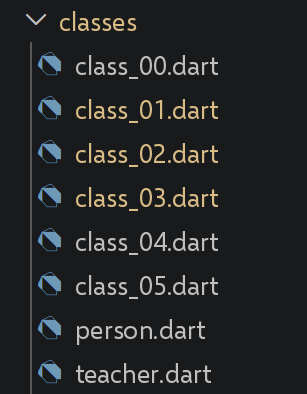
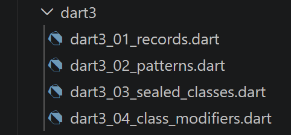

3. Die Grundlagen

Dieses Kapitel folgt Skript für Skript der Abfolge des Kapitels [The Fundamentals] des TypeScript-Kurses: dieselben Abschnitte in derselben Reihenfolge, mit einem Dart-Skript für jedes TypeScript-Skript.
3.1. Die Grundlagen von Dart
Dieser erste Abschnitt behandelt die Grundlagen, die allen Dart-Programmen gemeinsam sind: Variablen, Listen, Schleifen, Funktionen, Gültigkeitsbereiche von Variablen, Basistypen und Konvertierungen.

3.1.1. Skript [basics_01]
| // basics_01.dart
// Portierung des TypeScript-Skripts basics-01.ts: Variablen, Arrays, Schleifen,
// Destrukturierung, Funktionen, dynamische Typisierung, Vergleichsoperatoren.
void main() {
// Konstante - in Dart wie in TypeScript deklariert [const] eine Konstante,
// deren Wert zur KOMPILIERZEIT bekannt ist (eine noch strengere Konstante
// als das [const] von TypeScript, das nur einen zur Laufzeit
// bekannten und nicht neu zugewiesenen Wert verlangt)
const String name = "dupont";
// Bildschirmausgabe - [print] ist das Dart-Pendant zu [console.log]
print("name : $name");
// ein Array (in Dart "Liste" genannt) mit Elementen verschiedener Typen
// [dynamic], da diese Liste bewusst mehrere Typen mischt
// (Demonstration) - es ist das Pendant zu [any] in TypeScript: Dart
// führt dann keine Typprüfung zur Kompilierzeit mehr
// für die Elemente dieser Liste durch
final List<dynamic> array = ["one", "two", 3, 4];
// Anzahl der Elemente
int n = array.length;
// eine Schleife
for (var i = 0; i < n; i++) {
print("array[$i] = ${array[i]}");
}
// Initialisierung von 2 Variablen mit dem Inhalt einer Liste
// Dart kennt keine Listen-Destrukturierung bei der Zuweisung wie
// TypeScript (const [a, b] = array); seit Dart 3 liefert ein
// "List Pattern" dasselbe Ergebnis (siehe dart3/*.dart
// für eine vollständige Darstellung der Patterns)
final [string1, string2] = ["string1", "string2"];
// Verkettung der 2 Zeichenketten
final String string3 = string1 + string2;
// Ergebnis ausgeben
print([string1, string2, string3]);
// Verwendung einer Funktion
display(string1);
// der Typ einer Variablen lässt sich mit runtimeType ermitteln
// (das Dart-Pendant zum [typeof]-Operator von TypeScript)
displayType("n", n);
displayType("string1", string1);
displayType("array", array);
// [ACHTUNG, grundlegender Unterschied zu TypeScript] In TypeScript erlaubt der
// Typ [any], dass eine Variable während der Ausführung ihren Typ ändert
// (n = "has changed" nach n = 4 ist gültig). In Dart ist der Typ einer
// Variablen durch ihre Deklaration ein für allemal festgelegt: [n] wurde
// oben als [int] deklariert, daher ist n = "has changed" ein KOMPILIERFEHLER,
// nicht bloß ein zur Laufzeit tolerierter Fehler. Um ein
// mit [any] vergleichbares Verhalten zu erhalten, müsste man von Anfang an
// [dynamic n = array.length;] deklarieren - dieses Skript tut dies aber
// bewusst nicht, um den Unterschied hervorzuheben.
// Die folgende Zeile ist daher AUSKOMMENTIERT: Wird sie einkommentiert, entsteht ein
// Kompilierfehler.
// n = "has changed";
print('type[variable n]=${n.runtimeType} (Dart forbids assigning it '
'anything other than an int: see the comment above)');
// eine Funktion kann ein Ergebnis zurückgeben
int res1 = f1(4);
print("res1=$res1");
// eine Funktion kann mehrere Werte zurückgeben: Dart kann kein
// heterogenes JS-Array direkt in einzelne Variablen zurückgeben, mit
// einer Syntax wie [let x, y, z; [x, y, z] = f()] in TypeScript. Man verwendet
// entweder ein Record (siehe dart3/, die moderne typisierte Lösung) oder hier,
// um nah am Originalskript zu bleiben, einen Wert, den wir mit einem
// Pattern destrukturieren (Dart 3):
final (res2, res3, res4) = f2();
print("(res2,res3,res4)=${[res2, res3, res4]}");
// wir hätten diese Werte auch in einer Liste abrufen können
final List<dynamic> t = f2ListAny();
for (var i = 0; i < t.length; i++) {
print("t[$i]=${t[i]}");
}
// einige Tests
for (var i = 0; i < t.length; i++) {
// zeigt nur die Zeichenketten an - [is String] ist das Dart-Pendant zu
// [typeof(x) === "string"]
if (t[i] is String) {
print("t[$i]=${t[i]}");
}
}
// [ACHTUNG, grundlegender Unterschied zu TypeScript/JavaScript] Der
// Operator [==] von Dart entspricht IMMER dem strikten [===]
// von JavaScript: Dart kennt keinen Vergleichsoperator mit
// impliziter Typumwandlung wie das nicht strikte [==] von JavaScript.
// Der Vergleich "2" == 2 ist in Dart daher immer false, egal welcher
// Operator verwendet wird - der folgende Code hat deshalb bewusst
// nur einen Zweig (keinen Abschnitt "mit ==" und dann "mit ===" wie
// im ursprünglichen TypeScript-Skript, da es diese Unterscheidung nicht gibt).
if ("2" == 2) {
print("the string 2 is equal to the integer 2");
} else {
print("in Dart, the string '2' is never equal to the integer 2 "
"(no implicit conversion like JS's non-strict ==)");
}
// weitere Tests
for (var i = 0; i < t.length; i++) {
// zeigt nur die ganzen Zahlen >10 an
if (t[i] is int && t[i] > 10) {
print("t[$i]=${t[i]}");
}
}
// eine while-Schleife
List<num> t2 = [8, 5, 0, -2, 3, 4];
var i = 0;
num sum = 0;
while (i < t2.length && t2[i] > 0) {
print("t2[$i]=${t2[i]}");
sum += t2[i];
i++;
}
print("sum=$sum");
}
// das Hauptprogramm endet hier, da es keinen ausführbaren Code mehr gibt
// Ausgabe
// ----------------------------------
void display(String string) {
// zeigt Zeichenkette an
print("string=$string");
}
// displayType
// ----------------------------------
void displayType(String name, dynamic variable) {
// zeigt den Typ der Variablen an - [runtimeType] ist das Dart-Pendant zu
// [typeof]: Anders als [typeof], das eine generische Zeichenkette liefert
// ("number", "string"...), liefert [runtimeType] den Namen des TATSÄCHLICHEN Dart-
// Typs des Werts (int, String, List<dynamic>...)
print("type[variable $name]=${variable.runtimeType}");
}
// ----------------------------------
int f1(int param) {
// addiert 10 zum Parameter
return param + 10;
}
// ----------------------------------
// gibt 3 Werte als Record zurück (Dart 3) - der moderne, typisierte Dart-Typ
// für das, was TypeScript mit einem heterogenen Array [any[]] machen würde
(String, int, int) f2() {
return ("one", 0, 100);
}
// gleiches Ergebnis wie f2(), aber als [dynamic]-Liste, um so nah
// wie möglich am [any[]]-Stil des ursprünglichen TypeScript-Skripts zu bleiben
List<dynamic> f2ListAny() {
return ["one", 0, 100];
}
|
Kommentieren wir diesen Code:
- Zeile 9: [const String name]: In Dart verlangt [const] einen Wert, der zur KOMPILIERZEIT bekannt ist – eine strengere Bedingung als [const] in TypeScript, das lediglich einen Wert verlangt, der zur Laufzeit nicht neu zugewiesen wird.
- Zeile 18: [List<dynamic> array]: Dart nennt das „Array“ von JavaScript eine [list] (Liste), und [dynamic] spielt die Rolle von [any] in TypeScript, um die Typprüfung der Elemente zu deaktivieren.
- Zeile 31: [final [string1, string2] = [...]]: Dart unterstützt keine Destrukturierungszuweisungen wie TypeScript; das in Dart 3 eingeführte LISTENMUSTER, das hier verwendet wird, liefert dasselbe Ergebnis (einen vollständigen Überblick über die Muster gibt das Kapitel [Dart 3.x New Features]).
- Zeile 56: [n.runtimeType] ersetzt den Operator [typeof] von TypeScript, mit einem Unterschied: Er liefert einen ECHTEN Dart-Typnamen ([int], [List<dynamic>]...) und nicht nur eine generische Zeichenkette (["number"], ["string"]).
- Die Zeile [n = "has changed";] ist absichtlich auskommentiert: Anders als eine Variable vom Typ [any] in TypeScript behält eine Dart-Variable den bei ihrer Deklaration angegebenen Typ – diese Zuweisung würde einen KOMPILIERFEHLER verursachen.
- Zeile 69: [final (res2, res3, res4) = f2();]: Eine Dart-Funktion kann nicht „mehrere Werte“ in getrennte Variablen zurückgeben wie ein heterogenes Array in TypeScript; [f2] liefert hier einen RECORD (Dart 3), der sofort durch ein Listenmuster destrukturiert wird.
- Zeile 94: [if ("2" == 2)]: Der Operator [] von Dart entspricht dem strikten [=] von JavaScript – für das nicht strikte [==] von JavaScript gibt es in Dart keine Entsprechung, daher gibt es hier keinen zweiten Fall zu zeigen, anders als im ursprünglichen TypeScript-Skript.
Zur Erinnerung: Um ein Dart-Skript auszuführen, können Sie in einem Terminal den folgenden Befehl eingeben:
dart run path_to_script.dart
Zum Beispiel wie unten dargestellt:
wenn Ihr Terminal auf den Ordner eingestellt ist, der das Skript [basics_01.dart] enthält. Sie können auch im Texteditor auf den Begriff [Run] klicken, der über der Funktion [main] erscheint:

Das Ergebnis der Ausführung von [basics_01] lautet:
| name : dupont
array[0] = one
array[1] = two
array[2] = 3
array[3] = 4
[string1, string2, string1string2]
string=string1
type[variable n]=int
type[variable string1]=String
type[variable array]=List<dynamic>
type[variable n]=int (Dart forbids assigning it anything other than an int: see the comment above)
res1=14
(res2,res3,res4)=[one, 0, 100]
t[0]=one
t[1]=0
t[2]=100
t[0]=one
in Dart, the string '2' is never equal to the integer 2 (no implicit conversion like JS's non-strict ==)
t[2]=100
t2[0]=8
t2[1]=5
sum=13
|
3.1.2. Skript [basics_02]
| // basics_02.dart
// Portierung von basics-02.ts: var/let/const in TypeScript, var/final/const in Dart.
void main() {
// zum Initialisieren einer Variablen verwenden wir [var] (abgeleiteter Typ) oder einen
// expliziten Typ (wie hier [int]) für VERÄNDERBARE Variablen -
// das Pendant zu [let] in TypeScript
int x = 4;
x++;
print(x);
// [final] für eine Variable, die NUR EINMAL zur Laufzeit zugewiesen wird -
// das Pendant zu [const] in TypeScript (ein erst zur Laufzeit bekannter Wert,
// der danach nicht neu zugewiesen werden kann)
final int y = 10;
x += y;
// verboten - x ist veränderbar, y aber nicht: y++ verursacht einen
// Kompilierfehler, genau wie in TypeScript
// y++;
// [NEU gegenüber TypeScript] Dart bietet ein zweites Schlüsselwort,
// [const], strenger als [final]: Eine [const]-Konstante muss
// zur Kompilierzeit bekannt sein (wie ganz am Anfang von basics_01.dart). In
// TypeScript gibt es kein Pendant zu dieser Unterscheidung zwischen final und const,
// dort bedeutet [const] nur "nicht neu zugewiesen".
const int z = 100; // zur Kompilierzeit bekannt: gültig
print(z);
}
|
Kommentieren wir diesen Code:
- Eine veränderliche Variable wird mit einem expliziten Typ (oder mit [var]) deklariert: Das entspricht [let] in TypeScript.
- [final] ist das Pendant zu [const] in TypeScript: ein Wert, der nur einmal zugewiesen wird, dessen Wert aber erst zur Laufzeit bekannt ist.
- Zeile 19: [NEW] Dart fügt ein zweites Schlüsselwort hinzu, [const], das strenger ist als [final]: Ein Wert [const] muss zur KOMPILIERZEIT bekannt sein. TypeScript kennt diese Unterscheidung auf zwei Ebenen nicht.
Das Ergebnis der Ausführung lautet:
3.1.3. Skript [basics_03]
| // basics_03.dart
// Portierung von basics-03.ts: Gültigkeitsbereich von Variablen - eine Variable auf Dateiebene
// ("Top-Level"-Bereich, das Dart-Pendant zum Modulbereich von TypeScript)
// ist in den Funktionen derselben Datei sichtbar.
// Top-Level-Variable (außerhalb jeder Funktion/Klasse), wie das Top-Level-[let]
// des TypeScript-Skripts
int count = 1;
void doSomething() {
// count ist hier bekannt: Eine Funktion sieht die Top-Level-Variablen der
// Datei, die sie enthält, genau wie in TypeScript
print("count=$count");
}
void main() {
// Aufruf
doSomething();
}
|
Kommentieren wir diesen Code:
- Eine Variable, die außerhalb jeder Funktion deklariert wird (Gültigkeitsbereich [top-level]), ist in allen Funktionen derselben Datei sichtbar – genau die Rolle einer Variablen im Modulbereich in TypeScript.
Das Ergebnis der Ausführung lautet:
3.1.4. Skript [basics_04]
| // basics_04.dart
// Portierung von basics-04.ts: Eine lokale Variable einer Funktion verdeckt eine Top-Level-
// Variable mit demselben Namen - dasselbe Prinzip der Verschattung wie in
// TypeScript.
// Top-Level-Variable
const int count = 1;
void doSomething() {
// die lokale Variable verdeckt die Top-Level-Variable
const count = 2;
print("count inside function=$count");
}
void main() {
// Top-Level-Variable
print("count outside function=$count");
// lokale Variable
doSomething();
}
|
Kommentieren wir diesen Code:
- Eine lokale Variable innerhalb einer Funktion mit demselben Namen wie eine Top-Level-Variable VERDECKT diese ([shadowing]) innerhalb dieser Funktion – dasselbe Prinzip wie in TypeScript.
Das Ergebnis der Ausführung lautet:
| count outside function=1
count inside function=2
|
3.1.5. Skript [basics_05]
| // basics_05.dart
// Portierung von basics-05.ts: Eine innerhalb einer Funktion deklarierte Variable
// ist außerhalb davon nicht bekannt - dasselbe Prinzip wie in TypeScript.
void doSomething() {
// lokale Variable der Funktion
const count = 2;
print("count inside function=$count");
}
void main() {
// count ist hier nicht bekannt: Die folgende Zeile würde, wenn sie einkommentiert wird,
// einen Kompilierfehler verursachen ("Undefined name 'count'"),
// genau wie in TypeScript
// print("count outside function=$count");
doSomething();
}
|
Kommentieren wir diesen Code:
- Eine innerhalb einer Funktion deklarierte Variable ist außerhalb davon nicht sichtbar: Ein Zugriff auf sie außerhalb der Funktion führt zu einem Kompilierfehler, genau wie in TypeScript.
Das Ergebnis der Ausführung lautet:
3.1.6. Skript [basics_06]
Dieses Skript ist kürzer als sein TypeScript-Pendant: Den Grund dafür finden Sie im Kommentar am Anfang der Datei.
| // basics_06.dart
// Portierung von basics-06.ts: Blockgültigkeitsbereich.
//
// [ACHTUNG, grundlegender Unterschied zu TypeScript/JavaScript] TypeScript kennt
// DREI Deklarationsschlüsselwörter mit unterschiedlichen Gültigkeitsbereichen: [let] und [const]
// sind auf BLOCKEBENE gültig, [var] (von JavaScript geerbt) dagegen auf
// FUNKTIONSEBENE - eine in einem {...}-Block deklarierte [var]-Variable "leckt"
// aus diesem Block heraus, genau das zeigt dieses Skript mit [count3].
// Dart hat KEIN Pendant zu diesem [var]: [var], [final] und [const] sind
// in Dart AUSNAHMSLOS auf Blockebene gültig. Dieses Skript ist daher
// kürzer als das Original: Es gibt nur zwei Fälle zu zeigen, nicht drei,
// und beide verhalten sich wie die [let]-/[const]-Fälle von TypeScript.
void main() {
// [var] (abgeleiteter Typ) definiert eine Variable mit Blockgültigkeit
{
// die Variable [count] ist nur in diesem Block bekannt
var count = 1;
print("count=$count");
}
// die Variable [count] ist hier nicht bekannt: Die folgende Zeile würde, wenn sie
// einkommentiert wird, einen Kompilierfehler verursachen
// count++;
// [final] definiert eine (nicht neu zuweisbare) Variable mit Blockgültigkeit
{
// die Variable [count2] ist nur in diesem Block bekannt
final count2 = 1;
print("count=$count2");
}
// die Variable [count2] ist auch hier nicht bekannt
// count2++;
// einen 3. Fall gibt es in Dart nicht: Kein Deklarationsschlüsselwort
// lässt eine Variable aus dem Block "lecken", in dem sie deklariert ist,
// anders als das [var] von TypeScript/JavaScript, das für [count3]
// im Originalskript verwendet wird.
}
|
Kommentieren wir diesen Code:
- [var] und [final] sind in Dart IMMER auf den BLOCK beschränkt, ohne Ausnahme.
- Dieses Skript zeigt nur die ZWEI Fälle, während das TypeScript-Skript drei zeigte: Dart hat kein Pendant zu [var] von JavaScript, dessen Gültigkeitsbereich die FUNKTION (nicht der Block) ist und das aus einem Block [{...}] „herausleckt“ – eine klassische Fehlerquelle in JavaScript, die in Dart strukturell unmöglich ist.
Das Ergebnis der Ausführung lautet:
3.1.7. Skript [basics_07]
| // basics_07.dart
// Portierung von basics-07.ts: die wichtigsten Basisdatentypen und ihre
// Introspektion mit runtimeType (dem Dart-Pendant zu typeof).
void main() {
const int var1 = 10;
const String var2 = "abc";
const bool var3 = true;
const List<int> var4 = [1, 2, 3];
const Map<String, String> var5 = {'name': 'axèle'};
// eine Variable vom Funktionstyp - Dart typisiert Funktionen mit der
// Notation [ReturnType Function(parameters)]
int Function() var6 = () => 3;
// Anzeige der Typen mit runtimeType
print("var1.runtimeType=${var1.runtimeType}");
print("var2.runtimeType=${var2.runtimeType}");
print("var3.runtimeType=${var3.runtimeType}");
print("var4.runtimeType=${var4.runtimeType}");
print("var5.runtimeType=${var5.runtimeType}");
print("var6.runtimeType=${var6.runtimeType}");
}
|
Kommentieren wir diesen Code:
- Zeile 12: [int Function() var6 = () => 3;]: In Dart werden Funktionen mit der Notation [ReturnType Function(parameters)] typisiert – eine Funktion ist ein Typ wie jeder andere und kann einer Variablen zugewiesen werden.
- Zeilen 15–20: [runtimeType] zeigt für jede Variable ihren echten Dart-Typ an ([int], [String], [List<int>], [Map<String, String>] (Zeile 9), [() => int]...).
Das Ergebnis der Ausführung lautet:
| var1.runtimeType=int
var2.runtimeType=String
var3.runtimeType=bool
var4.runtimeType=List<int>
var5.runtimeType=_ConstMap<String, String>
var6.runtimeType=() => int
|
3.1.8. Skript [basics_08]
Dieses Skript unterscheidet sich seiner Art nach von seinem TypeScript-Pendant: Während basics-08.ts die IMPLIZITEN Konvertierungen von JavaScript veranschaulichte, zeigt dieses Skript die EXPLIZITEN Konvertierungen, die stattdessen geschrieben werden müssen, da Dart keinerlei solche Konvertierungen vornimmt (Einzelheiten zu den drei maßgeblichen Regeln finden Sie im Kommentar am Anfang der Datei).
| // basics_08.dart
// Portierung von basics-08.ts.
//
// [ACHTUNG, grundlegender Unterschied zu TypeScript/JavaScript] Dieses Skript
// ändert gegenüber dem Original vollständig seinen Charakter. JavaScript (und
// damit TypeScript, das nur zur
// KOMPILIERZEIT geprüfte Typen hinzufügt, aber das Verhalten von JavaScript zur LAUFZEIT beibehält)
// führt zur Laufzeit viele IMPLIZITE Typumwandlungen durch:
// - in einem Test [if (data) ...] wird jeder Wert in einen
// Boolean umgewandelt ("" und 0 sind "falsy", "abcd" und [1,2,3] sind "truthy"...);
// - der Operator [+] führt eine Addition aus, WENN BEIDE Operanden
// Zahlen sind, andernfalls eine Zeichenkettenverkettung ("12" * 1 ergibt 12, aber
// "12" + 1 ergibt "121");
// - true/false werden in einer Berechnung in 1/0 umgewandelt...
// Dart kennt KEINE dieser impliziten Umwandlungen:
// - die Bedingung eines [if] muss ein [bool] sein, Punkt: [if
// ("abcd")] ist ein KOMPILIERFEHLER, keine automatische Umwandlung;
// - [+] verlangt Operanden DESSELBEN Typs (String+String oder num+num): "12"
// + 1 ist ein Kompilierfehler;
// - ein [bool] wird nie implizit in eine Zahl umgewandelt.
// Dieses Skript zeigt daher, anders als das ursprüngliche TypeScript-Skript, die
// EXPLIZITEN Umwandlungen, die anstelle jeder dieser
// impliziten Umwandlungen geschrieben werden müssen.
void main() {
print("---------------[No implicit conversion to a boolean]------"
"------------------------------");
// In TypeScript testet [showBool(value)] direkt die "Truthiness" eines
// beliebigen Werts. In Dart müssen Sie selbst den expliziten
// Test schreiben, der dem entspricht, was Sie wirklich prüfen wollen: eine leere
// Zeichenkette, eine leere Liste, ein null-Wert... [showBool] unten
// akzeptiert daher bewusst nur ein [Object?] (nullable) und dokumentiert
// für jede Typfamilie die äquivalente EXPLIZITE Umwandlung
showBoolEquivalent("abcd", (v) => (v as String).isNotEmpty);
showBoolEquivalent("", (v) => (v as String).isNotEmpty);
showBoolEquivalent([1, 2, 3], (v) => (v as List).isNotEmpty);
showBoolEquivalent(<int>[], (v) => (v as List).isNotEmpty);
showBoolEquivalent(null, (v) => v != null);
showBoolEquivalent(0.0, (v) => (v as double) != 0.0);
showBoolEquivalent(0, (v) => (v as int) != 0);
showBoolEquivalent(4.6, (v) => (v as double) != 0.0);
print("---------------[Explicit conversion of a string to a number]"
"------------------------------");
showNumber("12");
showNumber("45.67");
showNumber("abcd");
print("---------------[Explicit conversion to a boolean]------------"
"------------------------------");
// anders als Boolean(data) in JavaScript (das die
// "Truthiness"-Regeln anwendet) gibt es in Dart keine generische Entsprechung:
// Jeder Typ muss seinen eigenen Begriff von "leer/nicht leer" bereitstellen (oben
// mit showBoolEquivalent gezeigt)
print("---------------[Explicit conversion to a number]-------------"
"-----------------------------");
showNumber2("12.45");
showNumber2(true); // dieser Fall wird unten separat behandelt
showNumber2(null);
print("---------------[Explicit conversion to a string]-------------"
"-----------------------------");
showString(5);
showString(6.7);
showString(false);
showString(null);
print("---------------[Other cases]------------------------------");
const String string1 = '1000.78';
// In Dart ist [+] zwischen einem String und einem num ein Kompilierfehler:
// einer der beiden Operanden muss explizit umgewandelt werden
// Umwandlung von string1 in eine Zahl, dann Addition
final double data1 = double.parse(string1) + 1.034;
print("data1=$data1 (explicit conversion required, unlike "
"'1000.78' + 1.034 in JS which concatenates into a string)");
// umgekehrte Umwandlung: die Zahl in eine Zeichenkette, dann Verkettung
final String data2 = (1.034).toString() + string1;
print("data2=$data2 (here we knowingly choose concatenation, by "
"converting the number)");
// true/false werden in Dart NIEMALS implizit in eine Zahl umgewandelt -
// die gewünschte Zuordnung müssen Sie selbst schreiben. [boolValue] ist eine
// Variable (und nicht direkt das Literal [true]): Bei einem Literal würde
// dart analyze den [: 0.0]-Zweig als toten Code erkennen (immer
// falsch), da die Bedingung dann zur Kompilierzeit bekannt wäre.
// (bewusst [final], nicht [const]: Ein [const] bliebe eine Konstante
// zur Kompilierzeit, und dart analyze würde den toten Code weiterhin erkennen)
final bool boolValue = true;
final double data3 = boolValue ? 1.0 : 0.0;
print("data3=$data3 (explicit equivalent of JS's 'true * 1.18', "
"combined with the multiplication below)");
print("true converted then multiplied by 1.18 = ${data3 * 1.18}");
}
// zeigt für einen gegebenen Wert die EXPLIZITE boolesche Umwandlung an, die
// die implizite Umwandlung von JavaScript ersetzt - [tester] kodiert den
// "richtigen" Weg, diesen bestimmten Wert zu testen
void showBoolEquivalent(Object? data, bool Function(Object?) tester) {
print("[data=$data], [type(data)]=${data.runtimeType}, "
"[equivalent explicit test]=${tester(data)}");
}
void showNumber(String data) {
// anders als [data * 1] in JS (das bei nicht numerischem
// data stillschweigend mit NaN scheitert), wirft [double.parse] bei einem Fehler eine explizite
// [FormatException] - wir fangen sie hier ab, um den
// Fall "abcd" des Originalskripts zu veranschaulichen
try {
final number = double.parse(data);
print("[data=$data], [number]=$number, [type(number)]="
"${number.runtimeType}");
} on FormatException {
print("[data=$data] : FormatException, this is not a valid number "
"(unlike Number('$data') in JS, which would return NaN without "
"throwing an error)");
}
}
void showNumber2(Object? data) {
// explizite Umwandlung entsprechend dem tatsächlichen Typ der Daten - es gibt
// keine einzelne Dart-Funktion als Pendant zu Number(...), die
// ein num, ein bool oder null gleichermaßen akzeptieren würde
double? number;
if (data is num) {
number = data.toDouble();
} else if (data is String) {
number = double.tryParse(data);
} else if (data is bool) {
number = data ? 1.0 : 0.0;
}
print("[data=$data], [type(data)]=${data.runtimeType}, [number]=$number, "
"[type(number)]=${number.runtimeType}");
}
void showString(Object? data) {
// toString() existiert für (fast) jedes Dart-Objekt, auch für null
// (liefert "null") - hier dem Verhalten von String(data) ziemlich ähnlich
final String string = data.toString();
print("[data=$data], [type(data)]=${data.runtimeType}, [string]=$string, "
"[type(string)]=${string.runtimeType}");
}
|
Besprechen wir diesen Code:
- [showBoolEquivalent]: Dart kennt keine implizite Konvertierung nach [bool] – eine Bedingung vom Typ [if] verlangt einen ECHTEN [bool]; jede Typfamilie (Zeichenkette, Liste, Zahl) muss ihren eigenen Test auf „leer/nicht leer“ ausdrücklich bereitstellen.
- Zeile 126: [double.parse]/[double.tryParse] ersetzen die implizite Konvertierung [Number(string)] von JavaScript: [parse] löst bei einem Fehlschlag eine explizite [FormatException] aus; [tryParse] liefert [null] – niemals ein stilles [NaN].
- Zeile 73: [double.parse(string1) + 1.034]: [+] zwischen einem [String] und einem [num] ist in Dart ein KOMPILIERFEHLER – anders als ['1000.78' + 1.034] in JavaScript, das stillschweigend verkettet.
- [true ? 1.0 : 0.0]: Ein [bool] wird in Dart nicht implizit in eine Zahl umgewandelt – Sie müssen die gewünschte Zuordnung selbst schreiben, während [true * 1.18] in JavaScript gültig ist.
Das Ergebnis der Ausführung lautet:
| ---------------[No implicit conversion to a boolean]------------------------------------
[data=abcd], [type(data)]=String, [equivalent explicit test]=true
[data=], [type(data)]=String, [equivalent explicit test]=false
[data=[1, 2, 3]], [type(data)]=List<int>, [equivalent explicit test]=true
[data=[]], [type(data)]=List<int>, [equivalent explicit test]=false
[data=null], [type(data)]=Null, [equivalent explicit test]=false
[data=0.0], [type(data)]=double, [equivalent explicit test]=false
[data=0], [type(data)]=int, [equivalent explicit test]=false
[data=4.6], [type(data)]=double, [equivalent explicit test]=true
---------------[Explicit conversion of a string to a number]------------------------------
[data=12], [number]=12.0, [type(number)]=double
[data=45.67], [number]=45.67, [type(number)]=double
[data=abcd] : FormatException, this is not a valid number (unlike Number('abcd') in JS, which would return NaN without throwing an error)
---------------[Explicit conversion to a boolean]------------------------------------------
---------------[Explicit conversion to a number]------------------------------------------
[data=12.45], [type(data)]=String, [number]=12.45, [type(number)]=double
[data=true], [type(data)]=bool, [number]=1.0, [type(number)]=double
[data=null], [type(data)]=Null, [number]=null, [type(number)]=Null
---------------[Explicit conversion to a string]------------------------------------------
[data=5], [type(data)]=int, [string]=5, [type(string)]=String
[data=6.7], [type(data)]=double, [string]=6.7, [type(string)]=String
[data=false], [type(data)]=bool, [string]=false, [type(string)]=String
[data=null], [type(data)]=Null, [string]=null, [type(string)]=String
---------------[Other cases]------------------------------
data1=1001.814 (explicit conversion required, unlike '1000.78' + 1.034 in JS which concatenates into a string)
data2=1.0341000.78 (here we knowingly choose concatenation, by converting the number)
data3=1.0 (explicit equivalent of JS's 'true * 1.18', combined with the multiplication below)
true converted then multiplied by 1.18 = 1.18
|
3.1.9. Skript [basics_09]
Anders als die Neuerungen von ECMAScript, die durch das Kapitel [Dart 3.x New Features] ersetzt werden, bleibt dieses Skript erhalten: Die meisten dieser Operatoren gibt es in Dart nativ schon seit langer Zeit, teils deutlich vor 2020.
| // basics_09.dart
// Portierung von basics-09.ts (die modernen Operatoren von ECMAScript 2020-2021).
// Anders als bei den "Neuerungen von ECMAScript", die weiter hinten durch
// das Kapitel Neuerungen in Dart 3.x ersetzt werden, bleibt dieses Skript HIER: Die meisten
// dieser Operatoren gibt es in Dart schon lange nativ (teilweise
// seit Dart 2.0/2.12, lange vor 2020), sie gehören daher zu den
// Grundlagen von Dart wie der Rest dieses Kapitels.
void main() {
// ------------------------------------------------------------------------
// 1) der Null-Coalescing-Operator [??] - existiert in Dart
// seit langem (Dart 2.0) und verhält sich GENAUSO wie in TypeScript:
// Er greift nur dann auf den Standardwert zurück, wenn der Wert null ist (Dart
// kennt kein von [null] getrenntes [undefined])
// ------------------------------------------------------------------------
// vom Typ [int?] (nullable), nicht [int]: Bei einem nicht nullbaren Typ würde
// dart analyze zu Recht erkennen, dass [?? 10] nie
// greifen kann (der Typ garantiert bereits, dass quantity1 nicht null ist) - das
// Ziel hier ist aber gerade, das Verhalten von [??] bei
// einem Wert ungleich null (quantity1) und bei einem null-Wert (quantity2) zu vergleichen
const int? quantity1 = 0;
// In Dart gibt es für diesen Zweck keinen [||]-Operator: Das logische
// [||] von Dart akzeptiert nur [bool]-Operanden, daher wäre "quantity1 ||
// 10" ein Kompilierfehler - hier ist deshalb nur ein
// Operator zu zeigen, [??], ohne das Fehlerrisiko, das das
// ursprüngliche TypeScript-Skript veranschaulicht (0 ist ohnehin ein [int], wird nie
// als "false" interpretiert)
print("quantity1 ?? 10 = ${quantity1 ?? 10}"); // -> 0 (quantity1 ist nicht null)
const int? quantity2 = null;
print("quantity2 ?? 10 = ${quantity2 ?? 10}"); // -> 10 (quantity2 ist null)
// ------------------------------------------------------------------------
// 2) Optional Chaining [?.] - existiert in Dart ebenfalls schon lange
// ------------------------------------------------------------------------
final person1 = PersonWithOptionalAddress(
name: "Dupont",
address: Address(city: "Nantes"),
);
final person2 = PersonWithOptionalAddress(name: "Martin"); // no address!
// [?.] bricht die Auswertung ab und liefert [null], sobald ein Schritt null ist,
// anstatt eine "NoSuchMethodError"-Ausnahme auf null zu werfen
print("person1 city = ${person1.address?.city}");
print("person2 city = ${person2.address?.city}"); // -> null, kein Fehler
// [?.] und [??] lassen sich kombinieren, um einen Ersatzwert zu liefern
print("person2 city (with default) = ${person2.address?.city ?? "unknown city"}");
// [?.] funktioniert auch bei Methodenaufrufen...
final objectWithMethod = ObjectWithMethod();
print("existing method call : ${objectWithMethod.sayHello()}");
// ...und beim Zugriff auf ein Listenelement (über den Operator [?[ ]])
final List<int>? listOrNull = null;
print("element of a missing list : ${listOrNull?[0]}"); // -> null
// ------------------------------------------------------------------------
// 3) die logischen Zuweisungsoperatoren [??=]
// ------------------------------------------------------------------------
// [a ??= b] ist äquivalent zu [a = a ?? b]: weist b nur zu, wenn a null ist -
// dieser Operator existiert in Dart, mit exakt derselben Syntax wie in
// TypeScript
final config = Configuration(delay: 0, page: null);
config.delay ??= 1000; // delay ist bereits 0 (gültiger Wert) -> bleibt unverändert
config.page ??= 1; // page ist null -> wird zu 1
print("config after ??= : delay=${config.delay}, page=${config.page}");
// [ACHTUNG, grundlegender Unterschied zu TypeScript] Dart HAT NICHT
// die Operatoren [||=] und [&&=]: [||] und [&&] von Dart akzeptieren nur
// [bool]-Werte (wie in Punkt 1 gesehen), und es gibt keine
// Zuweisungsabkürzung für diesen Fall - der Test muss explizit geschrieben werden
String displayedMessage = "";
// explizites Äquivalent zu [displayedMessage ||= "default message"]:
// In Dart müssen Sie den sinnvollen "false"-Test selbst schreiben (hier:
// leere Zeichenkette), anstatt sich auf einen generischen Begriff von "false" zu verlassen
if (displayedMessage.isEmpty) {
displayedMessage = "default message";
}
print("displayedMessage after the if equivalent to ||= : $displayedMessage");
// explizites Äquivalent zu [a &&= b] (weist b nur zu, wenn a bereits
// "true" ist): wieder ein einfaches if, wobei [a] ein echter boolescher Wert sein muss
bool loggedInUser = true;
if (loggedInUser) {
loggedInUser = true; // das "b" von a &&= b
}
print("loggedInUser after the if equivalent to &&= : $loggedInUser");
// ------------------------------------------------------------------------
// 4) numerische Trennzeichen [_] in Literalen
// ------------------------------------------------------------------------
// [ACHTUNG, Unterschied zu TypeScript] Dart akzeptiert das Zeichen [_] NICHT als
// visuelles Trennzeichen in einem numerischen Literal: "1_000_000"
// ist in Dart ein Syntaxfehler. Die Zahl muss "ausgeschrieben" werden,
// gegebenenfalls kann man sie für die Anzeige mit dem Paket [intl]
// (NumberFormat) formatieren, wenn es um die Lesbarkeit bei der Anzeige geht.
const int oneMillion = 1000000;
print("oneMillion = $oneMillion");
// ------------------------------------------------------------------------
// 5) BigInt
// ------------------------------------------------------------------------
// [ACHTUNG, grundlegender Unterschied zu TypeScript/JavaScript] Der Typ
// [number] von JavaScript ist eine Gleitkommazahl doppelter Genauigkeit, die jenseits von etwa 2^53
// ihre Genauigkeit verliert - daher der Bedarf an einem separaten [BigInt]-
// Typ für sehr große exakte ganze Zahlen (Bankkartennummern,
// Kennungen...). Der Typ [int] von Dart ist dagegen eine ECHTE vorzeichenbehaftete
// 64-Bit-Ganzzahl auf allen nativen Plattformen (VM, AOT): Er bleibt
// exakt bis 2^63-1, weit jenseits von [Number.MAX_SAFE_INTEGER]
// von JavaScript (2^53-1) - die meisten Anwendungen, die in JavaScript
// einen BigInt erfordern würden, brauchen in Dart daher keinen.
print("the Dart equivalent of Number.MAX_SAFE_INTEGER does not exist: "
"int is exact up to 9223372036854775807 (2^63-1)");
const int bigNumber = 9007199254740993; // > 2^53, in JS ungenau, hier exakt
print("bigNumber = $bigNumber (exact, whereas it would lose its "
"precision stored in a JavaScript Number)");
// für einen wirklich unbegrenzten Bedarf (jenseits von 64 Bit, z. B. kryptografische
// Berechnungen) bietet Dart in seiner Standardbibliothek (dart:core)
// KEINEN BigInt-Typ an:
// Man muss dann auf ein Drittanbieter-Paket wie package:fixnum zurückgreifen oder eine eigene Berechnung
// implementieren - ein viel selteneres Bedürfnis als in JavaScript, angesichts des oben Gesagten.
}
// ------------------------------------------------------------------------
// Hilfsklassen für die Demonstration des Optional Chaining
// ------------------------------------------------------------------------
class Address {
final String city;
Address({required this.city});
}
class PersonWithOptionalAddress {
final String name;
final Address? address; // address ist optional (nullable)
PersonWithOptionalAddress({required this.name, this.address});
}
class ObjectWithMethod {
String sayHello() => "hello!";
}
class Configuration {
int? delay;
int? page;
Configuration({this.delay, this.page});
}
|
Kommentieren wir diesen Code:
- [??] und [?.] (Null-Coalescing und Optional Chaining) gehören seit Langem zu Dart und verhalten sich genau wie in TypeScript.
- Zeile 63: [config.delay ??= 1000;]: Die logische Zuweisung [??=] gibt es in Dart mit derselben Syntax wie in TypeScript.
- Für die Operatoren [||=] und [&&=] gibt es in Dart kein Pendant: Die Operatoren [||]/[&&] akzeptieren nur [bool], es gibt also kein allgemeines Konzept von „falsy“, das man umgehen könnte – ein einfaches explizites [if] ersetzt sie.
- [1_000_000] ist in Dart ein SYNTAXFEHLER: Anders als in TypeScript sind in einem numerischen Literal keine optischen Trennzeichen erlaubt.
- [int] ist auf jeder nativen Dart-Plattform eine gültige, EXAKTE 64-Bit-Ganzzahl MIT VORZEICHEN, bis 2^63-1 – weit jenseits von [Number.MAX_SAFE_INTEGER] (2^53-1): Die meisten Anwendungsfälle, die in JavaScript ein [BigInt] erfordern würden, brauchen es in Dart schlicht nicht; Dart bietet übrigens in seiner Standardbibliothek kein [BigInt] an.
Das Ergebnis der Ausführung lautet:
| quantity1 ?? 10 = 0
quantity2 ?? 10 = 10
person1 city = Nantes
person2 city = null
person2 city (with default) = unknown city
existing method call : hello!
element of a missing list : null
config after ??= : delay=0, page=1
displayedMessage after the if equivalent to ||= : default message
loggedInUser after the if equivalent to &&= : true
oneMillion = 1000000
the Dart equivalent of Number.MAX_SAFE_INTEGER does not exist: int is exact up to 9223372036854775807 (2^63-1)
bigNumber = 9007199254740993 (exact, whereas it would lose its precision stored in a JavaScript Number)
|
3.1.10. Fazit
Dieser erste Abschnitt hat die Grundlagen gelegt: strikte Typisierung ohne implizite Typumwandlung, die Unterscheidung zwischen [final] und [const], durchgängig auf den Block beschränkte Gültigkeitsbereiche und das Fehlen der Destrukturierungszuweisung (durch die Muster von Dart 3 ausgeglichen). Diese Unterschiede werden Ihnen im gesamten Kurs immer wieder begegnen.
3.2. Arrays

In Dart heißt ein „Array“ [list] ([List]). Dieser Abschnitt behandelt die klassischen Operationen auf Listen: Referenz gegenüber Wert, Iteration, Methoden an den Enden, funktionale Methoden und die jüngeren „unveränderlichen“ Methoden von JavaScript.
3.2.1. Skript [arr_01]
| // arr_01.dart
// Portierung von arr-01.ts: Eine Liste ist ein Objekt, das über seine Referenz behandelt wird,
// genau wie ein JavaScript-/TypeScript-Array.
void main() {
final List<int> arr1 = [1, 2, 3];
// Kopie der REFERENZ, nicht des Inhalts
final List<int> arr2 = arr1;
// arr1 und arr2 zeigen auf dieselbe Liste - [identical] ist das Dart-
// Pendant zu [===], angewendet auf die IDENTITÄT von Objekten (statt [==], das bei
// Listen den Inhalt vergleicht; siehe die Bemerkung unten)
print("identical(arr1, arr2) : ${identical(arr1, arr2)}");
// die Liste kann sowohl über arr1 als auch über arr2 verändert werden
arr2[1] = 10;
print("arr1=$arr1");
print("arr2=$arr2");
// [Dart-spezifische Bemerkung] Anders als in JavaScript, wo [arr1 === arr2]
// und [arr1 == arr2] bei Arrays äquivalent sind (in beiden Fällen Referenzvergleich),
// vergleicht der Operator [==] von Dart bei einem List-Objekt
// standardmäßig ebenfalls die REFERENZ (nicht den Inhalt): []
// == [] ist in Dart daher false, wie die folgende Zeile zeigt
print("[1, 2] == [1, 2] (two different lists) : ${[1, 2] == [1, 2]}");
}
|
Kommentieren wir diesen Code:
- Zeile 7: [final List<int> arr2 = arr1;] kopiert die REFERENZ, nicht den Inhalt: [arr1] und [arr2] verweisen auf dieselbe Liste, genau wie in JavaScript.
- Zeile 11: [identical(arr1, arr2)] ist das Dart-Pendant zu [===], angewendet auf Objekte (IDENTITÄTSTEST).
- Zeile 22: [[1, 2] == [1, 2]] ist in Dart FALSE: Anders als in JavaScript, wo [===] und [] bei Arrays gleichwertig sind (in beiden Fällen Referenzvergleich), vergleicht auch der Operator [] von Dart, angewendet auf eine [List], standardmäßig die Referenz und nicht den Inhalt.
Das Ergebnis der Ausführung lautet:
| identical(arr1, arr2) : true
arr1=[1, 10, 3]
arr2=[1, 10, 3]
[1, 2] == [1, 2] (two different lists) : false
|
3.2.2. Skript [arr_02]
Ein wichtiger Unterschied, den Sie vor diesem Skript beachten sollten: Lesen Sie den Kommentar am Anfang der Datei zum Fehlen dünnbesetzter Listen in Dart.
| // arr_02.dart
// Portierung von arr-02.ts.
//
// [ACHTUNG, grundlegender Unterschied zu TypeScript/JavaScript] Ein JavaScript-
// Array ist "sparse" (dünn besetzt): Man kann arr[3] = 100 auf einem
// leeren Array schreiben, wodurch sich seine Länge automatisch auf 4 erweitert und
// "Löcher" entstehen (Indizes ohne Wert, verschieden von undefined). Eine Dart-
// List ist NICHT sparse: Ihre gültigen Indizes reichen immer von 0 bis length-1
// ohne Löcher, und das Schreiben von arr[3] bei einer Liste der Länge 0 wirft einen
// [RangeError] (Index außerhalb der Grenzen) - die Liste wächst nie
// von selbst durch indizierte Zuweisung. Zum Vergrößern verwendet man [add] (am Ende)
// oder eine der Methoden des nächsten Abschnitts (arr_03.dart, arr_04.dart).
void main() {
// [dynamic], da diese Liste Werte verschiedener Typen enthalten wird
final List<dynamic> arr = [];
print("arr=$arr, length=[${arr.length}]");
print("-------------------------------");
// kein direktes Pendant zu arr[3] = 100 auf einer leeren Liste: Wir erzeugen
// dasselbe sichtbare Ergebnis ("Löcher"), indem wir explizit bis zum gewünschten Index mit
// null auffüllen, wodurch die Löcher SICHTBAR werden (nulls),
// während JavaScript sie unsichtbar lässt (weder Wert noch explizites
// undefined)
while (arr.length <= 3) {
arr.add(null);
}
arr[3] = 100;
arr[1] = "eight";
print("arr=$arr, length=[${arr.length}]");
print("-------------------------------");
// toString
print("arr.toString=[${arr.toString()}]");
print("-------------------------------");
// die Schlüssel einer Dart-Liste sind immer 0..length-1: keine separate [keys()]-
// Methode, die Indizes werden direkt mit einem [for] verwendet
for (var key = 0; key < arr.length; key++) {
print("key=[$key], value=[${arr[key]}]");
}
print("-------------------------------");
// die Werte der Liste - [arr] IST bereits das Iterable seiner Werte,
// anders als in JavaScript, wo arr.values() einen separaten Iterator liefert
for (var value in arr) {
print("value=[$value]");
}
}
|
Kommentieren wir diesen Code:
- Eine Dart-Liste ist NIEMALS dünnbesetzt: Ihre gültigen Indizes reichen immer lückenlos von 0 bis [length-1].
- Zeile 10: Das Schreiben an [arr[3]] in einer leeren Liste löst einen [RangeError] aus – anders als in JavaScript, wo das Schreiben von [arr[3] = 100] in ein leeres Array dieses automatisch erweitert und dabei unsichtbare „Lücken“ erzeugt.
- Das Skript füllt daher ausdrücklich Werte von [null] bis zum gewünschten Index auf, um SICHTBAR denselben optischen Effekt wie die Löcher in JavaScript nachzubilden.
- Zeile 45: [for (var value in arr)]: Eine Dart-[List] ist bereits ein Iterable über ihre Werte – eine eigene Methode wie in JavaScript ist nicht nötig.
Das Ergebnis der Ausführung lautet:
| arr=[], length=[0]
-------------------------------
arr=[null, eight, null, 100], length=[4]
-------------------------------
arr.toString=[[null, eight, null, 100]]
-------------------------------
key=[0], value=[null]
key=[1], value=[eight]
key=[2], value=[null]
key=[3], value=[100]
-------------------------------
value=[null]
value=[eight]
value=[null]
value=[100]
|
3.2.3. Skript [arr_03]
| // arr_03.dart
// Portierung von arr-03.ts: Iteration über eine Liste und ihre Manipulationsmethoden
// an beiden Enden (pop/push/shift/unshift) sowie splice.
void main() {
// eine Liste kann Daten verschiedener Typen enthalten
final List<dynamic> arr = [
1,
2,
"one",
"two",
true,
[10, 20],
{'prop1': 10, 'prop2': "abc"},
];
// print kann den Inhalt einer Liste anzeigen
show(1);
print("arr=$arr");
show(2);
// Iteration über die Liste mit forEach
arr.forEach((element) {
print("element=$element ${element.runtimeType}");
});
show("2b");
// Iteration mit for-in, in Dart idiomatischer als forEach für eine
// einfache Iteration (forEach akzeptiert kein break/continue, for-in schon)
for (final element in arr) {
print("element=$element ${element.runtimeType}");
}
show(3);
// Iteration über die Liste mit einem klassischen indizierten for
for (var i = 0; i < arr.length; i++) {
print("i=$i arr[i]=${arr[i]}");
}
show(4);
// Änderung von arr[i]
arr[5] = [];
print("arr=$arr");
show(5);
// wir entfernen das letzte Element der Liste - removeLast() ist
// das Dart-Pendant zu pop()
var element = arr.removeLast();
print("element=$element arr=$arr");
show(6);
// wir fügen am Ende ein Element hinzu - add() ist das Pendant zu
// push() (für ein einzelnes Element)
arr.add('xyz');
print("arr=$arr");
show(7);
// wir fügen am Anfang ein Element hinzu - insert(0, ...) ist
// das Pendant zu unshift()
arr.insert(0, 1000);
print("arr=$arr");
show(8);
// wir entfernen das 1. Element - removeAt(0) ist das Pendant zu shift()
element = arr.removeAt(0);
print("element=$element arr=$arr");
show(9);
// wir entfernen Element Nr. 2 aus der Liste - in Dart gibt es keine [splice]-
// Methode; wir holen zuerst die betreffende Teilmenge mit
// [sublist] und entfernen sie dann mit [removeRange]
var elements = arr.sublist(2, 3);
arr.removeRange(2, 3);
print("element(s)=$elements arr=$arr");
show(10);
// wir entfernen zwei Elemente aus der Liste ab Element Nr. 1
elements = arr.sublist(1, 3);
arr.removeRange(1, 3);
print("element(s)=$elements arr=$arr");
}
// Funktion
void show(Object param) {
print("[$param :::::::::::::::::::::::::::::::::::::::::::::::::::::::::"
":::::::::::::: ]");
}
|
Kommentieren wir diesen Code:
- Zeile 20: [arr.forEach(...)] gibt es, aber für eine einfache Schleife wird in Dart [for (final element in arr)] (Zeile 26) bevorzugt: Anders als [forEach] akzeptiert ein [for-in] sowohl [break] als auch [continue].
- Zeile 41: [arr.removeLast()] ersetzt [pop()]; [arr.add(...)] (Zeile 46) ersetzt [push()] (für ein einzelnes Element); [arr.insert(0, ...)] (Zeile 51) ersetzt [unshift()], und [arr.removeAt(0)] (Zeile 55) ersetzt [shift()].
- Dart hat keine Methode namens [splice]: Rufen Sie zuerst die betroffene Teilmenge mit [sublist] ab und entfernen Sie sie dann mit [removeRange] – zwei Schritte statt eines einzigen Aufrufs.
Das Ergebnis der Ausführung lautet:
| [1 ::::::::::::::::::::::::::::::::::::::::::::::::::::::::::::::::::::::: ]
arr=[1, 2, one, two, true, [10, 20], {prop1: 10, prop2: abc}]
[2 ::::::::::::::::::::::::::::::::::::::::::::::::::::::::::::::::::::::: ]
element=1 int
element=2 int
element=one String
element=two String
element=true bool
element=[10, 20] List<int>
element={prop1: 10, prop2: abc} _Map<String, Object>
[2b ::::::::::::::::::::::::::::::::::::::::::::::::::::::::::::::::::::::: ]
element=1 int
element=2 int
element=one String
element=two String
element=true bool
element=[10, 20] List<int>
element={prop1: 10, prop2: abc} _Map<String, Object>
[3 ::::::::::::::::::::::::::::::::::::::::::::::::::::::::::::::::::::::: ]
i=0 arr[i]=1
i=1 arr[i]=2
i=2 arr[i]=one
i=3 arr[i]=two
i=4 arr[i]=true
i=5 arr[i]=[10, 20]
i=6 arr[i]={prop1: 10, prop2: abc}
[4 ::::::::::::::::::::::::::::::::::::::::::::::::::::::::::::::::::::::: ]
arr=[1, 2, one, two, true, [], {prop1: 10, prop2: abc}]
[5 ::::::::::::::::::::::::::::::::::::::::::::::::::::::::::::::::::::::: ]
element={prop1: 10, prop2: abc} arr=[1, 2, one, two, true, []]
[6 ::::::::::::::::::::::::::::::::::::::::::::::::::::::::::::::::::::::: ]
arr=[1, 2, one, two, true, [], xyz]
[7 ::::::::::::::::::::::::::::::::::::::::::::::::::::::::::::::::::::::: ]
arr=[1000, 1, 2, one, two, true, [], xyz]
[8 ::::::::::::::::::::::::::::::::::::::::::::::::::::::::::::::::::::::: ]
element=1000 arr=[1, 2, one, two, true, [], xyz]
[9 ::::::::::::::::::::::::::::::::::::::::::::::::::::::::::::::::::::::: ]
element(s)=[one] arr=[1, 2, two, true, [], xyz]
[10 ::::::::::::::::::::::::::::::::::::::::::::::::::::::::::::::::::::::: ]
element(s)=[2, two] arr=[1, true, [], xyz]
|
3.2.4. Skript [arr_04]
| // arr_04.dart
// Portierung von arr-04.ts: die funktionalen Methoden zur Listenmanipulation -
// map, reduce, filter (where), find (firstWhere), findIndex (indexWhere),
// indexOf, lastIndexOf, sort.
void main() {
// eine Liste
final List<int> arr = List.generate(10, (i) => i * 10);
print("arr=$arr");
// map - liefert ein (Lazy) Iterable; .toList() materialisiert es als Liste,
// so wie .map() in JavaScript es immer tut
final arr2 = arr.map((element) => {'prop1': element, 'prop2': element * element}).toList();
print("arr=$arr");
print("arr2=$arr2");
// reduce OHNE Anfangswert - gleiche Signatur wie in JavaScript
final sum = arr.reduce((accumulator, currentValue) => accumulator + currentValue);
print("sum arr=$sum");
// [ACHTUNG, Unterschied zu TypeScript] Dart hat kein reduce() MIT einem
// Anfangswert: Das ist die Aufgabe einer separaten Methode, [fold], deren
// 1. Parameter gerade der Anfangswert ist
final sum2 = arr.fold(10, (accumulator, currentValue) => accumulator + currentValue);
print("sum2 arr=$sum2");
// filter -> where (liefert ein Iterable; .toList(), um eine Liste zu erhalten)
final arr4 = arr.where((element) => element > 50).toList();
print("arr4=$arr4");
// find -> firstWhere
final element1 = arr.firstWhere((element) => element > 20);
print("element1=$element1");
// findIndex -> indexWhere
final index1 = arr.indexWhere((element) => element == 20);
print("index1 20=$index1");
// indexOf - identisch mit JavaScript
final index2 = arr.indexOf(30);
print("index2 30=$index2");
final index3 = arr.indexOf(31);
print("index3 31=$index3");
// lastIndexOf - identisch mit JavaScript
final index4 = [4, 5, 4, 2].lastIndexOf(4);
print("index4 4=$index4");
// sort - [ACHTUNG, Unterschied zu TypeScript] anders als sort() in JavaScript,
// das das sortierte Array zurückgibt (zusätzlich zur Änderung an Ort und Stelle),
// liefert sort() in Dart NICHTS zurück (void): Es ändert die Liste nur an Ort und Stelle.
// Man muss also sortieren und DANN die Liste erneut lesen.
final arr5 = [4, 5, 4, 2];
arr5.sort();
print("arr5=$arr5");
// absteigende Sortierung mit einem Komparator - gleiches Prinzip wie in JavaScript: Der
// Komparator liefert eine negative Zahl, null oder eine positive Zahl
final arr6 = [4, 5, 4, 2];
arr6.sort((e1, e2) {
if (e1 > e2) {
return -1;
} else if (e1 == e2) {
return 0;
} else {
return 1;
}
});
print("arr6=$arr6");
}
|
Kommentieren wir diesen Code:
- Zeile 12: [arr.map(...)] liefert ein TRÄGES [Iterable] (bei Bedarf ausgewertet) – [.toList()] materialisiert es als Liste.
- Zeile 17: [arr.reduce(...)] (ohne Anfangswert) hat dieselbe Signatur wie in JavaScript.
- [WARNING] [reduce] von Dart akzeptiert KEINEN Anfangswert: Das ist die Aufgabe einer eigenen Methode, [fold], deren erster Parameter genau dieser Anfangswert ist.
- [filter] -> [where], [find] -> [firstWhere], [findIndex] -> [indexWhere] – [where] liefert, wie [map], ein träges [Iterable].
- Zeile 53: [WARNING] [arr5.sort()] liefert NICHTS zurück ([void]): Anders als [sort()] in JavaScript, das das sortierte Array ZUSÄTZLICH zur Änderung an Ort und Stelle zurückgibt, ändert [sort()] in Dart die Liste lediglich an Ort und Stelle – Sie müssen erst sortieren und DANN die Liste erneut lesen.
Das Ergebnis der Ausführung lautet:
| arr=[0, 10, 20, 30, 40, 50, 60, 70, 80, 90]
arr=[0, 10, 20, 30, 40, 50, 60, 70, 80, 90]
arr2=[{prop1: 0, prop2: 0}, {prop1: 10, prop2: 100}, {prop1: 20, prop2: 400}, {prop1: 30, prop2: 900}, {prop1: 40, prop2: 1600}, {prop1: 50, prop2: 2500}, {prop1: 60, prop2: 3600}, {prop1: 70, prop2: 4900}, {prop1: 80, prop2: 6400}, {prop1: 90, prop2: 8100}]
sum arr=450
sum2 arr=460
arr4=[60, 70, 80, 90]
element1=30
index1 20=2
index2 30=3
index3 31=-1
index4 4=2
arr5=[2, 4, 4, 5]
arr6=[5, 4, 4, 2]
|
3.2.5. Skript [arr_05]
Das ursprüngliche TypeScript-Skript enthielt Array-Methoden, die zwischen 2022 und 2023 hinzugekommen sind ([at], [findLast], [toSorted]...). Dart ist nicht demselben Zeitplan gefolgt: Dieses Skript zeigt für jede davon das aktuelle Dart-Pendant.
| // arr_05.dart
// Portierung von arr-05.ts.
// Das ursprüngliche TypeScript-Skript stellte Array-Methoden vor, die
// zwischen 2022 und 2023 zu JavaScript HINZUGEFÜGT wurden (at, findLast, toSorted...).
// Dart ist nicht exakt demselben Zeitplan bei Neuerungen gefolgt: Manche
// dieser Bedürfnisse waren schon lange (anders) abgedeckt, andere gar
// nicht. Dieses Skript zeigt daher für jede Methode das aktuelle Dart-Pendant.
void main() {
// ------------------------------------------------------------------------
// 1) Zugriff auf das letzte Element: keine [at(index)]-Methode mit negativem
// Index in Dart, aber es gibt bereits dedizierte Kurzformen
// ------------------------------------------------------------------------
final List<int> arr = [10, 20, 30, 40, 50];
print("arr[arr.length - 1] = ${arr[arr.length - 1]}"); // funktioniert wie in JS
print("arr.last = ${arr.last}"); // -> letztes Element, besser lesbar (Pendant zu at(-1))
print("arr[arr.length - 2] = ${arr[arr.length - 2]}"); // keine Kurzform für das vorletzte Element
print("arr.first = ${arr.first}"); // -> äquivalent zu arr[0] / arr.at(0)
// kein Pendant zu "hello".at(-1) bei String: wir verwenden
// die klassische Indizierung
const string = "hello";
print("string[string.length - 1] = ${string[string.length - 1]}");
// ------------------------------------------------------------------------
// 2) findLast() und findLastIndex()
// ------------------------------------------------------------------------
// findLast() -> lastWhere(), das es in Dart schon immer gab (keine
// neuere Ergänzung wie in JavaScript)
final List<int> numbers = [5, 12, 8, 21, 3, 17];
final lastEven = numbers.lastWhere((n) => n % 2 == 0);
print("last even number = $lastEven"); // -> 8
// [ACHTUNG, Unterschied zu TypeScript] Dart hat kein fertiges
// findLastIndex(); wir bauen es mit einer expliziten Rückwärtsschleife nach
var lastEvenIndex = -1;
for (var i = numbers.length - 1; i >= 0; i--) {
if (numbers[i] % 2 == 0) {
lastEvenIndex = i;
break;
}
}
print("index of the last even number = $lastEvenIndex");
// ------------------------------------------------------------------------
// 3) die "unveränderlichen" Methoden (toSorted, toReversed, toSpliced, with)
// ------------------------------------------------------------------------
// sort() und removeRange()/insert() (siehe arr_03.dart, arr_04.dart) verändern
// die Liste an Ort und Stelle, genau wie in JavaScript.
// [ACHTUNG, Unterschied zu TypeScript] Dart bietet KEINE dedizierten
// "to..."-Methoden: Dasselbe Ergebnis erhält man, indem man die Liste
// ZUERST kopiert (mit [List.of] oder [[...original]]) und dann die
// verändernde Operation auf die KOPIE anwendet - das Prinzip bleibt einfach, nur ein
// bisschen expliziter als in JavaScript.
final List<Object> original = [4, 5, 4, 2];
// toSorted -> kopieren, dann die Kopie sortieren
final sorted = List.of(original)..sort();
print("original = $original (unchanged)");
print("sorted = $sorted");
// toReversed -> .reversed ist in Dart bereits NICHT verändernd (es liefert ein
// neues Lazy-Iterable, anders als reverse(), das es in Dart auf
// List gar nicht gibt): .toList() materialisiert es
final reversed = original.reversed.toList();
print("reversed = $reversed, original still = $original");
// toSpliced -> kopieren, dann removeRange + insertAll auf die Kopie anwenden
final modified = List.of(original);
modified.removeRange(1, 3);
modified.insertAll(1, ["a", "b", "c"]);
print("modified = $modified, original still = $original");
// with(index, value) -> kopieren, dann den Index in der Kopie zuweisen
final replaced = List.of(original);
replaced[0] = 999;
print("replaced = $replaced, original still = $original");
// ------------------------------------------------------------------------
// Warum das nützlich ist: Dasselbe Argument wie in JavaScript gilt in
// Dart, insbesondere mit Flutter, wo ein [State] nie an Ort und Stelle
// verändert, sondern durch einen neuen Zustand ersetzt werden muss, um eine neue
// Anzeige auszulösen.
// ------------------------------------------------------------------------
}
|
Kommentieren wir diesen Code:
- Zeile 10: Eine Methode [at(index)] mit negativem Index gibt es in Dart nicht, aber es existieren bereits eigene Kurzformen: [arr.last] (entspricht [at(-1)]) und [arr.first] (entspricht [at(0)]).
- [findLast] -> [lastWhere], das es in Dart schon immer gab (keine Neuerung wie in JavaScript). Für [findLastIndex] gibt es kein fertiges Pendant: Eine explizite Rückwärtsdurchquerung bildet es nach.
- [WARNING] Dart bietet keine eigenen „unveränderlichen“ Methoden ([toSorted], [toSpliced], [with]): Sie erhalten dasselbe Ergebnis, indem Sie die Liste kopieren ([List.of(original)]) und dann die VERÄNDERNDE Operation auf die Kopie anwenden.
- Zeile 63: [original.reversed] ist eine Ausnahme: Es ist in Dart bereits NICHT VERÄNDERND (es liefert ein neues, träges [Iterable]), während Dart für [List] nicht einmal ein veränderndes [reverse()] anbietet.
Das Ergebnis der Ausführung lautet:
| arr[arr.length - 1] = 50
arr.last = 50
arr[arr.length - 2] = 40
arr.first = 10
string[string.length - 1] = o
last even number = 8
index of the last even number = 2
original = [4, 5, 4, 2] (unchanged)
sorted = [2, 4, 4, 5]
reversed = [2, 4, 5, 4], original still = [4, 5, 4, 2]
modified = [4, a, b, c, 2], original still = [4, 5, 4, 2]
replaced = [999, 5, 4, 2], original still = [4, 5, 4, 2]
|
3.2.6. Fazit
Dart-Listen werden mit Methodennamen bearbeitet, die sich oft von ihren JavaScript-Pendants unterscheiden ([removeLast] für [pop], [where] für [filter]...), doch es gelten dieselben Prinzipien: gemeinsame Referenzen, mehrfache Durchläufe und die Unterscheidung zwischen verändernden und nicht verändernden Operationen.
3.3. Die Objekte

Dart hat kein direktes Pendant zum Objektliteral von JavaScript, dessen Eigenschaften jederzeit frei angelegt werden können. Je nachdem, ob die FORM des Objekts im Voraus bekannt ist oder nicht, verwendet dieser Abschnitt entweder eine [Map<String, dynamic>] (freie Form) oder eine echte Dart-Klasse (feste Form) – eine bewusste Entscheidung, die es in TypeScript so nicht gibt.
3.3.1. Skript [obj_01]
Lesen Sie den Kommentar am Anfang der Datei: Der grundlegende Unterschied zwischen einer [Map] und einer Klasse ist der Grund für dieses gesamte Skript.
| // obj_01.dart
// Portierung von obj-01.ts.
//
// [ACHTUNG, grundlegender Unterschied zu TypeScript/JavaScript] Ein JavaScript-
// Objektliteral kann jederzeit NEUE Eigenschaften erhalten
// (obj1.prop1 = "abcd"), die das TypeScript-Interface nur vorab
// ankündigt. Eine Dart-Klasse hingegen hat eine zur Kompilierzeit FESTGELEGTE Menge von Feldern:
// Es ist unmöglich, einer Instanz nachträglich ein Feld hinzuzufügen.
// Für ein Objekt, dessen Eigenschaften dynamisch aufgebaut werden (wie
// hier), ist das natürliche Dart-Pendant daher eine [Map<String, dynamic>], keine
// Klasse.
void main() {
// eine leere Map mit dynamischen Eigenschaften ("Schlüsseln")
final Map<String, dynamic> obj1 = {};
// die Eigenschaften des Objekts können dynamisch erzeugt werden
obj1['prop1'] = "abcd";
print('obj1=$obj1');
// eine weitere Eigenschaft
obj1['prop2'] = [1, 2, 3];
print("obj1=$obj1");
// In Dart gibt es nur EINE Notation für den Zugriff auf eine Eigenschaft
// einer Map (die mit eckigen Klammern): keine separate Punktnotation
// (obj1.prop3) wie in JavaScript, da eine Map eben
// kein Objekt mit festen Feldern ist
obj1['prop3'] = true;
print("obj1=$obj1");
// obj1 ist eine Referenz auf die Map (wie ein Zeiger), nicht die Map
// selbst
final Map<String, dynamic> obj2 = obj1;
// obj2 und obj1 zeigen auf dieselbe Map
obj2['prop1'] = "xyzt";
print("obj1=$obj1");
print("obj2=$obj2");
// Schlüssel können Variablen sein
const String var1 = 'prop1';
print('prop1=${obj1[var1]}');
}
|
Kommentieren wir diesen Code:
- Zeile 14: [Map<String, dynamic> obj1 = {};]: Für ein Objekt, dessen Eigenschaften dynamisch aufgebaut werden, ist das natürliche Dart-Pendant eine [Map] und keine Klasse – eine Dart-Klasse hat einen zur Kompilierzeit FESTEN Satz von Feldern.
- Zeile 16: [obj1['prop1'] = "abcd";]: Für den Zugriff auf eine Eigenschaft einer [Map] gibt es nur eine Notation (eckige Klammern) – keine getrennte Punktnotation ([obj1.prop1]) wie in JavaScript.
- Zeile 30: [obj2 = obj1;] kopiert die REFERENZ: [obj1] und [obj2] verweisen auf dieselbe [Map], nach genau demselben Prinzip wie bei Listen (siehe arr_01.dart).
Das Ergebnis der Ausführung lautet:
| obj1={prop1: abcd}
obj1={prop1: abcd, prop2: [1, 2, 3]}
obj1={prop1: abcd, prop2: [1, 2, 3], prop3: true}
obj1={prop1: xyzt, prop2: [1, 2, 3], prop3: true}
obj2={prop1: xyzt, prop2: [1, 2, 3], prop3: true}
prop1=xyzt
|
3.3.2. Skript [obj_02]
| // obj_02.dart
// Portierung von obj-02.ts: ein mehrstufiges Objekt.
//
// [Unterschied zu obj_01.dart] Hier ist, anders als in obj-01, die FORM
// des Objekts vorab bekannt und fest (Vorname, Alter, Vater, Mutter immer
// vorhanden): Genau das ist der Fall, in dem Dart eine echte Klasse einer
// Map vorzieht - sicherer (der Compiler prüft jedes Feld) und besser lesbar
// (person.father.firstName statt person['father']['firstName']).
import 'dart:convert';
class SubPerson {
final String firstName;
// nicht final: Das Skript ändert weiter unten das Alter der Mutter
// (person.mother.age = 40), was ein veränderbares Feld erfordert.
int age;
SubPerson({required this.firstName, required this.age});
factory SubPerson.fromJson(Map<String, dynamic> json) =>
SubPerson(firstName: json['firstName'] as String, age: json['age'] as int);
Map<String, dynamic> toJson() => {'firstName': firstName, 'age': age};
}
class PersonWithFamily {
final String firstName;
int age;
final SubPerson father;
SubPerson mother;
PersonWithFamily({
required this.firstName,
required this.age,
required this.father,
required this.mother,
});
factory PersonWithFamily.fromJson(Map<String, dynamic> json) => PersonWithFamily(
firstName: json['firstName'] as String,
age: json['age'] as int,
father: SubPerson.fromJson(json['father'] as Map<String, dynamic>),
mother: SubPerson.fromJson(json['mother'] as Map<String, dynamic>),
);
Map<String, dynamic> toJson() =>
{'firstName': firstName, 'age': age, 'father': father.toJson(), 'mother': mother.toJson()};
@override
String toString() => toJson().toString();
}
void main() {
final person = PersonWithFamily(
firstName: "martin",
age: 12,
father: SubPerson(firstName: "paul", age: 45),
mother: SubPerson(firstName: "micheline", age: 42),
);
// Zugriff auf die Eigenschaften
print("person first name=${person.firstName}");
print("mother first name=${person.mother.firstName}");
person.mother.age = 40;
print("mother age=${person.mother.age}");
// print kann ein Objekt anzeigen, WENN toString() definiert wurde (siehe oben)
// - anders als console.log in JavaScript, das die Struktur
// eines Objekts auch ohne eigenes toString() untersucht
print("person=$person");
print("mother=${person.mother.toJson()}");
// wir können auch den JSON-String des Objekts anzeigen - jsonEncode/jsonDecode
// (aus dem Standardpaket dart:convert) sind die Dart-Pendants zu
// JSON.stringify/JSON.parse; sie verlangen, dass das Objekt ein
// toJson() bereitstellt (siehe oben), anders als JSON.stringify, das
// jedes JavaScript-Objekt ohne Konfiguration serialisieren kann
final String json = jsonEncode(person);
print("jSON=$json");
// der JSON kann wieder eingelesen werden - jsonDecode liefert eine generische
// Map<String, dynamic> (nicht direkt eine PersonWithFamily): Man muss
// erneut explizit über fromJson gehen, anders als bei JSON.parse, das
// direkt ein JavaScript-Objekt liefert, das ohne Weiteres verwendbar ist
final PersonWithFamily person2 = PersonWithFamily.fromJson(jsonDecode(json));
print("father=${person2.father.toJson()}");
}
|
Kommentieren wir diesen Code:
- Da die FORM des Objekts im Voraus bekannt und fest ist, bevorzugt dieses Skript eine echte Klasse gegenüber einer [Map] – das ist sicherer (jedes Feld wird zur Kompilierzeit geprüft) und lesbarer ([person.father.firstName] statt [person['father']['firstName']]).
- Zeile 71: [jsonEncode(person)]/[jsonDecode(json)] (Zeile 77) (dart:convert) entsprechen [JSON.stringify]/[JSON.parse], verlangen aber, dass die Klasse eine Methode [toJson()] bereitstellt – anders als [JSON.stringify], das jedes JavaScript-Objekt ohne Konfiguration serialisiert.
- [jsonDecode] liefert eine generische [Map<String, dynamic>], niemals direkt eine [PersonWithFamily]: Sie müssen ausdrücklich über [fromJson] gehen – anders als [JSON.parse], das direkt ein JavaScript-Objekt liefert, das sich unverändert verwenden lässt.
- Zeile 63: [print("person=$person")] zeigt NUR deshalb etwas Nützliches an, weil [toString()] neu definiert wurde – anders als [console.log], das die Struktur eines Objekts auch ohne eigenes [toString()] untersucht.
Das Ergebnis der Ausführung lautet:
| person first name=martin
mother first name=micheline
mother age=40
person={firstName: martin, age: 12, father: {firstName: paul, age: 45}, mother: {firstName: micheline, age: 40}}
mother={firstName: micheline, age: 40}
jSON={"firstName":"martin","age":12,"father":{"firstName":"paul","age":45},"mother":{"firstName":"micheline","age":40}}
father={firstName: paul, age: 45}
|
3.3.3. Skript [obj_03]
| // obj_03.dart
// Portierung von obj-03.ts: Getter und Setter.
// Hier wird ein Dart-Getter/-Setter genau wie in einer TypeScript-Klasse definiert
// (Schlüsselwörter [get]/[set]) - der einzige Unterschied ist, dass sie in Dart
// zwingend in einer Klasse stehen (nie in einer Map).
class PersonWithName {
String? _name;
// Getter
String get name {
print("name getter");
return _name!;
}
// Setter
set name(String aName) {
print("name setter");
_name = aName;
}
}
void main() {
final person = PersonWithName();
// Setter
person.name = "Hercule";
// Getter
print(person.name);
// [Unterschied zu TypeScript] Das Feld [_name] ist hier WIRKLICH privat
// (das Präfix [_] ist eine echte Regel der Sprache Dart, angewendet auf
// Datei-/Bibliotheksebene), während das [_name] von obj-03.ts
// nur eine Namenskonvention ist: In TypeScript hinderte nichts daran,
// person._name = "xyz" von außerhalb des Objekts zu schreiben. In Dart
// bleibt innerhalb derselben Datei der direkte Zugriff möglich (wir
// befinden uns in derselben Bibliothek):
person._name = "xyz";
print("person._name=${person._name}");
// ... aber aus einer ANDEREN Datei, die diese Klasse importiert, wäre
// person._name nicht zugänglich: Nur das Paar get/set name
// bliebe nutzbar. Dieser Punkt wird in
// classes/class_05.dart (wirklich private Felder) wieder aufgegriffen und vertieft.
}
|
Kommentieren wir diesen Code:
- Ein Dart-Getter/-Setter wird mit denselben Schlüsselwörtern [get]/[set] geschrieben wie in TypeScript – der einzige Unterschied ist, dass sie innerhalb einer Klasse definiert werden müssen, niemals in einer [Map].
- Zeile 7: [String? _name;]: Das Feld [_name] ist hier privat – das Präfix [_] ist eine echte Dart-Regel (auf Datei-/Bibliotheksebene), während [_name] in TypeScript lediglich eine Namenskonvention ohne tatsächliche Wirkung ist.
- Zeile 35: [person._name = "xyz";] ist HIER innerhalb derselben Datei (derselben Bibliothek) weiterhin möglich – wäre aber aus einer ANDEREN Datei, die diese Klasse importiert, nicht zugänglich (ausführlich behandelt in classes/class_05.dart).
Das Ergebnis der Ausführung lautet:
| name setter
name getter
Hercule
person._name=xyz
|
3.3.4. Skript [obj_04]
| // obj_04.dart
// Portierung von obj-04.ts: Notation von Eigenschaftsnamen und Kurznotation.
class FullName {
final String lastName;
final String firstName;
const FullName({required this.lastName, required this.firstName});
}
void main() {
// [Unterschied zu TypeScript] Eine Dart-Klasse kennt nur EINE Notation
// für ihre Felder (nie von einfachen oder doppelten Anführungszeichen umgeben wie
// die Eigenschaften eines JavaScript-Objektliterals): Dieser Punkt des
// Originalskripts gilt daher nur für [Map]s, die unten gezeigt werden.
const obj1 = FullName(lastName: "martin", firstName: "jean");
print("firstName=${obj1.firstName}");
// Bei einer Map ist der Schlüssel dagegen immer eine Zeichenkette,
// von einfachen oder doppelten Anführungszeichen umgeben - es gibt keine "Literal"-
// Notation wie {lastName: "martin"} ohne Anführungszeichen bei einer Dart-Map
final Map<String, String> obj2 = {'lastName': "martin", 'firstName': "jean"};
print("lastName=${obj2['lastName']}");
final Map<String, String> obj3 = {"lastName": "martin", "firstName": "jean"};
// nur eine mögliche Notation für den Zugriff auf einen Map-Schlüssel (eckige
// Klammern) - keine separate Punktnotation (obj3.lastName)
print("lastName=${obj3["lastName"]}");
// [Unterschied zu TypeScript] Dart hat keine Kurznotation
// als Pendant zu {obj1, obj2}, um eine Map aus Variablen
// mit demselben Namen wie die gewünschten Schlüssel zu bauen: Der Schlüssel muss immer
// explizit geschrieben werden
final obj4 = {'obj1': obj1, 'obj2': obj2};
// obj1 wird als "Instance of 'FullName'" angezeigt: Ohne ein eigenes
// toString() (siehe obj_02.dart) zeigt Dart nur den Namen der
// Klasse an, während console.log von JavaScript jedes Detail untersucht hätte
print("obj4=$obj4");
}
|
Kommentieren wir diesen Code:
- Eine Dart-Klasse kennt für ihre Felder nur eine Notation – niemals in Anführungszeichen eingeschlossen –, sodass dieser Punkt des ursprünglichen Skripts auf EINE Notation zusammenschrumpft.
- In einer [Map] ist der Schlüssel immer eine in Anführungszeichen eingeschlossene Zeichenkette: Eine Literalnotation ohne Anführungszeichen wie [{lastName: "martin"}] in JavaScript gibt es nicht.
- Dart hat keine Kurzschreibweise nach dem Muster [{obj1, obj2}], um eine [Map] aus Variablen zu bilden, die denselben Namen wie die gewünschten Schlüssel tragen: Der Schlüssel muss immer ausdrücklich geschrieben werden.
Das Ergebnis der Ausführung lautet:
| firstName=jean
lastName=martin
lastName=martin
obj4={obj1: Instance of 'FullName', obj2: {lastName: martin, firstName: jean}}
|
3.3.5. Skript [obj_05]
| // obj_05.dart
// Portierung von obj-05.ts: Ein Objekt kann eine Methode (toString) tragen.
import 'dart:convert';
class PersonWithToString {
final String firstName;
final int age;
final Map<String, dynamic> father;
final Map<String, dynamic> mother;
PersonWithToString({
required this.firstName,
required this.age,
required this.father,
required this.mother,
});
// Methode - in Dart wird toString() mit dem Schlüsselwort
// [override] überschrieben, das explizit dokumentiert, dass wir eine von der Klasse [Object]
// (dem gemeinsamen Vorfahren aller Dart-Klassen) geerbte Methode überschreiben
// - in TypeScript gibt es kein Pendant zu dieser Annotation
@override
String toString() => jsonEncode({
'firstName': firstName,
'age': age,
'father': father,
'mother': mother,
});
}
void main() {
final person = PersonWithToString(
firstName: "martin",
age: 12,
father: {'firstName': "paul", 'age': 45},
mother: {'firstName': "micheline", 'age': 42},
);
// Verwendung - print() ruft toString() automatisch auf, ebenso wie
// eine String-Interpolation "$person"
print("person=$person");
print("person.toString=${person.toString()}");
}
|
Kommentieren wir diesen Code:
- [@override String toString() => ...]: Das Neudefinieren von [toString()] geschieht mit dem Schlüsselwort [@override], das ausdrücklich dokumentiert, dass eine von [Object] (dem gemeinsamen Vorfahren aller Dart-Klassen) geerbte Methode neu definiert wird – in TypeScript gibt es keine Entsprechung dieser Annotation.
- Zeile 41: [print("person=$person")] ruft [toString()] automatisch auf, ebenso wie jede Zeichenketteninterpolation in der Form ["$person"].
Das Ergebnis der Ausführung lautet:
| person={"firstName":"martin","age":12,"father":{"firstName":"paul","age":45},"mother":{"firstName":"micheline","age":42}}
person.toString={"firstName":"martin","age":12,"father":{"firstName":"paul","age":45},"mother":{"firstName":"micheline","age":42}}
|
3.3.6. Skript [obj_06]
Dieses Skript ist in Dart nur für eine [Map] sinnvoll: Eine Dart-Klasse hat feste, zur Kompilierzeit bekannte Felder und muss daher nie dynamisch durchlaufen werden.
| // obj_06.dart
// Portierung von obj-06.ts: dynamische Iteration über die Eigenschaften eines Objekts.
//
// [Unterschied zu TypeScript] Dieses Skript ergibt in Dart nur für eine
// [Map] Sinn: Eine Dart-Klasse hat feste, zur Kompilierzeit bekannte Felder und
// muss daher nie dynamisch "durchlaufen" werden wie ein JavaScript-
// Objekt. Wir kehren hier zu einer Map<String, dynamic> zurück, wie in obj_01.
void main() {
final Map<String, dynamic> person = {
'firstName': "martin",
'age': 12,
'father': {'firstName': "paul", 'age': 45},
'mother': {'firstName': "micheline", 'age': 42},
};
print(person);
print("-----------------------");
// [Unterschied zu TypeScript] Eine Dart-Map hat keine "Prototypkette"
// wie ein JavaScript-Objekt: ALLE ihre Schlüssel sind ihre
// eigenen, es gibt also kein Pendant zum Risiko,
// über eine GEERBTE Eigenschaft zu iterieren (das hasOwnProperty in
// JavaScript vermeidet). Ein einfaches for-in über .entries genügt, ohne jeden
// zusätzlichen Test:
for (final entry in person.entries) {
print("${entry.key} = ${entry.value}");
}
// eine weitere äquivalente Syntax, mit forEach
print("-----------------------");
person.forEach((key, value) {
print("$key = $value");
});
// oder auch, wenn wir nur die Schlüssel wollen (Pendant zu Object.keys)
print("-----------------------");
for (final key in person.keys) {
print("$key = ${person[key]}");
}
}
|
Kommentieren wir diesen Code:
- Zeile 25: [for (final entry in person.entries)]: Eine Dart-[Map] hat keine „Prototypenkette“ wie ein JavaScript-Objekt – alle ihre Schlüssel gehören ihr unmittelbar, sodass es kein Pendant zum Risiko gibt, über eine GEERBTE Eigenschaft zu iterieren (das [hasOwnProperty] in JavaScript vermeidet).
- Zeile 31: [person.forEach((key, value) => ...)] und [person.keys] (Zeile 37) (entspricht [Object.keys]) bieten dieselben Durchläufe, ohne dass zusätzliche Tests nötig sind.
Das Ergebnis der Ausführung lautet:
| {firstName: martin, age: 12, father: {firstName: paul, age: 45}, mother: {firstName: micheline, age: 42}}
-----------------------
firstName = martin
age = 12
father = {firstName: paul, age: 45}
mother = {firstName: micheline, age: 42}
-----------------------
firstName = martin
age = 12
father = {firstName: paul, age: 45}
mother = {firstName: micheline, age: 42}
-----------------------
firstName = martin
age = 12
father = {firstName: paul, age: 45}
mother = {firstName: micheline, age: 42}
|
3.3.7. Skript [obj_07]
| // obj_07.dart
// Portierung von obj-07.ts: Destrukturierung.
// [NEU, Dart 3] Die Objektdestrukturierung ("Object Patterns") ist eine
// JUNGE Funktion in Dart (3.0, 2023) - vertieft im Kapitel
// Neuerungen in Dart 3.x (dart3/patterns.dart). Wir verwenden sie hier vor
// diesem Kapitel, da sie das direkte Pendant zu dem ist, was dieses
// TypeScript-Skript tut.
class FullName {
final String lastName;
final String firstName;
const FullName({required this.lastName, required this.firstName});
}
void main() {
const obj1 = FullName(lastName: "martin", firstName: "jean");
// Destrukturierung von obj1 in die Variablen [n, p]: Die Syntax
// [:lastName] bedeutet "das Feld lastName extrahieren und lastName nennen"; es kann
// dann mit einem [alias] umbenannt werden, wie hier
final FullName(lastName: n, firstName: p) = obj1;
print("n=$n p=$p");
// [Unterschied zu TypeScript] Die PARAMETER einer Dart-Funktion unterstützen
// das Schreiben eines Patterns nicht direkt (anders als
// in TypeScript, wo function f({lastName, firstName}: FullName) direkt in der
// Parameterliste destrukturiert). Die Destrukturierung muss im
// RUMPF der Funktion erfolgen, mit einer Pattern-Variablendeklaration:
void f(FullName obj) {
final FullName(lastName: n2, firstName: p2) = obj;
print("f-n2=$n2 f-p2=$p2");
}
f(obj1);
// Kurznotation [:lastName] (äquivalent zu [lastName: lastName]) - der Pattern-Name
// wird direkt zum Namen der erzeugten Variablen, genau
// wie die Kurznotation {lastName, firstName} von TypeScript
void h(FullName obj) {
final FullName(:lastName, :firstName) = obj;
print("h-lastName=$lastName h-firstName=$firstName");
}
h(obj1);
}
|
Kommentieren wir diesen Code:
- Zeile 20: [final FullName(lastName: n, firstName: p) = obj1;]: Die Extraktion über ein Objektmuster ist ein Merkmal von Dart (3.0, 2023), das hier vorab, vor dem Kapitel [Dart 3.x New Features], verwendet wird, weil es unmittelbar dem entspricht, was dieses TypeScript-Skript tut.
- [WARNING] Die PARAMETER einer Dart-Funktion unterstützen ein Muster NICHT direkt – anders als in TypeScript ([function f({lastName, firstName})]): Sie müssen im KÖRPER der Funktion destrukturieren.
- Zeile 39: [final FullName(:lastName, :firstName) = obj;]: Die Kurzschreibweise [:lastName] (entspricht [lastName: lastName]) macht den Feldnamen unmittelbar zum Namen der erzeugten Variablen – das genaue Pendant zur Kurzschreibweise [{lastName, firstName}] in TypeScript.
Das Ergebnis der Ausführung lautet:
| n=martin p=jean
f-n2=martin f-p2=jean
h-lastName=martin h-firstName=jean
|
3.3.8. Skript [obj_08]
| // obj_08.dart
// Portierung von obj-08.ts: flaches Klonen mit dem Spread-Operator.
void main() {
// Der Spread-Operator [...] existiert in Dart, aber NUR in einem
// Collection-Literal (List, Set oder Map) - nie, um die
// Felder einer beliebigen Klasseninstanz zu "verteilen" (es gibt übrigens keinen
// Begriff "aufzählbarer Felder" in Dart, anders als in JavaScript).
// Bei einer Map verhält er sich dagegen genau wie in JavaScript:
final Map<String, String> obj1 = {'lastName': "martin", 'firstName': "jean"};
// flacher Klon von obj1 mit dem Spread-Operator
final Map<String, String> obj2 = {...obj1};
// Prüfungen - identical() ist das Dart-Pendant zu === angewendet auf die
// Objektidentität (siehe arr_01.dart); obj2 zeigt auf eine KOPIE von obj1
print("identical(obj1, obj2) : ${identical(obj1, obj2)}");
print("obj2=$obj2");
// -------------------------------------------------------------------
// [Dart-spezifische Ergänzung] Für eine KLASSE (statt einer Map) ist die Dart-
// Redewendung für Klonen mit Änderungen eine selbst geschriebene [copyWith]-
// Methode (bei Flutter weit verbreitet, um einen Zustand nie an Ort und Stelle zu
// verändern - siehe arr_05.dart):
// -------------------------------------------------------------------
final p1 = _FullName(lastName: "martin", firstName: "jean");
final p2 = p1.copyWith(firstName: "paul"); // Kopie von p1, Vorname geändert
print("p1=$p1, p2=$p2");
}
class _FullName {
final String lastName;
final String firstName;
const _FullName({required this.lastName, required this.firstName});
_FullName copyWith({String? lastName, String? firstName}) =>
_FullName(lastName: lastName ?? this.lastName, firstName: firstName ?? this.firstName);
@override
String toString() => '{lastName: $lastName, firstName: $firstName}';
}
|
Besprechen wir diesen Code:
- Der Spread-Operator [...] existiert in Dart, aber NUR in einem Collection-Literal ([List], [Set] oder [Map]) – niemals, um die Felder einer beliebigen Klasseninstanz auszubreiten (Dart kennt das Konzept „aufzählbarer Felder“ nicht).
- Zeile 12: [{...obj1}] klont eine [Map] oberflächlich, genau wie in JavaScript; [identical(obj1, obj2)] (Zeile 16) bestätigt, dass [obj2] auf eine KOPIE verweist.
- Für eine KLASSE ist die Dart-Redewendung für „Klonen mit Änderung“ eine von Hand geschriebene Methode [copyWith] (bei Flutter weit verbreitet) – ein generisches Pendant zum Spread-Operator für Klassen gibt es nicht.
Das Ergebnis der Ausführung lautet:
| identical(obj1, obj2) : false
obj2={lastName: martin, firstName: jean}
p1={lastName: martin, firstName: jean}, p2={lastName: martin, firstName: paul}
|
3.3.9. Skript [obj_09]
| // obj_09.dart
// Portierung von obj-09.ts.
import 'dart:convert';
void main() {
// ------------------------------------------------------------------------
// 1) Object.hasOwn(object, property)
// ------------------------------------------------------------------------
// [Unterschied zu TypeScript] Wie in obj_06.dart erklärt, hat eine Dart-Map
// keine Prototypkette: Jeder in der Map vorhandene Schlüssel gehört
// ihr zwangsläufig als "eigener". [containsKey] war daher schon immer
// der einzig nötige Test - es gab keinen Grund, ein
// spätes [Map.hasOwn] wie das [Object.hasOwn] von JavaScript aus 2022 hinzuzufügen.
final Map<String, dynamic> person = {'lastName': "Dupont", 'firstName': "Jean"};
print("person.containsKey('lastName') = ${person.containsKey('lastName')}");
print("person.containsKey('age') = ${person.containsKey('age')}");
// typische Verwendung bei einer Iteration über Eigenschaften
print("-----------------------");
for (final key in person.keys) {
print("$key = ${person[key]}");
}
// ------------------------------------------------------------------------
// 2) tiefes Klonen
// ------------------------------------------------------------------------
// obj_08.dart zeigt flaches Klonen mit dem
// Spread-Operator [...obj] - ein Spread klont aber nur die 1. Ebene: Die
// Unter-Maps bleiben gemeinsam genutzt!
final Map<String, dynamic> original = {
'lastName': "Dupont",
'address': {'city': "Nantes", 'postalCode': "44000"},
};
// flaches Klonen mit Spread
final Map<String, dynamic> shallowCopy = {...original};
(shallowCopy['address'] as Map)['city'] = "Angers"; // ändert auch die Adresse von [original]!
print("shallow copy modified the original : "
"${(original['address'] as Map)['city'] == "Angers"}");
// Zurücksetzen für den nächsten Test
(original['address'] as Map)['city'] = "Nantes";
// [Unterschied zu TypeScript] Dart hat keine native Funktion structuredClone().
// Für eine Struktur, die ausschließlich aus "JSON"-Typen besteht
// (Map, List, String, num, bool, null - genau der Fall hier), ist die einfachste
// Dart-Redewendung ein Umweg über jsonEncode/jsonDecode:
// Dieser erzwingt eine vollständige Kopie auf jeder Ebene
final Map<String, dynamic> deepCopy = jsonDecode(jsonEncode(original));
(deepCopy['address'] as Map)['city'] = "Angers";
print("deep copy did not modify the original : "
"${(original['address'] as Map)['city'] == "Nantes"}");
print("original = $original");
print("deepCopy = $deepCopy");
// Hinweis: Dieser Umweg über jsonEncode/jsonDecode funktioniert nur bei
// "JSON-serialisierbaren" Daten; um eine beliebige
// Klasse tief zu klonen, müssen Sie Ihr eigenes Klonen schreiben (z. B. ein rekursives
// copyWith, siehe obj_08.dart), da Dart kein generisches Pendant bietet.
// ------------------------------------------------------------------------
// 3) Optional Chaining + Nullish bei verschachtelten Zugriffen
// ------------------------------------------------------------------------
// eine in der Praxis sehr häufige Kombination, um eine partielle
// Konfiguration zu lesen - identisch zu TypeScript, da diese beiden Operatoren in
// Dart schon lange existieren (siehe basics_09.dart)
displayTheme(null);
displayTheme({'appearance': {'theme': "dark"}});
displayTheme({'appearance': <String, dynamic>{}});
displayTheme(<String, dynamic>{});
}
void displayTheme(Map<String, dynamic>? configuration) {
// Fehlt configuration, configuration['appearance'] oder
// configuration['appearance']['theme'], greifen wir auf "light" zurück,
// ohne je abzustürzen
final theme = (configuration?['appearance'] as Map?)?['theme'] ?? "light";
print("theme = $theme");
}
|
Kommentieren wir diesen Code:
- Zeile 16: [person.containsKey('lastName')]: Da Dart – wie bei [Map] – keine Prototypenkette hat (siehe obj_06.dart), war [containsKey] schon immer der einzig nötige Test – ein späteres Pendant zu [Object.hasOwn] von JavaScript aus dem Jahr 2022 ist nicht erforderlich.
- Zeile 50: [jsonDecode(jsonEncode(original))]: Dart hat keine native Funktion [structuredClone()]. Für eine Struktur, die vollständig „JSON“ ist ([Map], [List], [String], [num], [bool], [null]), erzwingt dieser Hin-und-zurück-Weg eine vollständige Kopie auf allen Ebenen – anders als der oberflächliche Spread in obj_08.dart, der nur die erste Ebene klont.
- Zeile 77: [configuration?['appearance'] as Map?)?['theme'] ?? "light"]: Das Optional Chaining [?.]/[?[ ]] in Kombination mit [??] funktioniert genau wie in TypeScript; diese beiden Operatoren gibt es in Dart schon lange (siehe basics_09.dart).
Das Ergebnis der Ausführung lautet:
| person.containsKey('lastName') = true
person.containsKey('age') = false
-----------------------
lastName = Dupont
firstName = Jean
shallow copy modified the original : true
deep copy did not modify the original : true
original = {lastName: Dupont, address: {city: Nantes, postalCode: 44000}}
deepCopy = {lastName: Dupont, address: {city: Angers, postalCode: 44000}}
theme = light
theme = dark
theme = light
theme = light
|
3.3.10. Fazit
Die Wahl zwischen [Map] und einer Klasse ist das zentrale Thema dieses Abschnitts: Verwenden Sie [Map<String, dynamic>] für eine freie oder unbekannte Struktur (wie ein gewöhnliches JavaScript-Objekt) und eine Klasse für eine feste, vom Compiler geprüfte Struktur. Die Muster von Dart 3 (obj_07.dart) zeigen bereits, dass diese Wahl Sie nicht daran hindert, den größten Teil des Komforts der Destrukturierung von TypeScript beizubehalten.
3.4. Zeichenketten
3.4.1.
3.4.2. Skript [str_01]
| // str_01.dart
// Portierung von str-01.ts: Zeichenketten sind schreibgeschützt.
void main() {
// eine Zeichenkette
const String string1 = "abcd ";
// Typ - runtimeType ist das Dart-Pendant zu typeof
print("string1.runtimeType=${string1.runtimeType}");
// Zeichen Nr. 2 - die Indizierung mit [] funktioniert wie in TypeScript
print("string1[2]=${string1[2]}");
// verursacht einen Fehler: Ein Dart-String bietet, wie ein TypeScript-String,
// die Indizierung mit [] nur zum LESEN. Anders als in TypeScript gibt es
// nicht einmal einen Operator []= für String: Die folgende Zeile ist
// ein KOMPILIERFEHLER ("The operator '[]=' isn't defined for the
// class 'String'"), unabhängig davon, ob man zuvor versucht, es
// dynamisch zu typisieren.
// string1[2] = "0";
}
|
Besprechen wir diesen Code:
- [string1[2]]: Der Zugriff über eckige Klammern funktioniert wie in TypeScript, aber nur zum LESEN.
- [WARNING] Dart hat für [String] nicht einmal einen Operator [[]=]: [string1[2] = "0";] ist ein KOMPILIERFEHLER ([The operator '[]=' isn't defined for the class 'String']), während TypeScript beim schreibenden Indexzugriff lediglich einen Typfehler meldet.
Das Ergebnis der Ausführung lautet:
| string1.runtimeType=String
string1[2]=c
|
3.4.3. Skript [str_02]
Lesen Sie den Kommentar am Anfang der Datei: Dieses Skript ist kürzer als das Original, weil es kein Pendant zur Unterscheidung zwischen Primitiv und Objekt in JavaScript gibt.
| // str_02.dart
// Portierung von str-02.ts.
//
// [ACHTUNG, grundlegender Unterschied zu TypeScript/JavaScript] JavaScript kennt
// ZWEI Arten, eine Zeichenkette darzustellen: den primitiven Typ [string]
// (Literal "xyzt") und den Objekttyp [String] (erzeugt mit [new
// String("xyzt")]), der ein echtes, von seinem Wert verschiedenes Objekt ist (`new
// String("a") === new String("a")` ist tatsächlich false!). Dart hat
// nur EINEN Typ [String]: Es gibt keine separate "Boxed-Object"-Variante,
// die mit dem primitiven Typ zu vergleichen wäre. Dieses Skript ist daher kürzer als
// das Original; der einzige gezeigte gemeinsame Punkt ist, dass toString (hier hat Dart nur
// "length") in allen Fällen gleich funktioniert.
void main() {
// ein Zeichenketten-Literal
const String string1 = "abcd ";
print("string1.runtimeType=${string1.runtimeType}");
// kein Pendant zu "new String(...)": Eine explizit erzeugte Zeichenkette
// bleibt vom selben Typ String, mit demselben Wert
final String string2 = String.fromCharCodes("xyzt".codeUnits);
print("string2.runtimeType=${string2.runtimeType}");
// eine andere Syntax (ohne new) - weiterhin derselbe Typ
const String string3 = "12 34";
print("string3.runtimeType=${string3.runtimeType}");
// Die Längen verhalten sich in allen Fällen identisch,
// da es in Dart ein und derselbe Typ ist
print("string1.length=${string1.length}");
print("string2.length=${string2.length}");
}
|
Kommentieren wir diesen Code:
- Dart hat nur EINEN Zeichenkettentyp: keine Unterscheidung zwischen einem primitiven Typ [string] und einem mit [new String(...)] konstruierten Objekttyp [String] wie in JavaScript.
- Zeile 20: [String.fromCharCodes(...)] konstruiert eine Zeichenkette ausdrücklich, bleibt aber derselbe einzige Typ [String] mit demselben Wert – eine Entsprechung der Falle [new String("a") === new String("a")] (in JavaScript false) gibt es nicht.
Das Ergebnis der Ausführung lautet:
| string1.runtimeType=String
string2.runtimeType=String
string3.runtimeType=String
string1.length=5
string2.length=4
|
3.4.4. Skript [str_03]
| // str_03.dart
// Portierung von str-03.ts: String-Interpolation und Extraktion einer Teilzeichenkette.
void main() {
const String string = "Introduction to Dart by example";
// Dart hat, wie TypeScript, native String-Interpolation (keine
// Drittanbieter-Bibliothek nötig) - mit $variable oder ${expression}
// (anders als TypeScript, das `` für Templates reserviert und ""
// oder '' für einfache Zeichenketten beibehält, $"..." akzeptiert Dart immer $/${})
//
// [Unterschied zu TypeScript] substr(start, length) ist eine ALTE,
// veraltete JavaScript-Methode (deprecated, lange bevor
// TypeScript sie hier verwendet, um dem Originalskript treu zu bleiben).
// Dart hatte sie nie: Das Pendant ist substring(start, end) - der
// 2. Parameter ist eine END-Position, keine LÄNGE.
final String str =
"[$string].substring(3, 5)=" + string.substring(3, 5); // 2 Zeichen ab Nr. 3
print(str);
}
|
Besprechen wir diesen Code:
- Die Zeichenketteninterpolation ([$variable], [${expression}]) ist in Dart nativ, ebenso wie in TypeScript, funktioniert aber wahlweise mit ["..."] und ['...'] – eine reservierte Syntax [
...] wie in JavaScript gibt es nicht.
- Zeile 16: [string.substring(3, 5)]: Dart hatte nie ein [substr(start, length)] (veraltete Methode von JavaScript) – sein Pendant ist [substring(start, end)], dessen zweiter Parameter eine END-Position ist, keine LÄNGE.
Das Ergebnis der Ausführung lautet:
[Introduction to Dart by example].substring(3, 5)=ro
3.4.5. Skript [str_04]
| // str_04.dart
// Portierung von str-04.ts: Verwendung eines externen Pakets, um eine
// sprintf-Funktion zu erhalten - das Paket [sprintf] (pub.dev/packages/sprintf) ist
// das Dart-Pendant zum npm-Paket [sprintf-js], das auf der TypeScript-Seite verwendet wird.
// Deklaration dieser Abhängigkeit: siehe pubspec.yaml (dependencies: sprintf).
import 'package:sprintf/sprintf.dart';
void main() {
const String string = "Introduction to Dart by example";
// Methode - substring(3, 5) ist das Pendant zu substr(3, 2) (siehe str_03.dart)
print(sprintf("[%s].substring(3,5)=[%s]", [string, string.substring(3, 5)]));
}
|
Besprechen wir diesen Code:
- Zeile 6: [import 'package:sprintf/sprintf.dart';]: Das Paket [sprintf] (pub.dev) ist das Dart-Pendant zum npm-Paket [sprintf-js], das TypeScript verwendet – eine externe Abhängigkeit, die in [pubspec.yaml] deklariert werden muss.
Das Ergebnis der Ausführung lautet:
[Introduction to Dart by example].substring(3,5)=[ro]
3.4.6. Skript [str_05]
| // str_05.dart
// Portierung von str-05.ts: die klassischen sprintf-Formatangaben.
import 'dart:convert';
import 'package:sprintf/sprintf.dart';
void main() {
const String string = "Dart";
// Zeichenketten
print(sprintf("[%s, %%s]=>[%s]", [string, string]));
print(sprintf("[%s, %%20s]=>[%20s]", [string, string]));
print(sprintf("[%s, %%-20s]=>[%-20s]", [string, string]));
// ganze Zahlen
print(sprintf("[%d, %%d]=>[%d]", [10, 10]));
print(sprintf("[%d, %%4d]=>[%4d]", [10, 10]));
print(sprintf("[%d, %%-4d]=>[%-4d]", [10, 10]));
print(sprintf("[%d, %%04d]=>[%04d]", [10, 10]));
// reelle Zahlen
print(sprintf("[%f, %%f]=>[%f]", [-10.5, -10.5]));
print(sprintf("[%f, %%10.2f]=>[%10.2f]", [-10.5, -10.5]));
print(sprintf("[%f, %%-10.2f]=>[%-10.2f]", [-10.5, -10.5]));
print(sprintf("[%f, %%010.3f]=>[%010.3f]", [-10.5, -10.5]));
// [Unterschied zu TypeScript] Das npm-Paket [sprintf-js] fügt JavaScript-spezifische
// Formatangaben hinzu, die im "klassischen" sprintf fehlen:
// %j (JSON), %T (Typ), %t (Boolean). Das Dart-Paket [sprintf] unterstützt nur
// die Standard-Formatangaben von C/POSIX (%s, %d, %f...) - dasselbe Ergebnis
// erhalten wir für %j und %T mit den äquivalenten Dart-Werkzeugen
// (jsonEncode, runtimeType), kombiniert mit %s:
final person = {'name': "mathieu", 'age': 34};
// json (Pendant zu %j von sprintf-js)
print(sprintf("person (%%j equivalent)=%s", [jsonEncode(person)]));
// Typ (Pendant zu %T von sprintf-js)
print(sprintf("person type (%%T equivalent)=%s", [person.runtimeType]));
// Boolean (Pendant zu %t von sprintf-js - %s genügt, ein Dart-bool
// wird bereits als "true"/"false" angezeigt, genau im erwarteten Format)
print(sprintf("boolean (%%t equivalent)=%s", [4 == 4]));
}
|
Kommentieren wir diesen Code:
- Die Standard-Formatangaben von C/POSIX ([%s], [%d], [%f], Breite, Ausrichtung, führende Nullen) funktionieren genau wie ihre Pendants in [sprintf-js].
- [WARNING]: Das Dart-Paket [sprintf] enthält NICHT die für [sprintf-js] spezifischen Erweiterungen ([%j], [%T], [%t]): Dasselbe Ergebnis erhält man, indem man [%s] mit den entsprechenden Dart-Mitteln kombiniert – [jsonEncode] für [%j], [.runtimeType] für [%T] und einen einfachen booleschen Wert (der bereits als [true]/[false] angezeigt wird) für [%t].
Das Ergebnis der Ausführung lautet:
| [Dart, %s]=>[Dart]
[Dart, %20s]=>[ Dart]
[Dart, %-20s]=>[Dart ]
[10, %d]=>[10]
[10, %4d]=>[ 10]
[10, %-4d]=>[10 ]
[10, %04d]=>[0010]
[-10.500000, %f]=>[-10.500000]
[-10.500000, %10.2f]=>[ -10.50]
[-10.500000, %-10.2f]=>[-10.50 ]
[-10.500000, %010.3f]=>[-00010.500]
person (%j equivalent)={"name":"mathieu","age":34}
person type (%T equivalent)=_Map<String, Object>
boolean (%t equivalent)=true
|
3.4.7. Skript [str_06]
| // str_06.dart
// Portierung von str-06.ts: die gebräuchlichen Methoden zur Zeichenkettenmanipulation.
import 'package:sprintf/sprintf.dart';
void main() {
const String string = " Introduction to Dart ";
// substring(10, 12): 2 Zeichen ab Nr. 10 (substring(start,
// end), nicht substr(start, length) - siehe str_03.dart)
print(sprintf("[%s].substring(10,12)=[%s]", [string, string.substring(10, 12)]));
// trim: Entfernen führender und nachfolgender Leerzeichen - identisch zu
// TypeScript
print(sprintf("[%s].trim()=[%s]", [string, string.trim()]));
// toLowerCase: Umwandlung in Kleinbuchstaben
print(sprintf("[%s].toLowerCase=[%s]", [string, string.toLowerCase()]));
// toUpperCase: Umwandlung in Großbuchstaben
print(sprintf("[%s].toUpperCase=[%s]", [string, string.toUpperCase()]));
// indexOf: Position einer gesuchten Zeichenkette in der Zeichenkette, -1 falls nicht vorhanden
print(sprintf("[%s].indexOf('Dart')=[%s]", [string, string.indexOf('Dart')]));
print(sprintf("[%s].trim().indexOf('abcd')=[%s]", [string, string.indexOf('abcd')]));
// includes -> contains: true, wenn die gesuchte Zeichenkette in der Zeichenkette enthalten ist
print(sprintf("[%s].contains('Dart')=[%s]", [string, string.contains('Dart')]));
// length: Länge der Zeichenkette - eine Eigenschaft, wie in TypeScript
print(sprintf("[%s].length=[%s]", [string, string.length]));
// slice(7,10) -> substring(7,10): dieselben Parameter (start, end) haben
// hier genau dieselbe Bedeutung wie bei slice, anders als bei substr (siehe
// str_03.dart)
print(sprintf("[%s].substring(7,10)=[%s]", [string, string.substring(7, 10)]));
// match: RegExp.firstMatch(string) ist das Dart-Pendant zu
// string.match(/regexp/) - "intro" in Groß- oder Kleinschreibung
// (caseSensitive: false ist das Pendant zum Flag /i/)
final RegExp pattern = RegExp('intro', caseSensitive: false);
print(sprintf("[%s].match(intro,i)=[%s]", [string, pattern.firstMatch(string)?.group(0)]));
// replace: ersetzt string1 durch string2 in string
// replaceFirst: ersetzt nur das 1. Vorkommen von i durch x
print(sprintf("[%s].replaceFirst('i','x')=[%s]", [string, string.replaceFirst('i', 'x')]));
// [Unterschied zu TypeScript] replaceAll ERSETZT in Dart BEREITS ALLE
// Vorkommen und hat das schon immer getan (kein regulärer
// Ausdruck mit Flag /g/ nötig wie beim replace(/i/g,'x') von str-06.ts, und man muss auch
// nicht auf ECMAScript 2021 warten wie in reinem JavaScript - siehe str_07.dart)
print(sprintf("[%s].replaceAll('i','x')=[%s]", [string, string.replaceAll('i', 'x')]));
// split: teilt die Zeichenkette in Wörter, die durch den Parameter von split getrennt sind -
// liefert die Liste dieser Wörter
// RegExp(r'\s*'): Wörter, getrennt durch 0 oder mehr Leerzeichen
print(sprintf("[%s].split(RegExp(r'\\s*'))=[%s]", [string, string.split(RegExp(r'\s*'))]));
// RegExp(r'\s+'): Wörter, getrennt durch ein oder mehr Leerzeichen
print(sprintf("[%s].split(RegExp(r'\\s+'))=[%s]", [string, string.split(RegExp(r'\s+'))]));
}
|
Besprechen wir diesen Code:
- Zeile 9: [string.substring(10, 12)], [.trim()], [.toLowerCase()] (Zeile 14), [.toUpperCase()] (Zeile 16), [.indexOf(...)], [.length] (Zeile 23) verhalten sich wie ihre Pendants in TypeScript.
- Zeile 21: [string.contains('Dart')] ersetzt [includes]; [string.substring(7, 10)] (Zeile 27) ersetzt [slice(7, 10)] – die Parameter (Anfang, Ende) haben hier genau dieselbe Bedeutung wie bei [slice], anders als bei [substr].
- Zeilen 31–32: [RegExp('intro', caseSensitive: false).firstMatch(string)]: das Dart-Pendant zu [string.match(/regexp/i)], wobei die Option [caseSensitive: false] denselben Zweck erfüllt wie das Flag [/i/].
- Zeile 40: [WARNING] [string.replaceAll('i', 'x')] ersetzt in Dart BEREITS ALLE Vorkommen, und das war schon immer so – es braucht weder einen regulären Ausdruck mit einem Flag wie [/g/] in JavaScript noch eine neuere Version der Sprache (siehe str_07.dart).
Das Ergebnis der Ausführung lautet:
| [ Introduction to Dart ].substring(10,12)=[ti]
[ Introduction to Dart ].trim()=[Introduction to Dart]
[ Introduction to Dart ].toLowerCase=[ introduction to dart ]
[ Introduction to Dart ].toUpperCase=[ INTRODUCTION TO DART ]
[ Introduction to Dart ].indexOf('Dart')=[18]
[ Introduction to Dart ].trim().indexOf('abcd')=[-1]
[ Introduction to Dart ].contains('Dart')=[true]
[ Introduction to Dart ].length=[23]
[ Introduction to Dart ].substring(7,10)=[duc]
[ Introduction to Dart ].match(intro,i)=[Intro]
[ Introduction to Dart ].replaceFirst('i','x')=[ Introductxon to Dart ]
[ Introduction to Dart ].replaceAll('i','x')=[ Introductxon to Dart ]
[ Introduction to Dart ].split(RegExp(r'\s*'))=[[, I, n, t, r, o, d, u, c, t, i, o, n, t, o, D, a, r, t, ]]
[ Introduction to Dart ].split(RegExp(r'\s+'))=[[, Introduction, to, Dart, ]]
|
3.4.8. Skript [str_07]
| // str_07.dart
// Portierung von str-07.ts.
void main() {
// ------------------------------------------------------------------------
// 1) replaceAll(search, replace)
// ------------------------------------------------------------------------
// [Unterschied zu TypeScript] Wie in str_06.dart festgestellt, ersetzt replaceAll()
// in Dart bereits ALLE Vorkommen, ohne dass dafür je eine Ergänzung der Sprache
// nötig war (anders als bei ECMAScript 2021, wo diese Methode hinzugefügt werden musste,
// um den Umweg über
// einen regulären Ausdruck mit dem Flag /g/ zu vermeiden)
const String string = "one cat, two cats, three cats";
print("replaceFirst (only 1 occurrence) : ${string.replaceFirst("cat", "dog")}");
print("replaceAll (all the occurrences) : ${string.replaceAll("cat", "dog")}");
// replaceAll akzeptiert auch einen regulären Ausdruck (ohne ein besonderes Flag
// zu benötigen, anders als das zwingende /g/ in JavaScript)
print("replaceAll with regexp : ${string.replaceAll(RegExp('cat'), "dog")}");
// ------------------------------------------------------------------------
// 2) allMatches(string) - das Dart-Pendant, von Anfang an vorhanden, zu
// matchAll(), das 2020 zu JavaScript hinzugefügt wurde
// ------------------------------------------------------------------------
const String text = "Jean is 30 years old, Marie is 25 years old, Paul is 40 years old";
final RegExp pattern = RegExp(r'(\w+) is (\d+) years old');
// allMatches liefert ein Iterable<RegExpMatch>, das jeweils Zugriff auf die
// erfassten Gruppen UND auf deren Position gibt - genau wie matchAll()
print("-----------------------");
for (final result in pattern.allMatches(text)) {
print("name = ${result.group(1)}, age = ${result.group(2)}, "
"position = ${result.start}");
}
// das Iterable kann mit .toList() in eine Liste umgewandelt werden
final allResults = pattern.allMatches(text).toList();
print("number of matches = ${allResults.length}");
// ------------------------------------------------------------------------
// 3) isWellFormed() / toWellFormed()
// ------------------------------------------------------------------------
// [Unterschied zu TypeScript] Dart hat kein direktes Pendant zu diesen
// beiden ECMAScript-2024-Methoden. Ein Dart-String ist, wie ein JavaScript-
// String, eine Folge von UTF-16-Codeeinheiten (dieselben isolierten "halben
// Zeichen" sind daher theoretisch möglich), aber das
// Problem tritt in der Praxis viel seltener auf: Dart-Zeichenketten
// stammen fast immer aus einer bereits validierten UTF-8-Dekodierung (.dart-
// Quelldateien, dart:convert.utf8.decode...), die fehlerhafte Sequenzen gerade
// an der Quelle zurückweist, anstatt ein
// ungültiges Zeichen durchzulassen, wie es ein naives Split in
// JavaScript kann. Das alltäglichste verwandte Dart-Problem ist übrigens
// nicht "wohlgeformt im UTF-16-Sinn", sondern "ein einzelnes angezeigtes
// Zeichen (Graphem) kann MEHRERE Codeeinheiten belegen" (Emojis,
// kombinierte Akzente...) - ein anderes Thema, das vom
// Paket [characters] (pub.dev/packages/characters) behandelt wird und den Rahmen dieses
// Skripts sprengt.
const String validString = "café ☕";
print("validString.runes.length (number of code points) = "
"${validString.runes.length}");
}
|
Kommentieren wir diesen Code:
- [string.replaceAll(...)] akzeptiert auch einen regulären Ausdruck, ohne dass besondere Flags erforderlich sind – das bestätigt den in str_06.dart angesprochenen Punkt.
- [pattern.allMatches(text)] ist das IMMER verfügbare Dart-Pendant zu [matchAll()], das 2020 zu JavaScript hinzukam: Es liefert ein [Iterable<RegExpMatch>], dessen Elemente jeweils Zugriff auf die erfassten Gruppen UND ihre jeweiligen Positionen geben.
- [WARNING] Dart hat kein direktes Pendant zu [isWellFormed()]/[toWellFormed()] (ECMAScript 2024): Dieses Problem tritt in der Praxis deutlich seltener auf, da Dart-Zeichenketten fast immer aus einer zuvor validierten UTF-8-Dekodierung stammen – zur Unterscheidung beim Paket [characters] siehe den Kommentar am Anfang der Datei.
Das Ergebnis der Ausführung lautet:
| replaceFirst (only 1 occurrence) : one dog, two cats, three cats
replaceAll (all the occurrences) : one dog, two dogs, three dogs
replaceAll with regexp : one dog, two dogs, three dogs
-----------------------
name = Jean, age = 30, position = 0
name = Marie, age = 25, position = 22
name = Paul, age = 40, position = 45
number of matches = 3
validString.runes.length (number of code points) = 6
|
3.4.9. Fazit
Die Bearbeitung von Dart-Zeichenketten ähnelt der ihrer TypeScript-Pendants, mit teils anderen Methodennamen ([substring] statt [substr]/[slice], [contains] statt [includes]) und dem konsequenten Fehlen der Fallstricke, die mit jüngeren Änderungen in JavaScript verbunden sind ([replaceAll], [matchAll]), da Dart diese Entscheidungen von Anfang an getroffen hat.
3.5. Reguläre Ausdrücke

Die Syntax regulärer Ausdrücke selbst ist mit der von JavaScript identisch (Dart verwendet wie JavaScript die Syntax PCRE/ECMA-262): Nur die API, mit der sie im Code verwendet werden, ändert sich.
3.5.1. Skript [regexp_01]
| // regexp_01.dart
// Portierung von regexp-01.ts: reguläre Ausdrücke in Dart - Abruf der
// verschiedenen Felder einer Zeichenkette mit erfassten Gruppen.
void main() {
// das Muster: eine Ziffernfolge, umgeben von beliebigen Zeichen
// wir wollen nur die Ziffernfolge abrufen - die Syntax der
// regulären Ausdrücke selbst ist identisch zu der von JavaScript
// (Dart verwendet, wie JavaScript, die PCRE-/ECMA-262-Syntax)
RegExp pattern = RegExp(r'(\d+)');
print("type of a regular expression : ${pattern.runtimeType}");
// wir gleichen die Zeichenkette mit dem Muster ab
comparePatternToString(pattern, "xyz1234abcd");
comparePatternToString(pattern, "12 34");
comparePatternToString(pattern, "abcd");
// das Muster: eine Ziffernfolge, umgeben von beliebigen Zeichen
// wir wollen die Ziffernfolge sowie die Felder, die ihr folgen und vorangehen
pattern = RegExp(r'^(.*?)(\d+)(.*?)$');
comparePatternToString(pattern, "xyz1234abcd");
comparePatternToString(pattern, "12 34");
comparePatternToString(pattern, "abcd");
// das Muster - ein Datum im Format dd/mm/yy
pattern = RegExp(r'^\s*(\d\d)/(\d\d)/(\d\d)\s*$');
comparePatternToString(pattern, "10/05/97");
comparePatternToString(pattern, " 04/04/01 ");
comparePatternToString(pattern, "5/1/01");
// das Muster - eine Dezimalzahl
pattern = RegExp(r'^\s*([+|-]?)\s*(\d+\.\d*|\.\d+|\d+)\s*$');
comparePatternToString(pattern, "187.8");
comparePatternToString(pattern, "-0.6");
comparePatternToString(pattern, "4");
comparePatternToString(pattern, ".6");
comparePatternToString(pattern, "4.");
comparePatternToString(pattern, " + 4");
}
// --------------------------------------------------------------------------
void comparePatternToString(RegExp pattern, String string) {
// vergleicht die Zeichenkette [string] mit dem Muster [pattern]
print("----------- string=$string, pattern=$pattern");
// [Unterschied zu TypeScript] Dart hat nur EINE Methode, um das
// erste detaillierte Ergebnis (erfasste Gruppen) zu erhalten: [firstMatch] - es
// gibt keine Unterscheidung zwischen einer Methode auf RegExp-Seite (exec) und einer
// Methode auf String-Seite (match) wie in JavaScript, da die Dart-API
// ausschließlich um RegExp herum organisiert ist
final RegExpMatch? result = pattern.firstMatch(string);
if (result == null) {
print("comparison with firstMatch= no match");
} else {
// baut die Liste der Gruppen nach, wie das von exec() gelieferte Array
final groups = List.generate(
result.groupCount + 1,
(i) => result.group(i),
);
print("comparison with firstMatch= $groups (position=${result.start})");
}
}
|
Kommentieren wir diesen Code:
- Zeile 9: [RegExp(r'(\d+)')]: Die Syntax des Musters ist mit JavaScript identisch; das Präfix [r] (RAW-Zeichenkette) erspart es, die Backslashes zu verdoppeln – ein zusätzlicher Komfort, der Dart eigen ist.
- Zeile 48: [pattern.firstMatch(string)]: Dart hat nur eine Methode, um das erste detaillierte Ergebnis zu erhalten – es gibt keine Unterscheidung wie in JavaScript zwischen einer Methode auf der Seite von [RegExp] ([exec]) und einer Methode auf der Seite von [String] ([match]), da Dart ausschließlich um [RegExp] herum organisiert ist.
- Zeile 55: [result.group(i)]/[result.groupCount] (Zeile 54) rekonstruieren die Liste der erfassten Gruppen, wie das von [exec()] zurückgegebene Array.
Das Ergebnis der Ausführung lautet:
| type of a regular expression : _RegExp
----------- string=xyz1234abcd, pattern=RegExp: pattern=(\d+) flags=
comparison with firstMatch= [1234, 1234] (position=3)
----------- string=12 34, pattern=RegExp: pattern=(\d+) flags=
comparison with firstMatch= [12, 12] (position=0)
----------- string=abcd, pattern=RegExp: pattern=(\d+) flags=
comparison with firstMatch= no match
----------- string=xyz1234abcd, pattern=RegExp: pattern=^(.*?)(\d+)(.*?)$ flags=
comparison with firstMatch= [xyz1234abcd, xyz, 1234, abcd] (position=0)
----------- string=12 34, pattern=RegExp: pattern=^(.*?)(\d+)(.*?)$ flags=
comparison with firstMatch= [12 34, , 12, 34] (position=0)
----------- string=abcd, pattern=RegExp: pattern=^(.*?)(\d+)(.*?)$ flags=
comparison with firstMatch= no match
----------- string=10/05/97, pattern=RegExp: pattern=^\s*(\d\d)/(\d\d)/(\d\d)\s*$ flags=
comparison with firstMatch= [10/05/97, 10, 05, 97] (position=0)
----------- string= 04/04/01 , pattern=RegExp: pattern=^\s*(\d\d)/(\d\d)/(\d\d)\s*$ flags=
comparison with firstMatch= [ 04/04/01 , 04, 04, 01] (position=0)
----------- string=5/1/01, pattern=RegExp: pattern=^\s*(\d\d)/(\d\d)/(\d\d)\s*$ flags=
comparison with firstMatch= no match
----------- string=187.8, pattern=RegExp: pattern=^\s*([+|-]?)\s*(\d+\.\d*|\.\d+|\d+)\s*$ flags=
comparison with firstMatch= [187.8, , 187.8] (position=0)
----------- string=-0.6, pattern=RegExp: pattern=^\s*([+|-]?)\s*(\d+\.\d*|\.\d+|\d+)\s*$ flags=
comparison with firstMatch= [-0.6, -, 0.6] (position=0)
----------- string=4, pattern=RegExp: pattern=^\s*([+|-]?)\s*(\d+\.\d*|\.\d+|\d+)\s*$ flags=
comparison with firstMatch= [4, , 4] (position=0)
----------- string=.6, pattern=RegExp: pattern=^\s*([+|-]?)\s*(\d+\.\d*|\.\d+|\d+)\s*$ flags=
comparison with firstMatch= [.6, , .6] (position=0)
----------- string=4., pattern=RegExp: pattern=^\s*([+|-]?)\s*(\d+\.\d*|\.\d+|\d+)\s*$ flags=
comparison with firstMatch= [4., , 4.] (position=0)
----------- string= + 4, pattern=RegExp: pattern=^\s*([+|-]?)\s*(\d+\.\d*|\.\d+|\d+)\s*$ flags=
comparison with firstMatch= [ + 4, +, 4] (position=0)
|
3.5.2. Skript [regexp_02]
| // regexp_02.dart
// Portierung von regexp-02.ts: der boolesche Test eines regulären Ausdrucks.
void main() {
RegExp pattern = RegExp(r'\d+');
print("type of a regular expression : ${pattern.runtimeType}");
comparePatternToString(pattern, "xyz1234abcd");
comparePatternToString(pattern, "12 34");
comparePatternToString(pattern, "abcd");
pattern = RegExp(r'^.*?\d+.*?$');
comparePatternToString(pattern, "xyz1234abcd");
comparePatternToString(pattern, "12 34");
comparePatternToString(pattern, "abcd");
pattern = RegExp(r'^\s*\d\d/\d\d/\d\d\s*$');
comparePatternToString(pattern, "10/05/97");
comparePatternToString(pattern, " 04/04/01 ");
comparePatternToString(pattern, "5/1/01");
pattern = RegExp(r'^\s*[+|-]?\s*\d+\.\d*|\.\d+|\d+\s*$');
comparePatternToString(pattern, "187.8");
comparePatternToString(pattern, "-0.6");
comparePatternToString(pattern, "4");
comparePatternToString(pattern, ".6");
comparePatternToString(pattern, "4.");
comparePatternToString(pattern, " + 4");
}
// --------------------------------------------------------------------------
void comparePatternToString(RegExp pattern, String string) {
// test - [hasMatch] ist das Dart-Pendant zur Methode [test]
// von JavaScript: dasselbe Prinzip, ein einfacher Boolean ohne die Details der
// erfassten Gruppen
final bool matches = pattern.hasMatch(string);
print("----------- string=$string, pattern=$pattern, matches=$matches");
}
|
Kommentieren wir diesen Code:
- Zeile 34: [pattern.hasMatch(string)] ist das Dart-Pendant zur Methode [test] von JavaScript: ein einfacher Wahrheitswert, ohne die Details der erfassten Gruppen.
Das Ergebnis der Ausführung lautet:
| type of a regular expression : _RegExp
----------- string=xyz1234abcd, pattern=RegExp: pattern=\d+ flags=, matches=true
----------- string=12 34, pattern=RegExp: pattern=\d+ flags=, matches=true
----------- string=abcd, pattern=RegExp: pattern=\d+ flags=, matches=false
----------- string=xyz1234abcd, pattern=RegExp: pattern=^.*?\d+.*?$ flags=, matches=true
----------- string=12 34, pattern=RegExp: pattern=^.*?\d+.*?$ flags=, matches=true
----------- string=abcd, pattern=RegExp: pattern=^.*?\d+.*?$ flags=, matches=false
----------- string=10/05/97, pattern=RegExp: pattern=^\s*\d\d/\d\d/\d\d\s*$ flags=, matches=true
----------- string= 04/04/01 , pattern=RegExp: pattern=^\s*\d\d/\d\d/\d\d\s*$ flags=, matches=true
----------- string=5/1/01, pattern=RegExp: pattern=^\s*\d\d/\d\d/\d\d\s*$ flags=, matches=false
----------- string=187.8, pattern=RegExp: pattern=^\s*[+|-]?\s*\d+\.\d*|\.\d+|\d+\s*$ flags=, matches=true
----------- string=-0.6, pattern=RegExp: pattern=^\s*[+|-]?\s*\d+\.\d*|\.\d+|\d+\s*$ flags=, matches=true
----------- string=4, pattern=RegExp: pattern=^\s*[+|-]?\s*\d+\.\d*|\.\d+|\d+\s*$ flags=, matches=true
----------- string=.6, pattern=RegExp: pattern=^\s*[+|-]?\s*\d+\.\d*|\.\d+|\d+\s*$ flags=, matches=true
----------- string=4., pattern=RegExp: pattern=^\s*[+|-]?\s*\d+\.\d*|\.\d+|\d+\s*$ flags=, matches=true
----------- string= + 4, pattern=RegExp: pattern=^\s*[+|-]?\s*\d+\.\d*|\.\d+|\d+\s*$ flags=, matches=true
|
3.5.3. Fazit
Reguläre Ausdrücke werden in Dart und in TypeScript gleich geschrieben; nur die API zu ihrer Verarbeitung ([firstMatch], [allMatches], [hasMatch], alle drei von [RegExp] bereitgestellt) unterscheidet sich, und zwar konsistenter als in JavaScript.
3.6. Die Funktionen
3.6.1.
3.6.2. [func_01]
| // func_01.dart
// Portierung von func-01.ts: Wie Parameter an eine Funktion übergeben werden.
// Das allgemeine Prinzip ist dasselbe wie in TypeScript: Ein "primitiver" Typ
// (int, String, bool - unveränderlich) wird SCHEINBAR als Wert übergeben (seine Änderung in
// der Funktion ändert die Variable des Aufrufers nicht), während ein veränderbares
// Objekt (List, Map, Klasseninstanz) per REFERENZ übergeben wird (
// seine Änderung in der Funktion IST für den Aufrufer sichtbar). In Wirklichkeit übergibt Dart
// (wie JavaScript) IMMER die Referenz selbst als Wert: Was
// sich ändert, ist nur, dass die Neuzuweisung des lokalen PARAMETERS (param =
// etwas anderes) nie die Variable des Aufrufers beeinflusst, während die
// ÄNDERUNG des referenzierten Objekts (param.push(...), param[i] = ...) sie immer
// beeinflusst, wenn dieses Objekt veränderbar ist.
void main() {
// ----------------------- number - scheinbar als Wert übergeben (unveränderlich)
// [ACHTUNG, Unterschied zu TypeScript/JavaScript] Eine verschachtelte Dart-Funktion
// kann KEINE lokale Variable referenzieren, die weiter unten im
// selben Block deklariert ist, selbst wenn der Aufruf nach dieser Deklaration erfolgt: Anders als in
// JavaScript, wo der Gültigkeitsbereich einer Closure zur Laufzeit aufgelöst wird, verlangt Dart,
// dass die Variable an der Stelle, an der der Compiler die
// Referenz liest, bereits deklariert ist. Wir deklarieren daher [count] VOR der Funktion, die sie verwendet.
int count = 10;
void doSomethingWithNumber(int param) {
param++;
print("[param inside function]=$param [type]=${param.runtimeType} "
"[same variable as the caller]=${identical(param, count)}");
}
doSomethingWithNumber(count);
print("[count outside function]=$count");
// --------------------- string - scheinbar als Wert übergeben (unveränderlich)
void doSomethingWithString(String param) {
param += " xyz";
print("[param inside function]=$param [type]=${param.runtimeType}");
}
String text = "abcd";
doSomethingWithString(text);
print("[text outside function]=$text");
// --------------------- boolean - scheinbar als Wert übergeben (unveränderlich)
void doSomethingWithBoolean(bool param) {
param = !param;
print("[param inside function]=$param [type]=${param.runtimeType}");
}
bool boolean = true;
doSomethingWithBoolean(boolean);
print("boolean [outside function]=$boolean");
// --------------------- list - per Referenz übergeben (veränderbar)
// gleiche Bemerkung wie oben: [arr] wird vor der Funktion deklariert, die
// sie in ihrem Rumpf referenziert.
final List<int> arr = [10, 20, 30];
void doSomethingWithList(List<int> param) {
param.add(1000);
print("[param inside function]=$param [type]=${param.runtimeType} "
"[same list as the caller]=${identical(param, arr)}");
}
doSomethingWithList(arr);
print("[arr outside function]=$arr");
// --------------------- object (Map) - per Referenz übergeben (veränderbar)
// gleiche Bemerkung wie oben: [obj] wird vor der Funktion deklariert, die
// sie in ihrem Rumpf referenziert.
final Map<String, dynamic> obj = {};
void doSomethingWithMap(Map<String, dynamic> param) {
param['aNewProperty'] = "xyz";
print("[param inside function]=$param [type]=${param.runtimeType} "
"[same Map as the caller]=${identical(param, obj)}");
}
doSomethingWithMap(obj);
print("[obj outside function]=$obj");
// --------------------- function
// [ACHTUNG, grundlegender Unterschied zu TypeScript/JavaScript] Eine JavaScript-
// Funktion IST ein Objekt: Ihr können dynamisch neue Eigenschaften zugewiesen
// werden (f.aNewProperty = "xyz"), was das
// Originalskript tut. Eine Dart-Funktion IST KEIN erweiterbares Objekt: Es
// ist unmöglich, einer Variablen vom Funktionstyp eine Eigenschaft anzuhängen.
// Möglich ist dagegen, und es erzielt ein vergleichbares Ergebnis
// (einen mit einer Funktion verbundenen Zustand merken), eine CLOSURE,
// also eine Funktion, die eine äußere Variable "einfängt".
int callCounter = 0;
int Function() f = () {
callCounter++; // fängt [callCounter] per Referenz ein
return callCounter;
};
print("f() = ${f()}, callCounter = $callCounter");
print("f() = ${f()}, callCounter = $callCounter");
}
|
Kommentieren wir diesen Code:
- Das allgemeine Prinzip ist dasselbe wie in TypeScript: Ein unveränderlicher Typ ([int], [String], [bool]) wird SCHEINBAR als Wert übergeben, ein veränderliches Objekt ([List], [Map], Klasseninstanz) als REFERENZ.
- Zeile 58: [identical(param, arr)] bestätigt, dass [param] innerhalb der Funktion auf dieselbe Liste verweist wie [arr] beim Aufrufer – eine Änderung von [param] ([.add(...)] (Zeile 56)) IST für den Aufrufer sichtbar.
- [WARNING] Eine JavaScript-Funktion IST ein Objekt, das sich um neue Eigenschaften erweitern lässt; eine Dart-Funktion ist es NICHT. Das Dart-Pendant, um einen mit einer Funktion verbundenen Zustand zu speichern, ist eine CLOSURE: Die Variable [callCounter] wird von der Funktion [f] PER REFERENZ erfasst.
Das Ergebnis der Ausführung lautet:
| [param inside function]=11 [type]=int [same variable as the caller]=false
[count outside function]=10
[param inside function]=abcd xyz [type]=String
[text outside function]=abcd
[param inside function]=false [type]=bool
boolean [outside function]=true
[param inside function]=[10, 20, 30, 1000] [type]=List<int> [same list as the caller]=true
[arr outside function]=[10, 20, 30, 1000]
[param inside function]={aNewProperty: xyz} [type]=_Map<String, dynamic> [same Map as the caller]=true
[obj outside function]={aNewProperty: xyz}
f() = 1, callCounter = 1
f() = 2, callCounter = 2
|
3.6.3. Skript [func_02]
| // func_02.dart
// Portierung von func-02.ts: Eine Funktion kann einer Variablen zugewiesen werden.
void main() {
// eine anonyme Funktion kann einer Variablen zugewiesen werden - die Syntax des
// Typs [int Function(int, int)] liest sich als "eine Funktion, die zwei ints nimmt
// und einen int zurückgibt", das Dart-Pendant zur Pfeilsignatur
// [(a: number, b: number) => number] in TypeScript
int Function(int, int) variable1 = (a, b) {
return a + b;
};
print("variable1.runtimeType=${variable1.runtimeType}");
// die Variable wird dann wie eine Funktion verwendet
print("variable1(10,12)=${variable1(10, 12)}");
// In Dart kann eine Funktion mit einem { ... }-Rumpf auch mit einem
// Pfeil [=>] geschrieben werden, WENN ihr Rumpf ein einzelner Ausdruck ist - die Pfeil-
// Syntax ist daher, wie in TypeScript, nur eine Kurzform
int Function(int, int, int) variable2 = (a, b, c) {
return a - b + c;
};
print("variable2(10,12,14)=${variable2(10, 12, 14)}");
// Kurzform mit =>, wenn der
// Code der Funktion nur einen Ausdruck enthält - dieser Ausdruck ist dann der Rückgabewert
int Function(int, int, int) variable3 = (a, b, c) => a + b + c;
print("variable3(10,12,14)=${variable3(10, 12, 14)}");
}
|
Kommentieren wir diesen Code:
- Zeilen 8–10: [int Function(int, int) variable1 = (a, b) { ... };]: Die Notation [ReturnType Function(parameters)] beschreibt den Typ einer Funktion – das Dart-Pendant zur Pfeilsignatur [(a: number, b: number) => number] in TypeScript.
- Zeile 25: [(a, b, c) => a + b + c]: Die Pfeilsyntax gibt es in Dart immer dann, wenn eine Funktion nur einen einzigen Ausdruck als Rumpf hat – genau dasselbe Prinzip wie in TypeScript.
Das Ergebnis der Ausführung lautet:
| variable1.runtimeType=(int, int) => int
variable1(10,12)=22
variable2(10,12,14)=12
variable3(10,12,14)=36
|
3.6.4. Skript [func_03]
| // func_03.dart
// Portierung von func-03.ts: Eine Funktion kann eine Funktion als Parameter erhalten.
void main() {
// Funktion g mit einer Funktion f als Parameter - der Typ [int Function(int,
// int)] bezeichnet den Typ einer Funktion, genau wie die Signatur
// [(a: number, b: number) => number] in TypeScript
int g(int param1, int param2, int Function(int, int) f) {
return f(param1, param2) + 100;
}
// Verwendungen von g
print(g(0, 10, f1));
print(g(0, 10, f2));
// der tatsächliche Parameter vom Funktionstyp kann direkt übergeben werden -
// Pfeilnotation
print(g(0, 10, (param1, param2) {
return param1 + param2 + 30;
}));
// oder, äquivalent, mit dem Rumpf in geschweiften Klammern
print(g(0, 10, (param1, param2) {
return param1 + param2 + 40;
}));
}
// Funktion f1
int f1(int param1, int param2) {
return param1 + param2 + 10;
}
// Funktion f2
int f2(int param1, int param2) {
return param1 + param2 + 20;
}
|
Kommentieren wir diesen Code:
- Zeile 7: [int g(int param1, int param2, int Function(int, int) f)]: Eine Funktion kann eine andere Funktion als Parameter annehmen, typisiert mit derselben Notation [Function(...)].
- [g(0, 10, (param1, param2) { ... })]: Ein aktueller Parameter vom Typ Funktion kann direkt in Literalnotation übergeben werden, mit oder ohne geschweifte Klammern – wie in TypeScript.
Das Ergebnis der Ausführung lautet:
3.6.5. Skript [func_04]
Lesen Sie den Kommentar am Anfang der Datei: Dieses Skript veranschaulicht das Fehlen von Funktionsobjekten in Dart – wie bereits in func_01.dart erwähnt – und die Redewendung, die an ihrer Stelle verwendet wird.
| // func_04.dart
// Portierung von func-04.ts.
//
// [ACHTUNG, grundlegender Unterschied zu TypeScript/JavaScript] In JavaScript
// IST eine Funktion ein Objekt: Ihr können nachträglich Eigenschaften zugewiesen werden
// (f.prop1 = ...), und eine mit [new] verwendete Funktion spielt die Rolle
// eines Konstruktors, wobei [this] das neu erzeugte Objekt bezeichnet. Eine Dart-
// Funktion ist NIEMALS ein erweiterbares Objekt (siehe func_01.dart) und kann daher
// diese Rolle nicht spielen. Die Dart-Redewendung, die dem am nächsten kommt, ist
// das genaue Gegenteil: eine KLASSE, deren INSTANZEN sich wie Funktionen verhalten,
// dank einer speziellen Methode namens [call] - man spricht von einer
// "aufrufbaren Klasse" (Callable Class).
void main() {
// eine "aufrufbare Klasse" als Pendant zur Funktion f des Originalskripts:
// [f] trägt einen Zustand (prop1),
// anstatt ihn nachträglich von außen zu erhalten
final f = _WithStateAndDisplay("val1");
// f(...) ruft tatsächlich f.call(...) auf - Dart übersetzt automatisch
// "instance(arguments)" in "instance.call(arguments)"
f.show();
// eine Klasse g, die, wie ein JavaScript-Konstruktor, ihren eigenen Zustand
// initialisiert - das ist genau die normale Rolle eines Dart-
// KONSTRUKTORS, hier ist überhaupt kein Trick nötig: "new (g as any)()" in
// TypeScript ist in Dart einfach ein klassischer Konstruktor
final g = _LikeAClass();
g.show();
}
class _WithStateAndDisplay {
final String prop1;
const _WithStateAndDisplay(this.prop1);
// spezielle Methode [call]: Eine Instanz dieser Klasse kann wie eine Funktion
// "aufgerufen" werden (hier ohne Parameter, ein bisschen wie
// "f()" in JavaScript, sobald show an f angehängt ist)
void call() => show();
void show() => print(prop1);
}
class _LikeAClass {
final String prop2 = "val2";
void show() => print(prop2);
}
|
Kommentieren wir diesen Code:
- Zeile 37: [void call() => show();]: Die spezielle Methode [call] macht eine INSTANZ wie eine Funktion aufrufbar ([f()] wird automatisch zu [f.call()]) – das ist die „aufrufbare Klasse“, die Dart-Redewendung, die einem JavaScript-Funktionsobjekt am nächsten kommt.
- [_LikeAClass]: Anders als ein Konstruktor in JavaScript (eine mit [new] aufgerufene Funktion) braucht ein Dart-Konstruktor keine besonderen Tricks – das ist seine normale Rolle.
Das Ergebnis der Ausführung lautet:
3.6.6. Skript [func_05]
| // func_05.dart
// Portierung von func-05.ts (der "Rest"-Operator ...otherArgs).
//
// [ACHTUNG, grundlegender Unterschied zu TypeScript/JavaScript] Dart hat KEINEN
// "Rest"-Operator, der eine beliebige Anzahl überzähliger
// POSITIONSARGUMENTE in einer Liste sammelt (anders als
// (arg1, ...otherArgs) in TypeScript). Der Aufrufer muss daher explizit eine Liste
// bauen und übergeben, anstatt seine Argumente am Ende des Aufrufs
// einzeln zu "verteilen".
void main() {
// Aufruf - wir sammeln "die anderen Argumente" selbst in einer
// [dynamic]-Liste (sie haben hier verschiedene Typen, wie im ursprünglichen
// Skript)
f(1, ["two", "three", {'x': 2, 'y': 3}]);
}
void f(int arg1, List<dynamic> otherArgs) {
// 1. Argument
print("arg1=$arg1");
// die anderen Argumente
var i = 0;
for (final element in otherArgs) {
print("otherArguments[$i]=$element");
i++;
}
}
// [Ergänzung] Für eine variable Anzahl BENANNTER (statt
// positionaler) Parameter bietet Dart einen echten eigenen Mechanismus:
// die optionalen benannten Parameter in geschweiften Klammern - void f2({int? a, int?
// b}) - diese müssen aber einzeln in der Signatur DEKLARIERT werden
// (ihre Anzahl ist also ebenfalls nicht beliebig, anders als bei einem Rest-
// Operator).
|
Kommentieren wir diesen Code:
- Zeile 14: [f(1, ["two", "three", {...}]);]: Dart hat KEINEN „Rest“-Operator, der eine beliebige Anzahl von Argumenten zusammenfasst ([...otherArgs]) – der Aufrufer muss die Liste selbst bilden und übergeben.
- Außerdem (in diesem Skript nicht gezeigt) bietet Dart einen echten Mechanismus für eine variable Anzahl BENANNTER Parameter – optionale benannte Parameter in geschweiften Klammern –, die jedoch einzeln in der Signatur deklariert werden müssen.
Das Ergebnis der Ausführung lautet:
| arg1=1
otherArguments[0]=two
otherArguments[1]=three
otherArguments[2]={x: 2, y: 3}
|
3.6.7. Fazit
Die Typisierung von Dart-Funktionen ([ReturnType Function(parameters)]) ähnelt stark den Signaturen von Pfeilfunktionen in TypeScript. Der grundlegende Unterschied liegt woanders: Eine Dart-Funktion ist nie ein erweiterbares Objekt, was eine ganze Reihe von JavaScript-Mustern (Funktion mit Eigenschaften, Konstruktorfunktion, Rest-Operator) zugunsten Dart-spezifischer Entsprechungen (Closures, aufrufbare Klassen, benannte Parameter) ausschließt.
3.7. Fehler und Ausnahmen
3.7.1.
3.7.2. Skript [excep_01]
| // excep_01.dart
// Portierung von excep-01.ts: das Prinzip von try / catch / finally.
import 'package:intl/intl.dart';
void main() {
final DateFormat formatter = DateFormat("HH:mm:ss.SSS");
for (var i = 0; i < 10; i++) {
// Datum - Uhrzeit des aktuellen Moments
final DateTime now = DateTime.now();
// Zeitformatierung, um die Millisekunden zu erhalten
final String time = formatter.format(now);
// die Millisekunden
final int milli = now.millisecond;
// Ausgabe
print("--------------------iteration no. $i at $time");
try {
// Zufallszahl (hier abgeleitet von den aktuellen Millisekunden)
final int number = milli % 2;
if (number == 0) {
// eine Fehlermeldung werfen - in Dart kann [throw] jedes
// Objekt werfen, genau wie in JavaScript (siehe excep_02.dart)
throw "error";
}
// wenn wir hierher gelangen, gab es keinen Fehler
print("no error");
} catch (error) {
// wenn wir hierher gelangen, gab es einen Fehler
print("error1=$error");
} finally {
// wird in jedem Fall ausgeführt, mit oder ohne Fehler
print("finally");
}
}
}
|
Kommentieren wir diesen Code:
- Zeilen 16–23: [try { ... } catch (error) { ... } finally { ... }]: derselbe Mechanismus mit derselben Syntax wie in TypeScript.
- Zeile 22: [throw "error";]: [throw] kann in Dart JEDES Objekt auslösen, genau wie in JavaScript (ausführlicher erklärt in excep_02.dart).
- Zeile 3: [import 'package:intl/intl.dart';]/[DateFormat] (Zeile 6) übernehmen die Datumsformatierung, mit der das Beispiel von einer Iteration zur nächsten variiert wird – das Dart-Pendant zu [moment.js] (das Ihnen im TypeScript-Kurs bereits begegnet ist).
Das Ergebnis der Ausführung lautet:
| --------------------iteration no. 0 at 18:05:15.553
no error
finally
--------------------iteration no. 1 at 18:05:15.557
no error
finally
--------------------iteration no. 2 at 18:05:15.557
no error
finally
--------------------iteration no. 3 at 18:05:15.557
no error
finally
--------------------iteration no. 4 at 18:05:15.557
no error
finally
--------------------iteration no. 5 at 18:05:15.557
no error
finally
--------------------iteration no. 6 at 18:05:15.557
no error
finally
--------------------iteration no. 7 at 18:05:15.557
no error
finally
--------------------iteration no. 8 at 18:05:15.557
no error
finally
--------------------iteration no. 9 at 18:05:15.557
no error
finally
|
3.7.3. Skript [excep_02]
| // excep_02.dart
// Portierung von excep-02.ts: Man kann so ziemlich alles "werfen",
// um einen Fehler zu signalisieren - in Dart wie in JavaScript.
void main() {
var i = 0;
print("--------------------attempt no. $i");
// eine Zeichenkette werfen
try {
throw "error msg";
} catch (error) {
// es gab einen Fehler
print("error=[$error], type=${error.runtimeType}");
}
// eine Liste werfen
i++;
print("--------------------attempt no. $i");
try {
throw [1, 2, 3];
} catch (error) {
print("error=[$error], type=${error.runtimeType}");
}
// eine Map werfen
i++;
print("--------------------attempt no. $i");
try {
throw {'name': "hercule", 'country': "ancient greece"};
} catch (error) {
print("error=[$error], type=${error.runtimeType}");
}
// eine Exception werfen - dart:core stellt [Exception] bereit, die
// idiomatische Art, einen "normalen" (behebbaren) Fehler zu signalisieren, das Gegenstück
// zum [Error] von JavaScript, der im Originalskript verwendet wird
i++;
print("--------------------attempt no. $i");
try {
throw Exception("network connection error");
} catch (error) {
print("error=[$error], type=${error.runtimeType}");
}
// derselbe Fehler, aber mit direktem Lesen seiner Nachricht
i++;
print("--------------------attempt no. $i");
try {
throw Exception("network connection error");
} catch (error) {
// die Nachricht steht in [error.message] - anders als in TypeScript, wo
// der Typ einer catch-Variablen standardmäßig [unknown] ist, typisiert [catch
// (error)] ohne expliziten Typ in Dart [error] bereits als
// [Object], ohne [catch (error as any)] schreiben zu müssen;
// der Zugriff auf .message erfordert aber weiterhin das Wissen, dass es
// eine Exception ist (hier wissen wir es, siehe throw oben)
if (error is Exception) {
print("error.toString=[$error], type(error)=${error.runtimeType}");
}
}
}
|
Besprechen wir diesen Code:
- Zeile 9: [throw "error msg";], [throw [1, 2, 3];] (Zeile 19), [throw {...};] (Zeile 28): Eine Zeichenkette, eine Liste und eine [Map] können allesamt unverändert ausgelöst werden – Dart schränkt den Typ des ausgelösten Objekts nicht ein, genau wie JavaScript.
- [throw Exception("...")]: [Exception] (dart:core) ist die idiomatische Art, einen „normalen“ (behebbaren) Fehler zu signalisieren, analog zu [Error] in JavaScript.
- Zeile 49: [catch (error)] ohne expliziten Typ; [error] ist bereits vom Typ [Object] – anders als in TypeScript, wo der Typ einer Variablen [catch] standardmäßig [unknown] ist (Zeile 51) und für die Verwendung eine explizite Typumwandlung erfordert.
Das Ergebnis der Ausführung lautet:
| --------------------attempt no. 0
error=[error msg], type=String
--------------------attempt no. 1
error=[[1, 2, 3]], type=List<int>
--------------------attempt no. 2
error=[{name: hercule, country: ancient greece}], type=_Map<String, String>
--------------------attempt no. 3
error=[Exception: network connection error], type=_Exception
--------------------attempt no. 4
error.toString=[Exception: network connection error], type(error)=_Exception
|
3.7.4. Skript [excep_03]
| // excep_03.dart
// Portierung von excep-03.ts: Unterscheidung des Typs des in einem [catch] empfangenen Fehlers.
void main() {
// den Typ des in einem [catch] empfangenen Fehlers unterscheiden
for (var i = 0; i < 10; i++) {
final DateTime now = DateTime.now();
final int milli = now.millisecond;
print("--------------------iteration no. $i");
try {
// Zufallszahl (abgeleitet von den aktuellen Millisekunden)
final int number = milli % 3;
// Dart hat in dart:core bereits mehrere gebrauchsfertige Fehlertypen,
// vergleichbar mit ReferenceError/RangeError/EvalError von JavaScript,
// nämlich [StateError], [RangeError], [FormatException]
switch (number) {
case 0:
throw StateError("error 1");
case 1:
throw RangeError("error 2");
default:
throw const FormatException("error 3");
}
} catch (error) {
// es gab einen Fehler - [is] ist das Dart-Pendant zu [instanceof]
if (error is StateError) {
print("StateError : ${error.message}");
} else if (error is RangeError) {
print("RangeError : ${error.message}");
} else if (error is FormatException) {
print("FormatException : ${error.message}");
}
}
}
}
|
Kommentieren wir diesen Code:
- [StateError], [RangeError], [FormatException] (dart:core) sind vordefinierte Fehlertypen, ähnlich wie [ReferenceError]/[RangeError]/[EvalError] in JavaScript.
- Zeile 25: [if (error is StateError)]: [is] ist das Dart-Pendant zu [instanceof] und dient hier dazu, in einem einzigen [catch] den Typ des empfangenen Fehlers zu unterscheiden.
Das Ergebnis der Ausführung lautet:
| --------------------iteration no. 0
RangeError : error 2
--------------------iteration no. 1
StateError : error 1
--------------------iteration no. 2
StateError : error 1
--------------------iteration no. 3
StateError : error 1
--------------------iteration no. 4
RangeError : error 2
--------------------iteration no. 5
RangeError : error 2
--------------------iteration no. 6
RangeError : error 2
--------------------iteration no. 7
RangeError : error 2
--------------------iteration no. 8
RangeError : error 2
--------------------iteration no. 9
RangeError : error 2
|
3.7.5. Skript [excep_04]
| // excep_04.dart
// Portierung von excep-04.ts (die Eigenschaft [cause] eines Fehlers, ECMAScript 2022) und
// eigene Fehlerklassen.
//
// [ACHTUNG, grundlegender Unterschied zu TypeScript/JavaScript] Dart bietet KEIN
// Standardfeld [cause] in seinen Fehlerklassen
// (Exception/Error aus dart:core haben keines). Um einen ursprünglichen
// Fehler an einen neuen Fehler anzuhängen (derselbe Bedarf wie 2022 auf der
// JavaScript-Seite), müssen Sie es SELBST als gewöhnliches Feld Ihrer
// eigenen Exception-Klasse hinzufügen - genau das tut dieses Skript.
// es ist üblich, einen technischen (niedrigstufigen) Fehler abzufangen und ihn als
// aussagekräftigeren (hochstufigen) Fehler erneut zu werfen
void readConfiguration() {
// simuliert einen technischen Fehler auf niedriger Ebene (z. B.: Datei nicht gefunden)
throw Exception("ENOENT: file 'config.json' not found");
}
// eigene Fehlerklasse mit einem selbst gebauten Feld [cause] - wir implementieren
// [Exception] (das Marker-Interface von dart:core), so wie
// "extends Error" auf der TypeScript-Seite
class StartupError implements Exception {
final String message;
final Object? cause;
const StartupError(this.message, {this.cause});
@override
String toString() => "StartupError: $message";
}
void startApplication() {
try {
readConfiguration();
} catch (technicalError) {
// der benannte Parameter [cause] erlaubt es, den ursprünglichen Fehler an den
// neuen Fehler anzuhängen, ohne die Information zu verlieren
throw StartupError("unable to start the application", cause: technicalError);
}
}
// ------------------------------------------------------------------------
// eine weitere eigene Fehlerklasse mit einem zusätzlichen fachlichen Feld
// (fieldInError) - in Dart immer möglich, ohne
// einen besonderen Begriff von "Sprachversion" (anders als
// TypeScript, das diese Praxis über die ES2015-Klassen auf 2015 datiert)
// ------------------------------------------------------------------------
class ValidationError implements Exception {
final String message;
final String fieldInError;
const ValidationError(this.message, this.fieldInError);
@override
String toString() => "ValidationError: $message";
}
bool validate(Object? age) {
if (age is! int) {
throw const ValidationError("the age must be a number", "age");
}
if (age < 0 || age > 130) {
throw const ValidationError("the age must be between 0 and 130", "age");
}
return true;
}
void main() {
try {
startApplication();
} catch (error) {
if (error is StartupError) {
print("error=${error.message}");
// error.cause gibt Zugriff auf den ursprünglichen Fehler, sehr nützlich für
// das Debugging
print("cause=${error.cause}");
}
}
// einige Versuche mit verschiedenen Werten
for (final Object? value in [25, -5, "thirty", 200]) {
try {
validate(value);
print("value [$value] : validation OK");
} catch (error) {
// wir können unsere fachlichen Fehler dank [is] von den anderen Fehlern unterscheiden
if (error is ValidationError) {
print("value [$value] : validation error on "
"[${error.fieldInError}] - ${error.message}");
} else {
// ein unerwarteter Fehler, von unserem Code nicht vorhergesehen
rethrow;
}
}
}
}
|
Kommentieren wir diesen Code:
- Zeile 23: [class StartupError implements Exception]: Das Implementieren von [Exception] (der Marker-Schnittstelle aus dart:core) entspricht [extends Error] in TypeScript.
- Zeile 5: [WARNING] Dart stellt in seinen Fehlerklassen kein Standardfeld [cause] bereit (anders als ECMAScript 2022): Das Feld [cause] von [StartupError] wird von Hand geschrieben, wie ein gewöhnliches Feld der Klasse.
- Zeile 48: [class ValidationError implements Exception] mit einem fachlichen Feld [fieldInError]: Das war in Dart schon immer möglich, ohne eine bestimmte „Sprachversion“ kennen zu müssen.
- Zeile 91: [rethrow;]: löst den abgefangenen Fehler unverändert erneut aus, wenn er nicht vom erwarteten Typ ist, damit ein unerwarteter Fehler nicht stillschweigend verschluckt wird.
Das Ergebnis der Ausführung lautet:
| error=unable to start the application
cause=Exception: ENOENT: file 'config.json' not found
value [25] : validation OK
value [-5] : validation error on [age] - the age must be between 0 and 130
value [thirty] : validation error on [age] - the age must be a number
value [200] : validation error on [age] - the age must be between 0 and 130
|
3.7.6. Fazit
Die Ausnahmebehandlung von Dart übernimmt das Trio [try]/[catch]/[finally] von TypeScript unverändert. Zwei wesentliche Punkte sind zu beachten: der implizite Typ [Object] eines [catch] ohne Annotation (bequemer als das [unknown] von TypeScript) und das Fehlen eines Standardfelds [cause], das Sie bei Bedarf selbst nachbilden müssen.
3.8. Die Module

ES- und TypeScript-Module unterscheiden zwischen einem DEFAULT-Export (einer pro Modul, unter beliebigem Namen importierbar) und BENANNTEN Exporten (mehrere pro Modul). Dart macht diese Unterscheidung nicht: Jede Deklaration auf oberster Ebene einer Datei [.dart] wird automatisch unter ihrem eigenen Namen exportiert. Die drei Skripte [export-01/02/03.ts] des TypeScript-Kurses reduzieren sich in Dart daher auf eine einzige Datei, [module_data.dart], die von den folgenden drei Skripten auf drei verschiedene Arten importiert wird.
3.8.1. Skripte [module_data, import_01]
| // module_data.dart
// Portiert für sich allein die drei Skripte export-01.ts / export-02.ts /
// export-03.ts.
//
// [ACHTUNG, grundlegender Unterschied zu TypeScript/JavaScript] ES-Module
// unterscheiden einen "Default-Export" (nur einer pro Modul, unter
// beliebigem Namen importierbar) und "benannte Exporte" (mehrere pro Modul,
// unter ihrem genauen Namen importiert, gegebenenfalls mit [as] umbenannt). Dart hat
// diese Unterscheidung NICHT: JEDE Top-Level-Deklaration (Klasse, Funktion,
// Variable) einer .dart-Datei WIRD automatisch exportiert, und zwar immer unter
// ihrem eigenen Namen - einen Begriff des anonymen "Default-Exports" gibt es in
// Dart nicht. Die drei Varianten des ursprünglichen TypeScript-Skripts
// (anonymer Default-Export, benannter Default-Export, mehrere benannte
// Exporte) laufen in Dart daher auf diese eine und dieselbe Datei hinaus.
class Module {
final int data;
const Module(this.data);
void doSomething() {
print(data);
}
}
// eine Top-Level-Instanz, die die Rolle des anonymen Default-Exports des
// Skripts export-01.ts übernimmt
const Module data = Module(2);
// eine Top-Level-Funktion, die die Rolle des 2. benannten Exports von
// export-03.ts übernimmt
void doSomething() {
print("doSomething");
}
|
Besprechen wir diesen Code:
- Zeile 26: [const Module data = Module(2);] fungiert als (ANONYMER) Default-Export für [export-01.ts]; [void doSomething() { ... }] dient als zweiter benannter Export für [export-03.ts].
- In Dart gibt es kein Konzept eines anonymen „Default-Exports“: Jede Deklaration auf oberster Ebene wird unter ihrem eigenen Namen exportiert.
[import_01.dart], das dieses Modul ohne Präfix importiert:
| // import_01.dart
// Portierung von import-01.ts.
// Import OHNE Präfix: Die Deklarationen von module_data.dart (data,
// doSomething, Module) sind direkt unter ihrem eigenen
// Namen verwendbar - der häufigste Fall.
import 'module_data.dart';
void main() {
// Verwendung des importierten Objekts
data.doSomething();
// [Unterschied zu TypeScript] Anders als "import data from
// './export-01.js'", das einen Default-Export beim Import frei umbenennen kann,
// importiert Dart [data] UNTER SEINEM URSPRÜNGLICHEN NAMEN: Um ihm lokal
// einen anderen Namen zu geben, muss man über einen VARIABLEN-
// ALIAS gehen (siehe unten), nicht über den Import selbst
final myVariable = data;
print(myVariable.data);
}
|
Kommentieren wir diesen Code:
- Zeile 6: [import 'module_data.dart';] OHNE Präfix: Die Deklarationen sind direkt unter ihren eigenen Namen verwendbar – der häufigste Fall.
- Zeile 16: [final myVariable = data;]: Anders als [import data from './export-01.js'], das einen Default-Export beim Import frei umbenennen kann, importiert Dart [data] UNTER SEINEM URSPRÜNGLICHEN NAMEN – um ihn lokal umzubenennen, müssen Sie einen Variablen-Alias verwenden.
Das Ergebnis der Ausführung lautet:
3.8.2. Skript [import_02]
| // import_02.dart
// Portierung von import-02.ts.
// Import MIT Präfix (as module1): So "benennt" man in Dart einen
// Import als Ganzes um - der nächstliegende Einstiegspunkt zum "Import eines Default-Exports
// unter beliebigem Namen" von TypeScript,
// auch wenn hier das gesamte MODUL umbenannt wird, nicht ein einzelner Wert
import 'module_data.dart' as module1;
void main() {
// Verwendung des importierten Objekts über das Präfix
module1.data.doSomething();
// alle Deklarationen von module_data.dart sind hinter dem Präfix
// [module1] zugänglich - nützlich, um Namenskollisionen zwischen
// zwei Modulen zu vermeiden, die beispielsweise beide eine Funktion [doSomething] importieren
print(module1.data.data);
module1.doSomething();
}
|
Besprechen wir diesen Code:
- Zeile 7: [import 'module_data.dart' as module1;]: Das Präfix [as] ist die Art von Dart, einen Import „umzubenennen“ – hier wird jedoch das GESAMTE MODUL umbenannt, nicht ein einzelner bestimmter Wert wie in TypeScript.
- Zeile 11: [module1.data.doSomething();]: Alle Deklarationen des Moduls sind hinter dem Präfix zugänglich, was nützlich ist, um Namenskollisionen zwischen zwei Modulen zu vermeiden, die beispielsweise beide eine Funktion namens [doSomething] bereitstellen.
Das Ergebnis der Ausführung lautet:
3.8.3. Skript [import_03]
| // import_03.dart
// Portierung von import-03.ts.
// selektiver Import mit [show]: Nur die aufgelisteten Namen werden ohne Präfix
// zugänglich gemacht - das Dart-Pendant zu "import {data, doSomething} from
// './export-03.js'"
import 'module_data.dart' show data, doSomething;
// Import des gesamten Moduls unter einem Präfix - das Dart-Pendant zu
// "import * as module from './export-03.js'"
import 'module_data.dart' as module;
void main() {
// Verwendung der selektiven Importe (ohne Präfix)
data.doSomething();
doSomething();
// Verwendung des Präfixes [module] - gibt Zugriff auf ALLE Deklarationen
// von module_data.dart, auch auf jene, die im obigen [show] nicht aufgelistet waren
// (hier die Klasse Module selbst)
print(module.data.data);
module.doSomething();
// [Dart-Ergänzung] Es gibt auch den umgekehrten Kombinator [hide], der
// alles importiert, AUSSER den aufgelisteten Namen - ohne direktes Pendant in
// ES-/TypeScript-Modulen
}
|
Besprechen wir diesen Code:
- Zeile 6: [import 'module_data.dart' show data, doSomething;]: das Dart-Pendant zu [import {data, doSomething} from './export-03.js'] – nur die aufgelisteten Namen sind ohne Präfix zugänglich.
- Zeile 10: [import 'module_data.dart' as module;] in Kombination mit dem obigen [show]: das Pendant zu [import * as module from './export-03.js'], parallel zugänglich.
- Zeile 23: Dart bietet außerdem den umgekehrten Kombinator [hide] an (importiert alle Namen AUSSER den aufgelisteten), für den es auf der Seite der ES/TypeScript-Module kein direktes Äquivalent gibt.
Das Ergebnis der Ausführung lautet:
| 2
doSomething
2
doSomething
|
3.8.4. Skript [remote_config]
| // remote_config.dart
// Portierung von remote-config.ts.
//
// [ACHTUNG, grundlegender Unterschied zu TypeScript/JavaScript] Dart HAT KEIN
// "Top-Level-await": Es ist unmöglich, [await] auf oberster Ebene
// einer .dart-Datei außerhalb jeder Funktion zu verwenden. Dieses Skript kann daher nicht,
// wie sein TypeScript-Pendant, beim Laden selbst einen asynchronen
// Aufruf ausführen und direkt das bereits aufgelöste
// ERGEBNIS exportieren: Stattdessen stellt es eine asynchrone FUNKTION bereit, die der
// aufrufende Code (import_04.dart) explizit mit [await] abwarten muss.
// So funktionierte übrigens async/async_06.dart bereits,
// BEVOR ECMAScript 2022 das Top-Level-await auf der
// JavaScript-Seite einführte - Dart musste nie davon abweichen, da eine explizite asynchrone
// Funktion für alle Fälle genügt.
class Configuration {
final String applicationName;
final String version;
const Configuration({required this.applicationName, required this.version});
@override
String toString() => '{applicationName: $applicationName, version: $version}';
}
// eine Funktion, die einen asynchronen Aufruf simuliert (z. B.: Lesen einer entfernten
// Konfigurationsdatei)
Future<Configuration> loadFromNetwork() async {
print("[remote_config] loading the configuration...");
await Future.delayed(const Duration(milliseconds: 300));
print("[remote_config] configuration loaded");
return const Configuration(applicationName: "Dart course", version: "2026");
}
|
Analysieren wir diesen Code:
- Zeile 4: [WARNING] Dart unterstützt kein „Top-Level-await“: Es ist NICHT möglich, [await] auf oberster Ebene einer Datei außerhalb jeder Funktion zu verwenden.
- Zeilen 26–31: [Future<Configuration> loadFromNetwork() async { ... }] stellt daher eine asynchrone FUNKTION bereit, die explizit mit await erwartet werden muss, anstatt den Aufruf sofort beim Laden der Datei auszuführen und direkt das aufgelöste Ergebnis zu exportieren.
3.8.5. Skript [import_04]
| // import_04.dart
// Portierung von import-04.ts.
// Wie in remote_config.dart erklärt, hat Dart kein Top-Level-
// await: Das Hauptprogramm eines Dart-Skripts ist IMMER die Funktion
// [main], die man nur [async] deklarieren muss, um darin [await] verwenden zu können
// - genau die Rolle, die eine explizite "main"-Funktion in JavaScript vor 2022
// bereits spielte (siehe async/async_06.dart).
import 'remote_config.dart';
Future<void> main() async {
print("[import_04] before calling loadFromNetwork()");
// anders als im ursprünglichen TypeScript-Skript, wo der IMPORT selbst
// das Laden auslöste (Top-Level-await VERSTECKT in
// remote-config.js), ist das Warten hier explizit und beim Aufruf SICHTBAR:
final Configuration configuration = await loadFromNetwork();
print("[import_04] after the call: the configuration is already available");
print("configuration = $configuration");
// wir können in [main] selbstverständlich normal [await] verwenden, da
// es oben als [async] deklariert ist
print("[import_04] waiting 200ms...");
await Future.delayed(const Duration(milliseconds: 200));
print("[import_04] finished");
}
|
Kommentieren wir diesen Code:
- Zeilen 10–26: [Future<void> main() async { ... }]: Das Hauptprogramm eines Dart-Skripts ist IMMER die Funktion [main], die lediglich als [async] deklariert werden muss, um [await] zu verwenden — genau die Rolle einer expliziten Funktion [main] in JavaScript VOR der Einführung des Top-Level-
await im Jahr 2022.
- Zeile 16: [final Configuration configuration = await loadFromNetwork();]: Das await ist explizit und SICHTBAR, im Gegensatz zum VERSTECKTEN Top-Level-await beim Import des ursprünglichen TypeScript-Skripts.
Das Ergebnis der Ausführung lautet:
| [import_04] before calling loadFromNetwork()
[remote_config] loading the configuration...
[remote_config] configuration loaded
[import_04] after the call: the configuration is already available
configuration = {applicationName: Dart course, version: 2026}
[import_04] waiting 200ms...
[import_04] finished
|
3.8.6. Fazit
Das Dart-Modulsystem ist einfacher als das von TypeScript: Es gibt keine Unterscheidung zwischen Default-Exports und benannten Exports, und es gibt nur einen einzigen Importmechanismus (der mit einem Präfix versehen und per [show]/[hide] gefiltert werden kann). Der Preis für diese Einfachheit ist das Fehlen von Top-Level-await, was dazu zwingt, explizite asynchrone Funktionen bereitzustellen statt Werte, die beim Laden bereits aufgelöst sind.
3.9. Ereignisgesteuerte Programmierung und asynchrone Funktionen

3.9.1. Skript [async_01]
| // async_01.dart
// Portierung von async-01.ts: das Prinzip einer asynchronen Aktion mit einem Timer.
import 'dart:async';
import 'package:intl/intl.dart';
final DateFormat _formatter = DateFormat("HH:mm:ss.SSS");
void main() {
// Start
final DateTime scriptStart = DateTime.now();
print("[start of the script], ${time()}");
// Timer (dart:core, über dart:async) ist das Dart-Pendant zu setTimeout:
// Er schaltet einen 1000-ms-Timer scharf und gibt sofort ein [Timer]-Objekt zurück
// (das Pendant zur Timer-Nummer, die setTimeout zurückgibt); wenn die Verzögerung
// abgelaufen ist, stellt die Dart-Laufzeit die Funktion in die
// Microtask-/Event-Queue, genau wie es Node.js täte
Timer(const Duration(milliseconds: 1000), () {
// dieser Code wird ausgeführt, wenn der Timer den Wert 0 erreicht hat
print("[end of the asynchronous action Timer], ${time(scriptStart)}");
});
// wird vor der Nachricht der inneren Funktion des Timers angezeigt
print("[end of the main code of the script], ${time(scriptStart)}");
}
// Hilfsfunktion zur Anzeige von Uhrzeit und Dauer
String time([DateTime? start]) {
final DateTime now = DateTime.now();
String result = "time=${_formatter.format(now)}";
if (start != null) {
final int duration = now.difference(start).inMilliseconds;
final int milliseconds = duration % 1000;
final int seconds = duration ~/ 1000;
result = "$result, duration= $seconds second(s) and $milliseconds milliseconds";
}
return result;
}
|
Kommentieren wir diesen Code:
- Zeilen 18–21: [Timer(const Duration(milliseconds: 1000), () { ... })] (dart:async) ist das Dart-Äquivalent zu [setTimeout]: Es startet einen Timer und gibt sofort ein [Timer]-Objekt zurück (das Äquivalent der von [setTimeout] zurückgegebenen Timer-Nummer).
- Zeile 24: Die Meldung [[end of the main code of the script]] wird VOR der Meldung des Timers angezeigt: Dart ist wie JavaScript bei der Ausführung von Benutzercode Single-Threaded — die Callback-Funktion des [Timer] wird erst eingereiht, nachdem der Hauptcode beendet ist.
Das Ergebnis der Ausführung lautet:
| [start of the script], time=18:15:45.149
[end of the main code of the script], time=18:15:45.163, duration= 0 second(s) and 14 milliseconds
[end of the asynchronous action Timer], time=18:15:46.180, duration= 1 second(s) and 32 milliseconds
|
3.9.2. Skript [async_02]
Siehe den Kommentar am Anfang der Datei: Dart hat kein direktes Äquivalent zu [EventEmitter]; daher die Wahl von zwei getrennten [StreamController], einem für jede „Ereigniskategorie“ des ursprünglichen Skripts.
| // async_02.dart
// Portierung von async-02.ts.
//
// [ACHTUNG, grundlegender Unterschied zu TypeScript/JavaScript] Node.js hat eine
// generische Klasse [EventEmitter], bei der Handler über einen beliebigen Ereignis-NAMEN
// (Zeichenkette) registriert werden. Dart hat in dart:async kein
// direktes Pendant: Die Dart-Redewendung für einen Strom
// von Ereignissen ist ein [Stream] (gegebenenfalls "Broadcast", um
// mehrere Abonnenten zu erlauben), einer pro Ereignis-KATEGORIE statt eines generischen
// Emitters, der Zeichenkettennamen multiplext. Hier erzeugen wir zwei
// StreamControllers, einen für jedes "benannte Ereignis" des Originalskripts.
import 'dart:async';
import 'package:intl/intl.dart';
final DateFormat _formatter = DateFormat("HH:mm:ss.SSS");
void main() {
final DateTime scriptStart = DateTime.now();
print("[start of the script], ${time()}");
// zwei "Event-Emitter" mit je einem Ereignis - das Pendant,
// aneinandergereiht, zu eventEmitter.on('timer1Success', ...) und
// eventEmitter.on('timer1Failure', ...)
final StreamController<Map<String, int>> timer1Success = StreamController.broadcast();
final StreamController<Map<String, int>> timer1Failure = StreamController.broadcast();
// wir abonnieren das Ereignis [timer1Success] - .listen() ist das Pendant zu .on()
timer1Success.stream.listen((result) {
print("the timer's asynchronous function returned the result [$result], "
"${time(scriptStart)}, via the [timer1Success] stream");
});
// wir abonnieren das Ereignis [timer1Failure]
timer1Failure.stream.listen((result) {
print("the timer's asynchronous function returned the result [$result], "
"${time(scriptStart)}, via the [timer1Failure] stream");
});
// Timer schaltet einen 1000-ms-Timer scharf und gibt sofort die Kontrolle zurück
Timer(const Duration(milliseconds: 1000), () {
print("[Timer, end of the 1 s timer], ${time(scriptStart)}");
// wir senden ein Ereignis, um zu melden, dass ein Ergebnis verfügbar ist
timer1Success.add({'success': 4});
// wir senden ein weiteres Ereignis, um zu melden, dass ein weiteres Ergebnis verfügbar ist
timer1Failure.add({'failure': 6});
});
// wird vor den Nachrichten der Ereignisse angezeigt, die von der mit dem Timer
// verbundenen Funktion gesendet werden
print("[end of the main code of the script], ${time(scriptStart)}");
}
String time([DateTime? start]) {
final DateTime now = DateTime.now();
String result = "time=${_formatter.format(now)}";
if (start != null) {
final int duration = now.difference(start).inMilliseconds;
final int milliseconds = duration % 1000;
final int seconds = duration ~/ 1000;
result = "$result, duration= $seconds second(s) and $milliseconds milliseconds";
}
return result;
}
|
Kommentieren wir diesen Code:
- Zeilen 24–25: [StreamController<Map<String, int>>.broadcast()] ist die Dart-Redewendung für einen Ereignisstrom — ein [Stream] pro Ereignis-KATEGORIE, statt eines generischen Emitters, der Namen als Zeichenketten multiplext wie der [EventEmitter] von Node.js.
- Zeile 28: [timer1Success.stream.listen((result) => ...)]: [.listen()] entspricht [.on(...)]; [.add(...)] (auf Basis des [StreamController], nicht des [Stream]) löst ein Ereignis aus, das [eventEmitter.emit(...)] entspricht.
Das Ergebnis der Ausführung lautet:
| [start of the script], time=18:16:41.213
[end of the main code of the script], time=18:16:41.231, duration= 0 second(s) and 18 milliseconds
[Timer, end of the 1 s timer], time=18:16:42.237, duration= 1 second(s) and 24 milliseconds
the timer's asynchronous function returned the result [{success: 4}], time=18:16:42.246, duration= 1 second(s) and 33 milliseconds, via the [timer1Success] stream
the timer's asynchronous function returned the result [{failure: 6}], time=18:16:42.254, duration= 1 second(s) and 41 milliseconds, via the [timer1Failure] stream
|
3.9.3. Skript [async_03]
| // async_03.dart
// Portierung von async-03.ts: greift async_02.dart wieder auf und fügt zwischen dem Scharfschalten des Timers und dem Ende des Hauptcodes
// aufwendigen SYNCHRONEN Code hinzu -
// genau wie in JavaScript blockiert dieser Code die Ausführung des Timers
// (Dart ist, wie JavaScript, single-threaded, was die Ausführung
// von "Benutzer"-Code betrifft: Eine lange synchrone Schleife verzögert die
// Verarbeitung von Timern und Streams entsprechend, die erst laufen, wenn der
// Aufrufstapel wieder leer ist).
import 'dart:async';
import 'package:intl/intl.dart';
final DateFormat _formatter = DateFormat("HH:mm:ss.SSS");
void main() {
final DateTime scriptStart = DateTime.now();
print("[start of the script], ${time()}");
final StreamController<Map<String, int>> timer1Success = StreamController.broadcast();
final StreamController<Map<String, int>> timer1Failure = StreamController.broadcast();
timer1Success.stream.listen((result) {
print("the timer's asynchronous function returned the result [$result], "
"${time(scriptStart)}, via the [timer1Success] stream");
});
timer1Failure.stream.listen((result) {
print("the timer's asynchronous function returned the result [$result], "
"${time(scriptStart)}, via the [timer1Failure] stream");
});
Timer(const Duration(milliseconds: 1000), () {
print("[Timer, end of the 1 s timer], ${time(scriptStart)}");
timer1Success.add({'success': 4});
timer1Failure.add({'failure': 6});
});
// etwas aufwendiger synchroner Code, der verhindert, dass der Hauptcode vor dem Ende des Timers
// endet
for (var i = 0; i < 1000000; i++) {
for (var j = 0; j < 10000; j++) {
i + i ^ 2 + i ^ 3;
}
}
// wird vor den Nachrichten der Ereignisse angezeigt, die von der mit dem Timer
// verbundenen Funktion gesendet werden
print("[end of the main code of the script], ${time(scriptStart)}");
}
String time([DateTime? start]) {
final DateTime now = DateTime.now();
String result = "time=${_formatter.format(now)}";
if (start != null) {
final int duration = now.difference(start).inMilliseconds;
final int milliseconds = duration % 1000;
final int seconds = duration ~/ 1000;
result = "$result, duration= $seconds second(s) and $milliseconds milliseconds";
}
return result;
}
|
Analysieren wir diesen Code:
- Eine aufwendige synchrone Doppelschleife, die zwischen dem Setzen des Timers und dem Ende des Hauptcodes eingefügt ist, verzögert die Verarbeitung von [Timer] und [Stream] — eine direkte Folge der Single-Thread-Natur von Dart, wie bereits in async_01.dart erwähnt.
Das Ergebnis der Ausführung lautet:
| [start of the script], time=18:17:34.039
[end of the main code of the script], time=18:17:37.224, duration= 3 second(s) and 186 milliseconds
[Timer, end of the 1 s timer], time=18:17:37.232, duration= 3 second(s) and 194 milliseconds
the timer's asynchronous function returned the result [{success: 4}], time=18:17:37.243, duration= 3 second(s) and 205 milliseconds, via the [timer1Success] stream
the timer's asynchronous function returned the result [{failure: 6}], time=18:17:37.248, duration= 3 second(s) and 210 milliseconds, via the [timer1Failure] stream
|
3.9.4. Der Future-Mechanismus
[Future<T>] ist die Dart-Klasse, die [Promise<T>] entspricht: ein Objekt, das das — möglicherweise noch nicht verfügbare — Ergebnis einer asynchronen Operation darstellt. Während TypeScript ein [Promise] mit einem direkt an den Konstruktor übergebenen [executor] ([resolve]/[reject]) erzeugt, trennt Dart diese Konstruktion in eine eigene Klasse, [Completer<T>]: [completer.complete(value)] dient als [resolve], [completer.completeError(error)] als [reject], und [completer.future] gibt Zugriff auf das [Future] selbst, das an alle verteilt wird, die das Ergebnis erhalten möchten.
3.9.5. Skript [async_04]
| // async_04.dart
// Portierung von async-04.ts: das Ergebnis einer asynchronen Aktion erhalten, ohne
// explizit über Ereignisse zu gehen, dank eines [Future] - der Dart-Klasse, die
// [Promise] entspricht und ebenfalls
// im Hintergrund implizit Ereignisse verwendet.
import 'dart:async';
import 'package:intl/intl.dart';
final DateFormat _formatter = DateFormat("HH:mm:ss.SSS");
void main() {
final DateTime scriptStart = DateTime.now();
print("[start of the script], ${time(scriptStart)}");
// Definition einer asynchronen Aufgabe mit einem Future - erzeugt
// mit [Completer], der Dart-Klasse, die die Rolle des "Executors"
// (resolve, reject) übernimmt, der dem Promise-Konstruktor in JavaScript übergeben wird
final DateTime future1Start = DateTime.now();
final Completer<String> completer1 = Completer<String>();
print("[start of the asynchronous function of future1], ${time(future1Start)}");
Timer(const Duration(milliseconds: 1000), () {
// dieser Code wird nach einer Verzögerung von 1 Sekunde ausgeführt
print("[end of the asynchronous function of future1], ${time(future1Start)}");
// die asynchrone Aufgabe liefert mit [complete] ein Ergebnis - das Future
// ist dann erfolgreich (das Dart-Pendant zu [resolve])
completer1.complete('[success]');
});
final Future<String> future1 = completer1.future;
// wir können das Ergebnis des Future [future1] erfahren, sobald es
// beendet ist (erfolgreich oder mit Fehler) - .then() abonniert den Erfolg,
// .catchError() den Fehler, .whenComplete() wird in jedem Fall ausgeführt
// (das Pendant zu then/catch/finally der Klasse Promise)
future1
.then((result) {
print("[future1.then], ${time(future1Start)}, result=$result");
}).catchError((result) {
print("[future1.catchError], ${time(future1Start)}, result=$result");
}).whenComplete(() {
print("[future1.whenComplete] ${time(future1Start)}");
});
// Definition einer zweiten asynchronen Aufgabe
final DateTime future2Start = DateTime.now();
final Completer<String> completer2 = Completer<String>();
print("[start of the asynchronous function of future2], ${time(future2Start)}");
Timer(const Duration(milliseconds: 2000), () {
print("[end of the asynchronous function of future2], ${time(future2Start)}");
// die asynchrone Aufgabe liefert mit [completeError] einen Fehler -
// das Dart-Pendant zu [reject]
completer2.completeError('[failure]');
});
final Future<String> future2 = completer2.future;
future2.then((result) {
print("[future2.then], ${time(future2Start)}, result=$result");
}).catchError((result) {
print("[future2.catchError], ${time(future2Start)}, result=$result");
}).whenComplete(() {
print("[future2.whenComplete], ${time(future2Start)}");
});
// wird vor den Nachrichten der asynchronen Funktionen und der
// zugehörigen Futures angezeigt
print("[end of the main code of the script], ${time(scriptStart)}");
}
String time([DateTime? start]) {
final DateTime now = DateTime.now();
String result = "time=${_formatter.format(now)}";
if (start != null) {
final int duration = now.difference(start).inMilliseconds;
final int milliseconds = duration % 1000;
final int seconds = duration ~/ 1000;
result = "$result, duration= $seconds second(s) and $milliseconds milliseconds";
}
return result;
}
|
Kommentieren wir diesen Code:
- Zeile 19: [Completer<String> completer1 = Completer<String>();]: die Dart-Klasse, die die Rolle des [executor] ([resolve]/[reject]) übernimmt, der in JavaScript an den [Promise]-Konstruktor übergeben wird.
- Zeile 26: [completer1.complete('[success]');]/[completer2.completeError('[failure]');] (Zeile 51): das Dart-Äquivalent zu [resolve]/[reject].
- [future1.then(...).catchError(...).whenComplete(...)]: dieselbe Abfolge wie [then]/[catch]/[finally] eines TypeScript-[Promise], mit denselben Methodennamen bis auf [whenComplete] (Äquivalent zu [finally]).
Das Ergebnis der Ausführung lautet:
| [start of the script], time=18:18:56.240, duration= 0 second(s) and 0 milliseconds
[start of the asynchronous function of future1], time=18:18:56.247, duration= 0 second(s) and 1 milliseconds
[start of the asynchronous function of future2], time=18:18:56.251, duration= 0 second(s) and 0 milliseconds
[end of the main code of the script], time=18:18:56.251, duration= 0 second(s) and 12 milliseconds
[end of the asynchronous function of future1], time=18:18:57.268, duration= 1 second(s) and 22 milliseconds
[future1.then], time=18:18:57.270, duration= 1 second(s) and 24 milliseconds, result=[success]
[future1.whenComplete] time=18:18:57.271, duration= 1 second(s) and 25 milliseconds
[end of the asynchronous function of future2], time=18:18:58.264, duration= 2 second(s) and 13 milliseconds
[future2.catchError], time=18:18:58.267, duration= 2 second(s) and 16 milliseconds, result=[failure]
[future2.whenComplete], time=18:18:58.267, duration= 2 second(s) and 16 milliseconds
|
3.9.6. Skript [async_05]
| // async_05.dart
// Portierung von async-05.ts: [async]-Funktionen, die ein [Future] zurückgeben, und
// [Future.wait] - das Dart-Pendant zu [Promise.all].
import 'dart:async';
import 'package:intl/intl.dart';
final DateFormat _formatter = DateFormat("HH:mm:ss.SSS");
// Form des von async01 und async02 zurückgegebenen Ergebnisses
class AsyncResult {
final List<int> prop1;
final String prop2;
final int prop3;
const AsyncResult(this.prop1, this.prop2, this.prop3);
@override
String toString() => '{prop1: $prop1, prop2: $prop2, prop3: $prop3}';
}
// eine asynchrone Funktion kann ein Future zurückgeben und dann das Schlüsselwort
// [async] tragen - genau wie in TypeScript, nur dass hier das [Future]
// mit einem [Completer] gebaut wird statt mit einem dem
// Konstruktor übergebenen "Executor" (siehe async_04.dart)
Future<AsyncResult> async01(int p1) async {
final Completer<AsyncResult> completer = Completer();
print("[start of the asynchronous task async01]");
final DateTime async01Start = DateTime.now();
Timer(const Duration(milliseconds: 1000), () {
print("[end of the asynchronous task async01], ${time(async01Start)}");
completer.complete(AsyncResult([10, 20, 30], "abcd", p1));
});
return completer.future;
}
Future<AsyncResult> async02(int p1, int p2) async {
final Completer<AsyncResult> completer = Completer();
print("[start of the asynchronous task async02]");
final DateTime async02Start = DateTime.now();
Timer(const Duration(milliseconds: 2000), () {
print("[end of the asynchronous task async02], ${time(async02Start)}");
completer.complete(AsyncResult([11, 21, 31], "xyzt", p1 + p2));
});
return completer.future;
}
void main() {
final DateTime scriptStart = DateTime.now();
print("[start of the script], ${time()}");
// wir starten die beiden asynchronen Funktionen parallel und warten,
// bis beide beendet sind - Future.wait wird nur abgeschlossen, wenn
// ALLE erfolgreich sind (wie Promise.all), und schlägt fehl, sobald eines der
// beiden fehlschlägt
Future.wait([async01(10), async02(10, 20)]).then((result) {
// das Ergebnis ist eine Liste [result1, result2]
print("[future-wait success], ${time(scriptStart)}, result=$result");
}).catchError((error) {
print("[future-wait error], ${time(scriptStart)}, error=$error");
}).whenComplete(() {
print("[future-wait whenComplete], ${time(scriptStart)}");
});
// wird vor den Nachrichten der asynchronen Funktionen und der
// zugehörigen Futures angezeigt
print("[end of the main code of the script], ${time(scriptStart)}");
}
String time([DateTime? start]) {
final DateTime now = DateTime.now();
String result = "time=${_formatter.format(now)}";
if (start != null) {
final int duration = now.difference(start).inMilliseconds;
final int milliseconds = duration % 1000;
final int seconds = duration ~/ 1000;
result = "$result, duration= $seconds second(s) and $milliseconds milliseconds";
}
return result;
}
|
Kommentieren wir diesen Code:
- Zeilen 23–28: [Future<AsyncResult> async01(int p1) async { ... }]: Eine asynchrone Funktion kann als [async] deklariert werden und ein [Future<T>] zurückgeben, genau wie in TypeScript — mit dem Unterschied, dass das [Future] hier mit einem internen [Completer] erzeugt wird und nicht mit einem an den Konstruktor übergebenen [executor].
- Zeile 53: [Future.wait([async01(10), async02(10, 20)])] ist das Dart-Äquivalent zu [Promise.all]: Es wird nur dann abgeschlossen, wenn ALLE Aufgaben erfolgreich sind, und schlägt fehl, sobald eine davon fehlschlägt.
Das Ergebnis der Ausführung lautet:
| [start of the script], time=18:19:55.850
[start of the asynchronous task async01]
[start of the asynchronous task async02]
[end of the main code of the script], time=18:19:55.863, duration= 0 second(s) and 14 milliseconds
[end of the asynchronous task async01], time=18:19:56.868, duration= 1 second(s) and 10 milliseconds
[end of the asynchronous task async02], time=18:19:57.877, duration= 2 second(s) and 16 milliseconds
[future-wait success], time=18:19:57.879, duration= 2 second(s) and 29 milliseconds, result=[{prop1: [10, 20, 30], prop2: abcd, prop3: 10}, {prop1: [11, 21, 31], prop2: xyzt, prop3: 30}]
[future-wait whenComplete], time=18:19:57.893, duration= 2 second(s) and 43 milliseconds
|
3.9.7. Skript [async_06]
| // async_06.dart
// Portierung von async-06.ts: parallele oder sequenzielle Ausführung mehrerer
// asynchroner Aufgaben mit async / await - eine Syntax, die praktisch
// identisch mit der von TypeScript ist.
import 'dart:async';
import 'package:intl/intl.dart';
final DateFormat _formatter = DateFormat("HH:mm:ss.SSS");
class AsyncResult {
final List<int> prop1;
final String prop2;
const AsyncResult(this.prop1, this.prop2);
@override
String toString() => '{prop1: $prop1, prop2: $prop2}';
}
// eine asynchrone Funktion, die ein Future zurückgibt
Future<AsyncResult> async01(DateTime async01Start) async {
final Completer<AsyncResult> completer = Completer();
print("[start of the asynchronous function async01], ${time()}");
Timer(const Duration(milliseconds: 1000), () {
print("[end of the asynchronous function async01], ${time(async01Start)}");
completer.complete(const AsyncResult([11, 21, 31], "abcd"));
});
return completer.future;
}
Future<AsyncResult> async02(DateTime async02Start) async {
print("[start of the asynchronous function async02], ${time()}");
final Completer<AsyncResult> completer = Completer();
Timer(const Duration(milliseconds: 2000), () {
print("[end of the asynchronous function async02], ${time(async02Start)}");
completer.complete(const AsyncResult([12, 22, 32], "xyzt"));
});
return completer.future;
}
Future<AsyncResult> async03(DateTime async03Start) async {
print("[start of the asynchronous function async03], ${time()}");
final Completer<AsyncResult> completer = Completer();
Timer(const Duration(milliseconds: 3000), () {
print("[end of the asynchronous function async03], ${time(async03Start)}");
// die asynchrone Aktion schlägt fehl - completeError() ist das Dart-Pendant
// zu reject()
completer.completeError(const AsyncResult([13, 23, 33], "failure"));
});
return completer.future;
}
// asynchrone Funktion - mit async / await, Syntax identisch zu
// TypeScript
Future<void> runSequentiallyAndInParallel() async {
final DateTime sequentialStart = DateTime.now();
print("------------ sequential execution of the asynchronous tasks started "
"------------------------");
try {
// Ausführung von [async01], warten darauf
final DateTime async01Start = DateTime.now();
final result1 = await async01(async01Start);
print("[async01 result]=$result1");
// Ausführung von [async02], warten darauf
final DateTime async02Start = DateTime.now();
print("start async02-------------${time()}");
final result2 = await async02(async02Start);
print("[async02 result]=$result2");
// Ausführung von [async03], warten darauf
final DateTime async03Start = DateTime.now();
print("start async03-------------${time()}");
final result3 = await async03(async03Start);
print("[async03 result]=$result3");
} catch (error) {
// eine der asynchronen Aktionen ist fehlgeschlagen
print("[sequential error]= $error, ${time(sequentialStart)}");
} finally {
print("[end of the sequential execution of the asynchronous tasks], ${time(sequentialStart)}");
}
final DateTime parallelStart = DateTime.now();
print("------------ parallel execution of the asynchronous tasks started "
"------------------------");
try {
final result = await Future.wait([
async01(parallelStart),
async02(parallelStart),
async03(parallelStart),
]);
print("[parallel success], ${time(parallelStart)}, result=$result");
} catch (error) {
print("[parallel error], ${time(parallelStart)}, error=$error");
} finally {
print("[end of the parallel execution of the asynchronous tasks], ${time(parallelStart)}");
}
print("[end of the function runSequentiallyAndInParallel], "
"${time(sequentialStart)}");
}
void main() {
final DateTime scriptStart = DateTime.now();
print("[start of the main code of the script], ${time()}");
// [Unterschied zu TypeScript] genau wie "main();" in TypeScript,
// das eine async-Funktion OHNE Warten darauf startet (sie läuft im
// Hintergrund weiter), macht der folgende Dart-Aufruf exakt dasselbe:
// runSequentiallyAndInParallel() wird tatsächlich gestartet, aber [main]
// wartet nicht darauf (hier kein [await]) - das Verhalten ist daher
// identisch
runSequentiallyAndInParallel();
// wird vor den verschiedenen Meldungen der asynchronen Funktionen und
// ihrer Futures angezeigt
print("[end of the main code of the script], ${time(scriptStart)}");
}
String time([DateTime? start]) {
final DateTime now = DateTime.now();
String result = "time=${_formatter.format(now)}";
if (start != null) {
final int duration = now.difference(start).inMilliseconds;
final int milliseconds = duration % 1000;
final int seconds = duration ~/ 1000;
result = "$result, duration= $seconds second(s) and $milliseconds milliseconds";
}
return result;
}
|
Kommentieren wir diesen Code:
- Die Syntax [async]/[await] ist praktisch identisch mit der von TypeScript: [final result1 = await async01(async01Start);] unterbricht die Ausführung, bis das [Future] aufgelöst ist.
- Zeile 46: [completer.completeError(...)] innerhalb von [async03] löst eine Ausnahme aus, die vom umgebenden [try]/[catch] abgefangen wird — dasselbe Verhalten wie bei einem abgelehnten [Promise], das auf ein [try]/[catch] um ein [await] trifft.
- Zeile 109: [runSequentiallyAndInParallel();] wird von [main] aus OHNE [await] aufgerufen: Genau wie [main();] in TypeScript wird die Funktion zwar gestartet, aber [main] wartet nicht auf sie — dasselbe Verhalten, hier ist kein Unterschied zu vermerken.
Das Ergebnis der Ausführung lautet:
| [start of the main code of the script], time=18:20:55.541
------------ sequential execution of the asynchronous tasks started ------------------------
[start of the asynchronous function async01], time=18:20:55.567
[end of the main code of the script], time=18:20:55.588, duration= 0 second(s) and 47 milliseconds
[end of the asynchronous function async01], time=18:20:56.589, duration= 1 second(s) and 28 milliseconds
[async01 result]={prop1: [11, 21, 31], prop2: abcd}
start async02-------------time=18:20:56.598
[start of the asynchronous function async02], time=18:20:56.599
[end of the asynchronous function async02], time=18:20:58.600, duration= 2 second(s) and 2 milliseconds
[async02 result]={prop1: [12, 22, 32], prop2: xyzt}
start async03-------------time=18:20:58.601
[start of the asynchronous function async03], time=18:20:58.601
[end of the asynchronous function async03], time=18:21:01.607, duration= 3 second(s) and 6 milliseconds
[sequential error]= {prop1: [13, 23, 33], prop2: failure}, time=18:21:01.612, duration= 6 second(s) and 53 milliseconds
[end of the sequential execution of the asynchronous tasks], time=18:21:01.613, duration= 6 second(s) and 54 milliseconds
------------ parallel execution of the asynchronous tasks started ------------------------
[start of the asynchronous function async01], time=18:21:01.613
[start of the asynchronous function async02], time=18:21:01.613
[start of the asynchronous function async03], time=18:21:01.613
[end of the asynchronous function async01], time=18:21:02.624, duration= 1 second(s) and 10 milliseconds
[end of the asynchronous function async02], time=18:21:03.627, duration= 2 second(s) and 13 milliseconds
[end of the asynchronous function async03], time=18:21:04.624, duration= 3 second(s) and 10 milliseconds
[parallel error], time=18:21:04.627, duration= 3 second(s) and 13 milliseconds, error={prop1: [13, 23, 33], prop2: failure}
[end of the parallel execution of the asynchronous tasks], time=18:21:04.627, duration= 3 second(s) and 13 milliseconds
[end of the function runSequentiallyAndInParallel], time=18:21:04.627, duration= 9 second(s) and 67 milliseconds
|
3.9.8. Skript [async_07]
| // async_07.dart
// Portiert async-07.ts (Erweiterungen der Klasse Promise). Dart hat ein direktes
// Äquivalent für einige dieser Erweiterungen (Completer, Future.any - mit
// anderer Semantik, siehe unten), aber nicht für andere
// (allSettled, das "echte" any, das auf einen ersten ERFOLG wartet): dieses Skript
// baut sie von Hand nach, was auch eine Gelegenheit ist, besser zu verstehen,
// was diese Methoden eigentlich tun.
import 'dart:async';
// kleine Hilfsfunktion: liefert ein Future, das nach [delay]
// erfolgreich ist oder fehlschlägt
Future<String> task(String name, int delayMs, bool succeeds) {
final Completer<String> completer = Completer();
Timer(Duration(milliseconds: delayMs), () {
if (succeeds) {
completer.complete("result of $name");
} else {
completer.completeError("failure of $name");
}
});
return completer.future;
}
// ------------------------------------------------------------------------
// 1) das Äquivalent zu Promise.allSettled()
// ------------------------------------------------------------------------
// [WARNUNG, Unterschied zu TypeScript] Darts Future.wait() gibt, wie
// Promise.all(), beim ersten Fehler AUF (standardmäßig): das Ergebnis
// der anderen Futures, die ihrerseits erfolgreich gewesen wären, geht verloren. In dart:async gibt es
// kein Future.allSettled(); wir bauen es nach, indem wir
// jeden Fehler "abfangen", BEVOR wir sie mit Future.wait sammeln (das
// so nie mehr einen Fehler sieht: jedes Future, das wir ihm übergeben,
// ist immer erfolgreich, mit dem Ergebnis "Erfolg" oder "Fehlschlag")
class Result<T> {
final bool succeeded;
final T? value;
final Object? error;
Result.success(this.value)
: succeeded = true,
error = null;
Result.failure(this.error)
: succeeded = false,
value = null;
}
Future<Result<T>> _capture<T>(Future<T> future) {
return future.then((v) => Result<T>.success(v)).catchError((e) => Result<T>.failure(e));
}
Future<void> demoAllSettled() async {
print("--- equivalent of Promise.allSettled ---");
final results = await Future.wait([
_capture(task("task1", 300, true)),
_capture(task("task2", 200, false)),
_capture(task("task3", 100, true)),
]);
for (var i = 0; i < results.length; i++) {
final r = results[i];
if (r.succeeded) {
print("task${i + 1} succeeded : ${r.value}");
} else {
print("task${i + 1} failed : ${r.error}");
}
}
}
// ------------------------------------------------------------------------
// 2) das Äquivalent zu Promise.any()
// ------------------------------------------------------------------------
// [WARNUNG, grundlegender Unterschied zu TypeScript] Future.any() GIBT ES in
// Dart, aber mit einer ANDEREN Semantik als Promise.any(): Future.any()
// wird mit dem ERSTEN Ergebnis abgeschlossen, egal ob Erfolg ODER
// Fehler (eine Art reines "Race"), während Promise.any()
// gezielt auf einen ersten ERFOLG wartet und Fehlschläge ignoriert, solange
// mindestens ein Future noch im Rennen ist. Um das JavaScript-Verhalten
// nachzubilden, muss man es selbst schreiben, mit einem Completer und einem
// Fehlerzähler:
Future<String> promiseAny(List<Future<String>> futures) {
final Completer<String> result = Completer();
var failureCount = 0;
final errors = List<Object?>.filled(futures.length, null);
for (var i = 0; i < futures.length; i++) {
futures[i].then((value) {
if (!result.isCompleted) {
result.complete(value);
}
}).catchError((error) {
errors[i] = error;
failureCount++;
if (failureCount == futures.length && !result.isCompleted) {
// alle Aufgaben sind fehlgeschlagen
result.completeError(errors);
}
});
}
return result.future;
}
Future<void> demoAny() async {
print("--- equivalent of Promise.any ---");
try {
final result = await promiseAny([
task("slow-mirror", 500, true),
task("fast-mirror", 100, true),
task("broken-mirror", 50, false),
]);
print("first available mirror : $result");
} catch (globalError) {
// globalError enthält die Liste aller einzelnen Fehler
print("all the mirrors failed : $globalError");
}
}
// ------------------------------------------------------------------------
// 3) das Äquivalent zu Promise.withResolvers()
// ------------------------------------------------------------------------
// [Unterschied zu TypeScript] Dart musste nicht bis 2024 warten, um
// diese Funktion zu bekommen: Die Klasse [Completer], die in diesem
// GANZEN Async-Kapitel verwendet wird (siehe async_04.dart und folgende), macht genau
// das, was Promise.withResolvers() macht - die
// Funktionen resolve/reject (hier .complete/.completeError) von Anfang an aus dem
// Konstruktor "herausholen", ohne künstliche Zwischenvariable.
Future<String> demoCompleter() {
print("--- Completer (native, long-standing equivalent of "
"Promise.withResolvers) ---");
final Completer<String> completer = Completer();
// wir können das Future von überall aus auflösen, zum Beispiel in einem anderen
// Callback
Timer(const Duration(milliseconds: 200), () {
print("[external callback] we trigger the resolution of the Future");
completer.complete("value passed from an external callback");
});
return completer.future;
}
// ------------------------------------------------------------------------
// 4) eine asynchrone Operation abbrechen
// ------------------------------------------------------------------------
// [Unterschied zu TypeScript] Dart hat keinen generischen AbortController
// in dart:core/dart:async (das Paket http bietet seinerseits einen eigenen
// Ansatz - siehe Kapitel "HTTP-Funktionen in Dart"). Dasselbe Prinzip lässt sich
// mit einem einfachen Completer nachbilden, der die Rolle des
// Abbruchsignals spielt und dank Future.any() gegen die Aufgabe selbst antritt -
// was hier genau passt: Wir wollen genau das
// ERSTE Ergebnis, sei es das normale Ende der Aufgabe oder
// der Abbruch (siehe die Anmerkung in Punkt 2 oben).
Future<String> cancellableTask(int delayMs, Future<void> cancellationSignal) {
final Completer<String> completer = Completer();
final Timer timer = Timer(Duration(milliseconds: delayMs), () {
if (!completer.isCompleted) {
completer.complete("finished normally");
}
});
// wenn das Abbruchsignal zuerst ausgelöst wird, stoppen wir alles und
// schließen mit einem Fehler ab
cancellationSignal.then((_) {
timer.cancel();
if (!completer.isCompleted) {
completer.completeError(Exception("operation cancelled"));
}
});
return completer.future;
}
Future<void> demoCancellation() async {
print("--- cancellation with a Completer used as a signal ---");
final Completer<void> cancellationSignal = Completer();
// wir planen den Abbruch in 100 ms, vor dem normalen Ende der
// Aufgabe (500 ms)
Timer(const Duration(milliseconds: 100), () => cancellationSignal.complete());
try {
final result = await cancellableTask(500, cancellationSignal.future);
print("result = $result");
} catch (error) {
print("error : $error");
}
}
// aufeinanderfolgende Ausführung der Demonstrationen
Future<void> main() async {
await demoAllSettled();
await demoAny();
print("--- Completer, result --- ${await demoCompleter()}");
await demoCancellation();
}
|
Kommentieren wir diesen Code:
- [WARNING] Dart hat KEIN [Future.allSettled]: [Future.wait] gibt wie [Promise.all] beim ersten Fehler AUF — die Klasse [Result<T>] und die Funktion [_capture] bilden das Äquivalent nach, indem sie jeden Fehler erfassen, BEVOR die [Future]s mit [Future.wait] kombiniert werden.
- Zeile 70: [WARNING, key difference] [Future.any()] GIBT ES in Dart, aber mit einer ANDEREN SEMANTIK als [Promise.any()]: [Future.any()] liefert das ERSTE Ergebnis (Erfolg ODER Fehler), während [Promise.any()] gezielt auf einen ersten ERFOLG wartet und Fehlschläge ignoriert — [promiseAny()] bildet dieses Verhalten manuell nach, mithilfe eines [Completer] und eines Fehlerzählers.
- [Completer] erfüllt von jeher nativ die Rolle von [Promise.withResolvers()] (2024 zu JavaScript hinzugekommen): [demoCompleter()] führt [complete]/[completeError] von Anfang an aus dem Konstruktor „heraus“, ohne zusätzliche Tricks.
- Um eine asynchrone Operation abzubrechen (in Dart gibt es keinen generischen [AbortController]), startet [cancellableTask] die Aufgabe und verwendet einen [Completer] als Abbruchsignal über [Future.any()] — was HIER einwandfrei funktioniert, da wir gezielt das erste der beiden Ereignisse wollen, egal welches es ist.
Das Ergebnis der Ausführung lautet:
| --- equivalent of Promise.allSettled ---
task1 succeeded : result of task1
task2 failed : failure of task2
task3 succeeded : result of task3
--- equivalent of Promise.any ---
first available mirror : result of fast-mirror
--- Completer (native, long-standing equivalent of Promise.withResolvers) ---
[external callback] we trigger the resolution of the Future
--- Completer, result --- value passed from an external callback
--- cancellation with a Completer used as a signal ---
error : Exception: operation cancelled
|
3.9.9. Fazit
[Future] und [Completer] decken zusammen alles ab, was [Promise] und sein [executor] in TypeScript abdecken, allerdings mit einer zweistufigen Konstruktion statt eines einzigen Konstruktors. Die bemerkenswertesten Unterschiede betreffen die jüngsten Ergänzungen der Klasse [Promise]: Einige waren in Dart nie nötig ([Completer] hat [withResolvers] immer abgedeckt), andere haben kein Äquivalent und müssen von Hand geschrieben werden ([allSettled], das „echte“ [any]).
3.10. Die Klassen

3.10.1. Skript [class_00]
Dieses Skript dient als Übergang zwischen dem vorigen Kapitel und diesem und zeigt die einfachstmögliche Dart-Klasse — vergleichen Sie dies mit dem Umweg über eine Funktion, den JavaScript nehmen muss.
| // class_00.dart
// Portiert class-00.ts.
// Dieses TypeScript-Skript ist absichtlich eine KOPIE von func-04.ts (bereits
// portiert in functions/func_04.dart): Es dient als Übergang zwischen dem
// Kapitel "Funktionen" und dem Kapitel "Klassen" und zeigt, dass
// JavaScript eine Klasse mit einer einfachen Funktion SIMULIERT (Schlüsselwort [new] +
// [this] im Rumpf der Funktion).
//
// [grundlegender Unterschied zu TypeScript/JavaScript] Dart brauchte
// diese Simulation nie: Eine Dart-Funktion kann NICHT die Rolle eines
// Konstruktors spielen (siehe func_04.dart), es gibt also schlicht nichts
// zu "simulieren" - wir schreiben direkt eine ECHTE Klasse, was der Rest
// dieses Kapitels tut (class_01.dart und folgende). Dieses Skript zeigt daher nur
// nebeneinander die einfachstmögliche Dart-Klasse.
class AVerySimpleClass {
String prop2 = "val2";
void show() {
print(prop2);
}
}
void main() {
// Instanziierung - ein automatisch erzeugter Dart-Konstruktor (hier ohne
// Parameter) genügt; kein besonderes Schlüsselwort, um "eine Funktion die
// Rolle einer Klasse spielen zu lassen" wie in JavaScript
final instance = AVerySimpleClass();
instance.show();
// zur Variante "Eigenschaften/Methoden nachträglich zuweisen" (das
// 1. Beispiel von class-00.ts, mit der Funktion [f]) siehe direkt
// functions/func_04.dart, das sie mit "aufrufbaren Klassen" ausführlich behandelt.
}
|
Kommentieren wir diesen Code:
- Zeile 27: [final instance = AVerySimpleClass();]: Ein automatisch erzeugter Dart-Konstruktor (hier ohne Parameter) genügt — es ist kein besonderes Schlüsselwort nötig, um „eine Funktion als Klasse agieren zu lassen“, wie in JavaScript.
- Dart musste nie eine Klasse mit einer Funktion simulieren (siehe func_04.dart): Eine Dart-Funktion kann nicht als Konstruktor dienen, es gibt also schlicht nichts zu simulieren.
Das Ergebnis der Ausführung lautet:
3.10.2. Skript [class_01]
| // class_01.dart
// Portiert class-01.ts: eine Klasse mit Konstruktor, Gettern/Settern und
// toString().
//
// [grundlegender Unterschied zu TypeScript] Das Originalskript simuliert
// Kapselung durch eine Namens-KONVENTION: ein Feld [_lastName] (mit
// Unterstrich), auf das über einen Getter/Setter [lastName] zugegriffen wird - aber nichts hindert
// in TypeScript daran, person._lastName = "xyz" von außerhalb der
// Klasse zu schreiben (siehe den Kommentar in obj_03.dart). In Dart ist das Präfix [_]
// KEINE Konvention: Es ist eine SPRACHREGEL, die das Feld
// wirklich privat macht, unzugänglich außerhalb der DATEI (der Bibliothek), in der
// es deklariert ist. Hier stehen die Klasse und ihre Verwendung in derselben
// Datei, daher bleibt _lastName in dieser Datei sichtbar - aus einer
// anderen Datei, die diese Klasse
// importiert, wäre es das aber nicht mehr (siehe
// person.dart/teacher.dart, genau deshalb in getrennte Dateien aufgeteilt, um diesen Punkt zu zeigen).
class Person {
String? _lastName;
String? _firstName;
int? _age;
// Konstruktor - die Syntax "this.xxx" als benannter/positionaler Parameter
// ist nur eine Dart-Abkürzung, um direkt ein Feld zuzuweisen; hier
// gehen wir stattdessen über die Setter, um dem Originalskript treu zu bleiben
Person(String lastName, String firstName, int age) {
this.lastName = lastName;
this.firstName = firstName;
this.age = age;
}
// Getter und Setter
String get lastName => _lastName!;
set lastName(String value) => _lastName = value;
String get firstName => _firstName!;
set firstName(String value) => _firstName = value;
int get age => _age!;
set age(int value) => _age = value;
// toString - das Dart-Äquivalent zu "JSON.stringify(this)" erfordert einen
// expliziten Export der Felder (siehe obj_02.dart): Es gibt keine
// automatische Introspektion der Felder einer Dart-Klasse, anders als bei
// einem JavaScript-Objekt
@override
String toString() => '{"lastName":"$lastName","firstName":"$firstName","age":$age}';
}
// Verwendung der Klasse
void main() {
final person = Person("Poirot", "Hercule", 66);
// [Unterschied zu TypeScript] "person instanceof Person" wird in Dart zu
// "person is Person" (zu identical() siehe arr_01.dart, bereits
// vorgekommen, nicht zu verwechseln mit [is], das den TYP prüft, nicht
// die Identität)
// [erwartet] dart analyze meldet hier "unnecessary_type_check" (der
// statische Typ von [person] ist bereits [Person]): Das ist Absicht, um
// die Syntax von [is] zu zeigen - eine Warnung, kein Fehler.
print("person=${person.toString()} ${person.runtimeType} "
"${person is Person}");
}
|
Kommentieren wir diesen Code:
- Zeile 18: [String? _lastName;]: Das Präfix [_] ist in Dart KEINE Konvention, sondern eine SPRACHREGEL, die das Feld tatsächlich privat macht, unzugänglich außerhalb der DATEI (der Bibliothek), in der es deklariert ist — anders als [_lastName] in TypeScript, das eine bloße Konvention ohne tatsächliche Wirkung ist (siehe obj_03.dart).
- [person is Person]: das Dart-Äquivalent zu [person instanceof Person] — nicht zu verwechseln mit [identical()], das die IDENTITÄT prüft, nicht den TYP.
- [toString()] muss explizit geschrieben werden: Anders als bei [JSON.stringify(this)] gibt es keine automatische Introspektion der Felder einer Dart-Klasse.
Das Ergebnis der Ausführung lautet:
person={"lastName":"Poirot","firstName":"Hercule","age":66} Person true
3.10.3. Skripte [person, teacher]
Diese Datei lagert die Klasse [Person] aus class_01.dart in eine eigene Datei aus, damit sie per Vererbung wiederverwendet werden kann — genau wie [classes/Person.ts] im TypeScript-Kurs von [classes/Teacher.ts] wiederverwendet wird.
| // person.dart
// Portiert classes/Person.ts: dieselbe Klasse wie class_01.dart, aber
// in eine eigene Datei ausgelagert, um per Vererbung wiederverwendet zu werden
// (teacher.dart) - genau wie classes/Person.ts von classes/Teacher.ts
// wiederverwendet wird.
//
// [grundlegender Unterschied zu TypeScript] Ab HIER ist das Feld [_lastName]
// (ebenso _firstName und _age) aus jeder
// anderen .dart-Datei, die diese Klasse importiert, WIRKLICH unzugänglich - auch aus
// teacher.dart, die von ihr erbt (siehe die Anmerkung dazu in
// teacher.dart). Das ist der konkrete, nicht mehr nur
// theoretische Unterschied zur Konvention _name von TypeScript.
class Person {
String? _lastName;
String? _firstName;
int? _age;
Person(String lastName, String firstName, int age) {
this.lastName = lastName;
this.firstName = firstName;
this.age = age;
}
String get lastName => _lastName!;
set lastName(String value) => _lastName = value;
String get firstName => _firstName!;
set firstName(String value) => _firstName = value;
int get age => _age!;
set age(int value) => _age = value;
@override
String toString() => '{"lastName":"$lastName","firstName":"$firstName","age":$age}';
}
|
Kommentieren wir diesen Code:
- Ab HIER sind [_lastName]/[_firstName]/[_age] aus jeder anderen Datei [.dart], die diese Klasse importiert, nicht mehr zugänglich — auch aus [teacher.dart], das dennoch von ihr erbt (siehe teacher.dart weiter unten).
- Dies ist der KONKRETE Unterschied — der nicht mehr bloß theoretisch ist — zur Konvention [_lastName] in TypeScript: [person.dart] und [class_01.dart] definieren DIESELBE Klasse, aber nur die in einer eigenen Datei isolierte Version macht diese Barriere tatsächlich sichtbar.
[teacher.dart], das von [Person] erbt:
| // teacher.dart
// Portiert classes/Teacher.ts: einfache Vererbung mit [extends].
import 'person.dart';
class Teacher extends Person {
String? _subject;
// Konstruktor - super(...) ruft den Konstruktor der Elternklasse auf,
// genau wie in TypeScript
Teacher(String lastName, String firstName, int age, String subject)
: super(lastName, firstName, age) {
this.subject = subject;
}
// Getter und Setter
String get subject => _subject!;
set subject(String value) => _subject = value;
// [Anmerkung, direkte Folge der echten Privatheit in Dart] Selbst als
// Unterklasse kann Teacher NICHT direkt auf die Felder
// _lastName/_firstName/_age von Person zugreifen (sie sind privat für die Datei
// person.dart, nicht nur für die Klasse Person): Teacher muss
// die geerbten ÖFFENTLICHEN Getter (lastName, firstName, age) verwenden, genau
// wie jeder andere Code außerhalb von person.dart. Das ist strenger
// als in TypeScript, wo eine Kindklasse das von ihrer Elternklasse geerbte
// this._lastName frei lesen/schreiben kann (die Konvention _name ist
// nur eine Frage der Benennung, nie eine echte Schranke).
}
|
Kommentieren wir diesen Code:
- Zeile 5: [class Teacher extends Person] und [: super(lastName, firstName, age)]: einfache Vererbung und Aufruf des Elternkonstruktors, mit exakt derselben Syntax wie in TypeScript.
- [WARNING, direct consequence of true Dart privacy] Auch als Unterklasse kann [Teacher] nicht direkt auf die Felder [_lastName]/[_firstName]/[_age] von [Person] zugreifen: Sie sind privat für die DATEI [person.dart], nicht nur für die Klasse [Person]. [Teacher] muss wie jeder andere externe Code die ÖFFENTLICHEN geerbten Getter verwenden — das ist strenger als in TypeScript, wo eine Kindklasse das von der Elternklasse geerbte [this._lastName] frei lesen oder schreiben kann.
3.10.4. Skript [class_02]
| // class_02.dart
// Portiert class-02.ts: Verwendung einer geerbten Klasse.
import 'teacher.dart';
void main() {
final teacher = Teacher("Poirot", "Hercule", 66, "detective");
// [erwartet] dart analyze meldet hier "unnecessary_type_check" (der
// statische Typ von [teacher] ist bereits [Teacher]): Das ist Absicht,
// um die Syntax von [is] zu zeigen - eine Warnung, kein Fehler.
print("teacher=${teacher.toString()} ${teacher.runtimeType} "
"${teacher is Teacher}");
}
|
Kommentieren wir diesen Code:
- Zeile 6: [Teacher("Poirot", "Hercule", 66, "detective")]: Instanziierung einer abgeleiteten Klasse, ohne Unterschiede zu TypeScript.
Das Ergebnis der Ausführung lautet:
teacher={"lastName":"Poirot","firstName":"Hercule","age":66} Teacher true
3.10.5. Skript [class_03]
| // class_03.dart
// Portiert class-03.ts: Neudefinition (Override) einer geerbten Methode.
// Wie im ursprünglichen TypeScript-Skript gehen wir wieder von [Person] aus, definieren aber
// eine LOKALE Variante von Teacher (nicht die aus teacher.dart),
// um ihr eine Neudefinition von toString() hinzuzufügen.
import 'person.dart';
class Teacher extends Person {
String? _subject;
Teacher(String lastName, String firstName, int age, String subject)
: super(lastName, firstName, age) {
this.subject = subject;
}
String get subject => _subject!;
set subject(String value) => _subject = value;
// Neudefinition von toString - [override] ist hier unverzichtbar (ohne
// es Kompilierfehler): Es zeigt ausdrücklich an, dass wir
// eine Methode der Elternklasse neu definieren, statt versehentlich eine
// neue anzulegen (zum Beispiel durch einen Tippfehler im Namen) - ein
// Sicherheitsnetz, das TypeScript nicht bietet
@override
String toString() => "[Teacher]${super.toString()}";
}
void main() {
final teacher = Teacher("Poirot", "Hercule", 66, "detective");
// [erwartet] dart analyze meldet hier "unnecessary_type_check" (der
// statische Typ von [teacher] ist bereits [Teacher]): Das ist Absicht,
// um die Syntax von [is] zu zeigen - eine Warnung, kein Fehler.
print("teacher=${teacher.toString()} ${teacher.runtimeType} "
"${teacher is Teacher}");
}
|
Kommentieren wir diesen Code:
- Zeilen 23–25: [@override String toString() => "[Teacher]${super.toString()}";]: [@override] ist hier UNVERZICHTBAR (ohne es gibt es einen Kompilierfehler) — ein explizites Sicherheitsnetz, das TypeScript nicht bietet und das vor einem Tippfehler schützt, der eine neue Methode erzeugen würde, statt eine bestehende zu überschreiben.
- Zeile 25: [super.toString()] ruft die Version der Elternklasse auf, genau wie in TypeScript.
Das Ergebnis der Ausführung lautet:
teacher=[Teacher]{"lastName":"Poirot","firstName":"Hercule","age":66} Teacher true
3.10.6. Skript [class_04]
| // class_04.dart
// Portiert class-04.ts: Polymorphie - eine Funktion, die den Basistyp
// [Person] akzeptiert, kann auch jede Unterklasse erhalten, etwa
// [Teacher].
import 'teacher.dart';
import 'person.dart';
// Funktion, die eine Person als Parameter akzeptiert (oder jede Unterklasse)
void show(Person person) {
// in jedem Fall
print("parameter=${person.toString()} ${person.runtimeType}");
// Instanz von Person - [is] ist das Dart-Äquivalent zu [instanceof];
// wahr für eine Person UND für jede Unterklasse wie Teacher
// [erwartet] dart analyze meldet hier "unnecessary_type_check" (der
// statische Typ des Parameters [person] ist bereits [Person]): Das ist
// Absicht, um den Basisfall vor dem interessanteren Fall
// unten ([person is Teacher]) zu zeigen - eine Warnung, kein Fehler.
if (person is Person) {
print("person=${person.toString()}");
}
// Instanz von Teacher - nur wahr, wenn [person]
// speziell ein Teacher ist (oder eine Unterklasse von Teacher)
if (person is Teacher) {
print("teacher=${person.toString()}");
}
}
void main() {
// Aufruf von show mit einem Teacher
show(Teacher("Poirot", "Hercule", 66, "detective"));
show(Person("Marple", "Miss", 70));
}
|
Kommentieren wir diesen Code:
- Zeile 9: [void show(Person person)] akzeptiert sowohl [Person] als auch eine Unterklasse wie [Teacher] — Polymorphie funktioniert genau wie in TypeScript.
- Zeile 18: [person is Person] ist wahr für eine [Person] UND für jede Unterklasse; [person is Teacher] ist nur für einen [Teacher] (oder eine seiner Unterklassen) wahr.
Das Ergebnis der Ausführung lautet:
| parameter={"lastName":"Poirot","firstName":"Hercule","age":66} Teacher
person={"lastName":"Poirot","firstName":"Hercule","age":66}
teacher={"lastName":"Poirot","firstName":"Hercule","age":66}
parameter={"lastName":"Marple","firstName":"Miss","age":70} Person
person={"lastName":"Marple","firstName":"Miss","age":70}
|
3.10.7. Skript [class_05]
| // class_05.dart
// Portiert class-05.ts (private Felder und statische Blöcke, ECMAScript 2022).
//
// [grundlegender Unterschied zu TypeScript/JavaScript] Dieses Skript zeigt auf der
// JavaScript-Seite das SPÄTE (2022) Aufkommen ECHTER privater Felder (Präfix [#]),
// nach Jahren, in denen es nur die Konvention [_name] gab (siehe
// class_01.dart). Dart kannte dieses Problem nie: Das Präfix [_] ist von Anfang an
// echte Privatheit auf Sprachebene (siehe die Anmerkung in
// person.dart) - dieses Skript hat daher in diesem
// Punkt NICHTS Neues einzuführen, sondern illustriert ihn nur mit einem neuen Beispiel (einem
// Bankkonto).
class BankAccount {
// privates Feld: nur in dieser DATEI (class_05.dart) sichtbar, nicht
// nur in dieser Klasse - exakt derselbe Mechanismus wie in
// person.dart, keine neue Funktion
double _balance;
// privates Feld mit Standardwert
final List<String> _history = [];
// normales öffentliches Feld (kein [_]): von außen zugänglich
final String holder;
BankAccount(this.holder, [double initialBalance = 0]) : _balance = initialBalance;
// öffentliche Methode, die kontrollierten Zugriff auf das private Feld bietet
double get balance => _balance;
void deposit(double amount) {
_balance += amount;
// _addToHistory ist eine private Methode, nur aus dieser Datei
// aufrufbar
_addToHistory("deposit of $amount");
}
void withdraw(double amount) {
if (amount > _balance) {
throw Exception("insufficient balance");
}
_balance -= amount;
_addToHistory("withdrawal of $amount");
}
// private Methode: das Präfix [_] funktioniert auch bei Methoden
void _addToHistory(String operation) {
_history.add(operation);
}
void displayHistory() {
print("history of $holder : $_history");
}
}
// ------------------------------------------------------------------------
// private STATISCHE Felder und Methoden gibt es ebenfalls
// ------------------------------------------------------------------------
class IdGenerator {
// privates statisches Feld: von allen Instanzen gemeinsam genutzt, außerhalb dieser
// Datei unsichtbar
static int _lastId = 1000;
// [Unterschied zu TypeScript] Dart hat keinen "statischen
// Initialisierungsblock" ([static { ... }]): Ein statisches Feld ist auf einen
// direkten Initialisierungsausdruck beschränkt (wie "= 1000" oben). Für
// eine komplexere (berechnete) Initialisierung ist die Dart-Redewendung ein Lazy
// statischer GETTER oder (seltener) eine eigene statische Methode,
// die explizit aufgerufen wird - es gibt keinen Code, der
// "von selbst" beim Laden der Klasse läuft, wie es ein statischer JavaScript-Block
// täte.
// öffentliche statische Methode, die kontrollierten Zugriff auf das private
// statische Feld bietet
static int nextId() {
_lastId++;
return _lastId;
}
}
void main() {
// normale Verwendung
final account = BankAccount("Dupont", 100);
account.deposit(50);
account.withdraw(30);
print("balance = ${account.balance}"); // über den öffentlichen Getter
account.displayHistory();
// wir können von außen nicht direkt auf das private Feld zugreifen -
// aber hier ist diese Datei diejenige, in der BankAccount deklariert ist, daher
// bliebe _balance tatsächlich zugänglich: Erst beim Import dieser Klasse
// aus einer ANDEREN .dart-Datei würde _balance wirklich
// unzugänglich (siehe die Anmerkung in teacher.dart)
print("nextId() = ${IdGenerator.nextId()}");
print("nextId() = ${IdGenerator.nextId()}");
print("nextId() = ${IdGenerator.nextId()}");
}
|
Kommentieren wir diesen Code:
- Zeile 16: [double _balance;]: derselbe Maskierungsmechanismus wie in person.dart - nichts Neues gegenüber den vorherigen Skripten, anders als in JavaScript, wo ECHTE private Felder (Präfix [#]) erst 2022 aufgetaucht sind.
- Zeile 45: [void _addToHistory(String operation)]: Das Präfix [_] funktioniert auch bei METHODEN, nicht nur bei Feldern.
- Zeile 60: [static int _lastId = 1000;]: Auch private statische Felder und Methoden gibt es, mit demselben Mechanismus.
- Zeile 63: [WARNING] Dart kennt keinen „statischen Initialisierungsblock“ ([static { ... }]): Ein statisches Feld ist auf einen direkten Initialisierungsausdruck beschränkt — für eine berechnete Initialisierung ist die Dart-Redewendung eine Lazy-static-Variable oder eine eigene statische Methode, niemals Code, der „von selbst“ beim Laden der Klasse ausgeführt wird.
Das Ergebnis der Ausführung lautet:
| balance = 120.0
history of Dupont : [deposit of 50.0, withdrawal of 30.0]
nextId() = 1001
nextId() = 1002
nextId() = 1003
|
3.10.8. Fazit
Dart-Klassen übernehmen den Großteil der TypeScript-Syntax (Vererbung, [@override], Getter/Setter, statische Member), mit einem grundlegenden Unterschied, der sich durch dieses Kapitel zieht: Die präfixbasierte Zugriffsbeschränkung ist eine Sprachregel, die für die gesamte Datei gilt, während sie in TypeScript eine bloße Konvention ohne Wirkung ist - ein Unterschied, der durch die Trennung von [Person] und [Teacher] in zwei verschiedene Dateien sichtbar wird.
3.11. Neuerungen in Dart 3.x

Der TypeScript-Kurs widmet drei Abschnitte den jüngsten Neuerungen in JavaScript: [New Features ECMAScript 2020–2024], [New Features in ECMAScript 2026] und [Temporal: the modern replacement for Date]. Diese Neuerungen sind spezifisch für JavaScript/TypeScript und haben in Dart kein direktes Äquivalent (insbesondere Temporal muss nicht portiert werden: [DateTime] deckt in Dart bereits das meiste von dem ab, was Temporal für JavaScript bringt, und wurde im gesamten Kurs behandelt — zum Beispiel in excep_01.dart). Dieser Abschnitt ersetzt sie durch die bedeutendsten Ergänzungen von Dart 3.0 (2023): [records], [pattern matching], [sealed]-Klassen und Klassenmodifikatoren — allesamt Features, die in mehreren früheren Skripten dieses Kurses (basics_01.dart, obj_07.dart ...) bereits vorab verwendet wurden und hier für einen Gesamtüberblick zusammengefasst werden.
3.11.1. Skript [dart3_01_records]
| // dart3_01_records.dart
// Neue Funktionen von Dart 3.x (1/4): RECORDS (Dart 3.0, 2023).
// Ein Record ist ein zusammengesetzter, anonymer und unveränderlicher Typ, der
// mehrere Werte gruppiert, OHNE vorher eine Klasse deklarieren zu müssen -
// nützlich in allen Fällen, in denen basics_01.dart auf eine List
// [dynamic] ausweichen musste (und damit jede Typprüfung verlor), um "mehrere
// Werte" aus einer Funktion zurückzugeben.
void main() {
// ------------------------------------------------------------------------
// 1) POSITIONALE Records
// ------------------------------------------------------------------------
// der Typ (String, int, int) bezeichnet "einen Record mit 3 positionalen Feldern" -
// jedes Feld behält seinen eigenen Typ, zur Kompilierzeit geprüft
(String, int, int) f2() {
return ("one", 0, 100);
}
final (label, code, quantity) = f2(); // direkte Destrukturierung beim Aufruf
print("label=$label, code=$code, quantity=$quantity");
// ein Record kann auch behandelt werden, ohne sofort destrukturiert zu werden
final result = f2();
print("result=$result"); // automatische Anzeige: (one, 0, 100)
print("result.\$1=${result.$1}"); // positionaler Zugriff: $1, $2, $3...
// ------------------------------------------------------------------------
// 2) BENANNTE Records
// ------------------------------------------------------------------------
// lesbarer als ein positionaler Record, wenn die Reihenfolge der Felder
// zur Orientierung nicht ausreicht
({String name, int age}) f3() {
return (name: "Ada", age: 36);
}
final person = f3();
print("person.name=${person.name}, person.age=${person.age}");
// benannte Destrukturierung - die Kurzschreibweise [:name] extrahiert das
// Feld [name] und nennt es [name] (wie die Kurzschreibweise {lastName,
// firstName} in TypeScript, bereits in obj_07.dart für Klassen gesehen)
final (:name, :age) = person;
print("name=$name, age=$age");
// ------------------------------------------------------------------------
// 3) strukturelle Gleichheit - [WARNUNG, Unterschied zu den anderen
// Dart-Objekten] zwei Records sind gleich ([==]), wenn ihre Felder
// paarweise gleich sind, AUCH wenn es zwei verschiedene Record-
// Instanzen sind - anders als bei einer List oder einer gewöhnlichen Klasse
// (zur Erinnerung: arr_01.dart, obj_01.dart), die per REFERENZ vergleichen
// ------------------------------------------------------------------------
print("(1, 2) == (1, 2) : ${(1, 2) == (1, 2)}"); // -> true !
// ------------------------------------------------------------------------
// 4) typische Verwendung: eine Ad-hoc-Map<String, dynamic> durch einen
// stark typisierten Record ersetzen, für ein "maßgeschneidertes" Funktionsergebnis
// ------------------------------------------------------------------------
({int sum, double average, int max}) statistics(List<int> values) {
final s = values.reduce((a, b) => a + b);
return (sum: s, average: s / values.length, max: values.reduce((a, b) => a > b ? a : b));
}
final stats = statistics([4, 8, 15, 16, 23, 42]);
print("sum=${stats.sum}, average=${stats.average}, max=${stats.max}");
}
|
Kommentieren wir diesen Code:
- [(String, int, int) f2() => ("one", 0, 100);]: Ein positionelles RECORD fasst mehrere typisierte Werte zusammen, ohne eine Klasse zu deklarieren — nützlich überall dort, wo basics_01.dart auf eine [List<dynamic>] zurückgreifen musste und damit jede Typprüfung verlor.
- Zeile 31: [({String name, int age}) f3()]: ein BENANNTES Record, das lesbarer ist als eine positionelle Variante, wenn die Reihenfolge der Felder allein nicht ausreicht, um den Sinn zu erfassen.
- Zeile 50: [(1, 2) == (1, 2)] ist gleichbedeutend mit [true] (Zeile 50): Zwei Records sind gleich, wenn ihre Felder eins zu eins übereinstimmen, selbst wenn sie aus zwei verschiedenen Auswertungen stammen — anders als eine [List] oder eine gewöhnliche Klasse, die per REFERENZ verglichen werden (zur Erinnerung: arr_01.dart, obj_01.dart).
- Zeile 56: [({int sum, double average, int max}) statistics(...)]: die häufigste praktische Verwendung eines Records — ersetzt eine Ad-hoc-[Map<String, dynamic>] durch ein stark typisiertes, „maßgeschneidertes“ Funktionsergebnis.
Das Ergebnis der Ausführung lautet:
| label=one, code=0, quantity=100
result=(one, 0, 100)
result.$1=one
person.name=Ada, person.age=36
name=Ada, age=36
(1, 2) == (1, 2) : true
sum=108, average=18.0, max=42
|
3.11.2. Skript [dart3_02_patterns]
| // dart3_02_patterns.dart
// Neue Funktionen von Dart 3.x (2/4): PATTERNS (Pattern Matching, Dart 3.0).
// In diesem Kurs bereits vorgekommen (basics_01.dart für Listen, obj_07.dart und
// dart3_01_records.dart für Objekte/Records): Dieses Skript fasst sie zusammen
// und geht weiter, mit dem Pattern-[switch] und Guards ([when]).
void main() {
// ------------------------------------------------------------------------
// 1) Pattern-switch-AUSDRUCK (und nicht mehr nur Anweisung)
// ------------------------------------------------------------------------
// ein [switch] kann jetzt ein AUSDRUCK sein (er "ergibt" einen Wert),
// mit einer Syntax [=>] pro Fall - viel knapper als eine Reihe von
// if/else - und das Pattern kann ein einfacher Wert sein, wie hier
String describe(int grade) => switch (grade) {
20 => "perfect",
>= 16 && < 20 => "very good", // kombiniertes relationales + logisches Pattern
>= 12 && < 16 => "good",
>= 10 && < 12 => "fair",
_ => "insufficient", // "Wildcard"-Pattern, Äquivalent zu [default]
};
for (final n in [20, 17, 13, 10, 5]) {
print("grade $n -> ${describe(n)}");
}
// ------------------------------------------------------------------------
// 2) Abgleich anhand der FORM eines Wertes (Liste, Record...)
// ------------------------------------------------------------------------
String describeList(List<int> values) => switch (values) {
[] => "empty list",
[var single] => "a single element: $single",
[var first, var second] => "two elements: $first and $second",
[var first, ..., var last] => "at least 3 elements, from $first to $last",
};
print(describeList([]));
print(describeList([42]));
print(describeList([1, 2]));
print(describeList([1, 2, 3, 4, 5]));
// ------------------------------------------------------------------------
// 3) if-case: prüft und destrukturiert in einer einzigen Anweisung, ohne
// einen vollständigen switch zu bemühen - praktisch für ein einzelnes Pattern
// ------------------------------------------------------------------------
final Object input = (name: "Curie", age: 66);
if (input case (name: String n, age: int a) when a >= 18) {
// "when a >= 18" ist ein GUARD: Das Pattern passt nur, wenn die
// zusätzliche Bedingung wahr ist
print("$n is an adult (age=$a)");
} else {
print("does not match the expected pattern, or is a minor");
}
// ------------------------------------------------------------------------
// 4) verschachtelte Destrukturierung - kombiniert alle oben gesehenen Ebenen
// ------------------------------------------------------------------------
final List<({String name, int age})> team = [
(name: "Ada", age: 36),
(name: "Grace", age: 85),
];
for (final (:name, :age) in team) {
print("$name, $age years old");
}
}
|
Kommentieren wir diesen Code:
- Zeilen 13–15: [String describe(int grade) => switch (grade) { 20 => ..., >= 16 && < 20 => ..., _ => ... };]: Ein [switch] kann jetzt ein AUSDRUCK sein, mit einer Kombination aus relationalen ([>= 16]) und logischen ([&&]) Mustern — der Platzhalter [_] fungiert als [default].
- Zeile 31: [[var first, ..., var last] => ...]: Filterung nach der FORM einer Liste (leer, ein Element, zwei Elemente oder mindestens drei über die Auslassung [...]).
- Zeilen 43–47: [if (input case (name: String n, age: int a) when a >= 18) { ... }]: [if-case] testet UND entpackt in einer einzigen Anweisung, mit einem GUARD [when] für eine zusätzliche Bedingung.
- Zeile 58: [for (final (:name, :age) in team)]: Das Entpacken von Records lässt sich ganz natürlich mit einem [for-in] kombinieren, um über eine Liste benannter Records zu iterieren.
Das Ergebnis der Ausführung lautet:
| grade 20 -> perfect
grade 17 -> very good
grade 13 -> good
grade 10 -> fair
grade 5 -> insufficient
empty list
a single element: 42
two elements: 1 and 2
at least 3 elements, from 1 to 5
Curie is an adult (age=66)
Ada, 36 years old
Grace, 85 years old
|
3.11.3. Skript [dart3_03_sealed_classes]
| // dart3_03_sealed_classes.dart
// Neue Funktionen von Dart 3.x (3/4): SEALED-Klassen (Dart 3.0) - zu
// kombinieren mit dem Pattern-[switch] aus dart3_02_patterns.dart.
//
// Eine [sealed]-Klasse kann NUR von Klassen DERSELBEN .dart-Datei erweitert (oder implementiert)
// werden - der Compiler kennt daher ein für alle Mal die
// ERSCHÖPFENDE Liste ihrer möglichen Untertypen. In Kombination mit
// einem [switch] erlaubt das eine Prüfung, die den "Discriminated
// Unions" von TypeScript sehr nahekommt (die es in Dart als
// Typ nicht gibt, deren Geist - "eine dieser möglichen Formen und keine
// andere" - sich hier aber wiederfindet), mit einem zusätzlichen Vorteil: Der
// Compiler WEIGERT sich, einen [switch] zu kompilieren, der einen Fall vergisst.
sealed class CalculationResult {}
class Success extends CalculationResult {
final double value;
Success(this.value);
}
class Failure extends CalculationResult {
final String message;
Failure(this.message);
}
// Division, die nie eine Exception auslöst: Sie liefert ein CalculationResult,
// je nach Fall Success oder Failure
CalculationResult divide(double a, double b) {
if (b == 0) {
return Failure("division by zero");
}
return Success(a / b);
}
// [WARNUNG, Kernpunkt] dieser switch hat KEINEN Fall [_] (default) - und
// trotzdem kompiliert er: Der Dart-Compiler weiß dank [sealed], dass
// Success und Failure die EINZIGEN ZWEI möglichen Unterklassen von
// CalculationResult sind. Würden wir eine 3. Unterklasse hinzufügen (z. B. "InProgress"),
// ohne diesen switch zu aktualisieren, würde die KOMPILIERUNG fehlschlagen ("non
// exhaustive") - eine wertvolle Absicherung, die weder TypeScript noch JavaScript
// auf diesem Niveau nativ bieten
String displayResult(CalculationResult result) => switch (result) {
Success(value: var v) => "result = $v",
Failure(message: var m) => "error: $m",
};
void main() {
print(displayResult(divide(10, 2)));
print(displayResult(divide(10, 0)));
// typische und sehr häufige Verwendung im modernen Dart (insbesondere mit
// Flutter): den Zustand eines Netzwerkladevorgangs modellieren - eine Vorschau,
// die im Kapitel "HTTP-Funktionen in Dart" ihren vollen Sinn erhält
for (final state in [
LoadingInProgress(),
LoadingSucceeded("data received"),
LoadingFailed("timeout exceeded"),
]) {
print(describeState(state));
}
}
sealed class LoadingState {}
class LoadingInProgress extends LoadingState {}
class LoadingSucceeded extends LoadingState {
final String data;
LoadingSucceeded(this.data);
}
class LoadingFailed extends LoadingState {
final String reason;
LoadingFailed(this.reason);
}
String describeState(LoadingState state) => switch (state) {
LoadingInProgress() => "loading...",
LoadingSucceeded(data: var d) => "loaded: $d",
LoadingFailed(reason: var r) => "failure: $r",
};
|
Kommentieren wir diesen Code:
- Zeile 13: [sealed class CalculationResult {}]: Eine [sealed]-Klasse kann NUR von Klassen DERSELBEN Datei erweitert werden — der Compiler kennt somit ein für alle Mal die ERSCHÖPFENDE Liste ihrer Untertypen.
- [switch (result) { Success(...) => ..., Failure(...) => ... }] OHNE [_] lässt sich weiterhin kompilieren: Der Compiler weiß, dass [Success] und [Failure] die EINZIGEN ZWEI möglichen Unterklassen sind — das Hinzufügen einer dritten Unterklasse ohne Anpassung dieses [switch] würde die KOMPILIERUNG FEHLSCHLAGEN lassen („non-exhaustive“).
- In Kombination mit dem musterbasierten [switch] bietet [sealed] eine Kontrolle, die den diskriminierten Unions von TypeScript sehr ähnlich ist, mit einem zusätzlichen Vorteil: Diese Vollständigkeit wird BEI DER KOMPILIERUNG GEPRÜFT, während TypeScript sie nur bietet, wenn der Entwickler die entsprechende Option [strict] aktiviert und einhält.
- [LoadingState] ([LoadingInProgress]/[LoadingSucceeded]/[LoadingFailed]) kündigt bereits die Verwendung an, die im Abschnitt [The HTTP functions in Dart] beschrieben wird und den Zustand eines Netzwerkaufrufs modelliert.
Das Ergebnis der Ausführung lautet:
| result = 5.0
error: division by zero
loading...
loaded: data received
failure: timeout exceeded
|
3.11.4. Skript [dart3_04_class_modifiers]
| // dart3_04_class_modifiers.dart
// Neue Funktionen von Dart 3.x (4/4): KLASSENMODIFIKATOREN (Dart 3.0) -
// [base], [interface], [final], [sealed] (bereits gesehen), [mixin class].
//
// Ohne Modifikator kann eine gewöhnliche Dart-Klasse instanziiert,
// erweitert (extends) UND als Interface verwendet werden (implements) - aus
// JEDER Datei, die sie importiert. Diese neuen Modifikatoren
// erlauben dem AUTOR einer Klasse, VON IHRER DEKLARATION AN einzuschränken, was
// andere Dateien damit tun dürfen - eine Kontrolle, die
// TypeScript so nicht bietet (in TypeScript funktioniert "implements" auf
// jeder vorhandenen Klasse immer).
//
// [WICHTIGER HINWEIS] Die folgenden Einschränkungen gelten für Dateien
// AUSSERHALB der Datei, in der die Klasse deklariert ist (genau wie bei [_],
// siehe classes/person.dart): Innerhalb DIESER Datei bleiben alle
// Verwendungen möglich, auch solche, die eine andere Datei
// nicht ausführen könnte. Die Kommentare unten geben für jeden
// Modifikator an, was VON EINER ANDEREN DATEI aus abgelehnt würde.
// [base]: kann erweitert (extends), aber von außen nicht implementiert (implements)
// werden. Garantiert, dass jede Unterklasse das hier definierte Verhalten WIRKLICH
// erbt (ihre Methoden können nicht von einer anderen Datei
// "von Grund auf neu implementiert" werden, die nur die Signatur
// einhält).
base class Vehicle {
void start() => print("generic start");
}
// eine Unterklasse einer [base]-Klasse muss selbst [base], [final]
// oder [sealed] sein: Andernfalls könnte sie anderswo implementiert werden (implements
// Car), was die von [Vehicle] getragene Garantie "keine externe
// Implementierung" indirekt brechen würde - der Compiler verlangt daher,
// den Modifikator entlang der gesamten Hierarchie weiterzugeben.
base class Car extends Vehicle {
// extends: erlaubt, auch aus einer anderen Datei
}
// [interface]: kann von außen implementiert (implements), aber nicht erweitert
// (extends) werden. Es ist das Gegenteil von [base]: Der
// Benutzer muss für jede Methode seine EIGENE Implementierung liefern,
// ohne diese hier per Vererbung wiederverwenden zu können - das nächstliegende
// Dart-Äquivalent eines reinen TypeScript-"interface".
interface class LogService {
void log(String message) => print("[log] $message");
}
class InMemoryLogService implements LogService {
final List<String> messages = [];
@override
void log(String message) => messages.add(message);
}
// [final] (bei einer Klasse): von außen weder erweitert, noch implementiert, noch
// "eingemischt" (mixed in) - nur die direkte INSTANZIIERUNG bleibt möglich. Nützlich für
// eine Klasse, deren Verhalten garantiert NIE
// durch Vererbung oder eine gefälschte Implementierung verfälscht werden soll, egal wo
// sie verwendet wird.
final class Configuration {
final String key;
final String value;
const Configuration(this.key, this.value);
}
// [sealed] (bereits gesehen in dart3_03_sealed_classes.dart): von außen weder erweitert noch
// implementiert, aber zusätzlich kennt der Compiler die
// ERSCHÖPFENDE Liste der Untertypen (nützlich mit switch) - die
// strengste Kombination.
// [mixin class]: kann sowohl als normale Klasse (extends/Instanziierung)
// ALS AUCH als Mixin (with) verwendet werden - vor Dart 3 musste man
// zwischen der Deklaration einer [class] ODER eines [mixin] getrennt wählen,
// mit unterschiedlichen Regeln; [mixin class] vereint beide Verwendungen.
mixin class Timestampable {
DateTime? timestamp;
void markNow() => timestamp = DateTime.now();
}
class Event with Timestampable {
final String title;
Event(this.title);
}
void main() {
Car().start();
final service = InMemoryLogService();
service.log("first message");
print(service.messages);
const config = Configuration("theme", "dark");
print("${config.key} = ${config.value}");
final event = Event("launch")..markNow();
print("${event.title} at ${event.timestamp}");
}
|
Kommentieren wir diesen Code:
- Zeile 25: [base class Vehicle]: kann erweitert, aber aus einer anderen Datei nicht implementiert werden — stellt sicher, dass jede Unterklasse das hier definierte Verhalten TATSÄCHLICH erbt.
- Zeile 43: [interface class LogService]: das Gegenteil von [base] — kann von außen implementiert, aber nicht erweitert werden; das nächstliegende Dart-Äquivalent zu einem reinen TypeScript-Interface.
- Zeile 58: [final class Configuration]: von außen weder erweitert noch implementiert noch „gemischt“ — nur die direkte Instanziierung ist möglich.
- Zeile 73: [mixin class Timestampable]: kann sowohl als normale Klasse ([extends]/Instanziierung) als auch als Mixin ([with]) verwendet werden — vor Dart 3 musste man sich getrennt zwischen [class] und [mixin] entscheiden.
- Diese Einschränkungen gelten nur für Dateien AUSSERHALB derjenigen, in der die Klasse deklariert ist — dasselbe Prinzip, diesmal auf Klassenebene, wie die Einschränkung durch [_] auf Feldebene (siehe classes/person.dart). Dies ist eine Prüfung, die TypeScript in dieser Form nicht bietet: Dort funktioniert [implements] immer, bei jeder bestehenden Klasse.
Das Ergebnis der Ausführung lautet:
| generic start
[first message]
theme = dark
launch at 2026-09-20 10:54:11.874911
|
3.11.5. Übersichtstabelle
Zusammenfassung der vier in diesem Abschnitt vorgestellten Dart-3.x-Features und ihrer typischen Einsatzzwecke:
- [Records]: Fassen mehrere typisierte Werte ohne Klasse zusammen — ein „maßgeschneiderter“ Funktionsrückgabewert, eine typisierte Alternative zu einer Ad-hoc-[Map<String, dynamic>].
- [Patterns] (musterbasierter [switch], [if-case], [when]-Guards): Filtern und Dekonstruieren in einem einzigen Ausdruck — eine knappe Alternative zu einer Folge von [if]/[else].
- [Sealed classes]: modellieren eine GESCHLOSSENE Menge von Varianten (ein Ergebnis, ein Zustand), mit einer zur Kompilierzeit in einem [switch] geprüften Vollständigkeit.
- [Class modifiers] ([base], [interface], [final], [mixin class]): dokumentieren und erzwingen bereits bei der Deklaration einer Klasse, was andere Dateien damit tun dürfen.